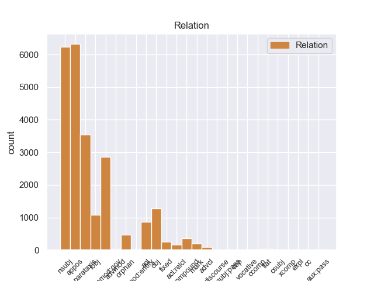
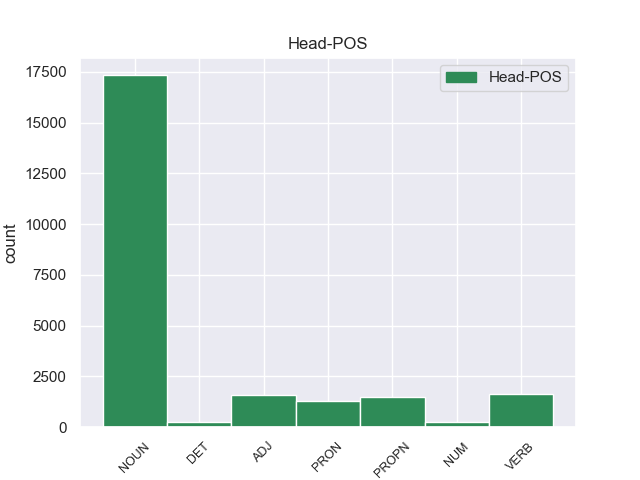
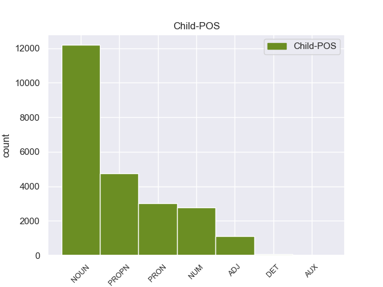

Distribution of features within this leaf



Agreement Rules sorted by frequency.
- When the dependent token is the appositional modifier(appos) of the head token, and the head token is NOUN and the dependent token is PROPN.
1 И _ _ _ _ 0 _ _ _
2 была _ _ _ _ 0 _ _ _
3 смуглая _ _ _ _ 0 _ _ _
4 девочка девочка NOUN _ Animacy=Anim|Case=Nom|Gender=Fem|Number=Sing 0 _ _ _
5 с _ _ _ _ 0 _ _ _
6 безжалостно _ _ _ _ 0 _ _ _
7 исцарапанными _ _ _ _ 0 _ _ _
8 ногами _ _ _ _ 0 _ _ _
9 , _ _ _ _ 0 _ _ _
10 сбитыми _ _ _ _ 0 _ _ _
11 коленями _ _ _ _ 0 _ _ _
12 , _ _ _ _ 0 _ _ _
13 острыми _ _ _ _ 0 _ _ _
14 лопатками _ _ _ _ 0 _ _ _
15 задиры _ _ _ _ 0 _ _ _
16 - _ _ _ _ 0 _ _ _
17 вылитая _ _ _ _ 0 _ _ _
18 Галя Галя PROPN _ Animacy=Anim|Case=Nom|Gender=Fem|Number=Sing 4 appos 4:appos SpaceAfter=No
19 , _ _ _ _ 0 _ _ _
20 и _ _ _ _ 0 _ _ _
21 воспитательница _ _ _ _ 0 _ _ _
22 , _ _ _ _ 0 _ _ _
23 учившая _ _ _ _ 0 _ _ _
24 детей _ _ _ _ 0 _ _ _
25 какой-то _ _ _ _ 0 _ _ _
26 игре _ _ _ _ 0 _ _ _
27 , _ _ _ _ 0 _ _ _
28 на _ _ _ _ 0 _ _ _
29 мгновение _ _ _ _ 0 _ _ _
30 повернула _ _ _ _ 0 _ _ _
31 ко _ _ _ _ 0 _ _ _
32 мне _ _ _ _ 0 _ _ _
33 светлую _ _ _ _ 0 _ _ _
34 лунность _ _ _ _ 0 _ _ _
35 круглого _ _ _ _ 0 _ _ _
36 Муриного _ _ _ _ 0 _ _ _
37 лица _ _ _ _ 0 _ _ _
38 . _ _ _ _ 0 _ _ _
1 Тот _ _ _ _ 0 _ _ _
2 день _ _ _ _ 0 _ _ _
3 начался _ _ _ _ 0 _ _ _
4 с _ _ _ _ 0 _ _ _
5 маленького _ _ _ _ 0 _ _ _
6 чуда _ _ _ _ 0 _ _ _
7 : _ _ _ _ 0 _ _ _
8 оказалось _ _ _ _ 0 _ _ _
9 , _ _ _ _ 0 _ _ _
10 низинный _ _ _ _ 0 _ _ _
11 , _ _ _ _ 0 _ _ _
12 сыроватый _ _ _ _ 0 _ _ _
13 ольшаник _ _ _ _ 0 _ _ _
14 , _ _ _ _ 0 _ _ _
15 примыкающий _ _ _ _ 0 _ _ _
16 с _ _ _ _ 0 _ _ _
17 севера _ _ _ _ 0 _ _ _
18 к _ _ _ _ 0 _ _ _
19 дачной _ _ _ _ 0 _ _ _
20 ограде _ _ _ _ 0 _ _ _
21 , _ _ _ _ 0 _ _ _
22 сказочно _ _ _ _ 0 _ _ _
23 богат _ _ _ _ 0 _ _ _
24 грибами гриб NOUN _ Animacy=Inan|Case=Ins|Gender=Masc|Number=Plur 0 _ _ _
25 свинушками свинушка NOUN _ Animacy=Inan|Case=Ins|Gender=Fem|Number=Plur 24 appos 24:appos SpaceAfter=No
26 . _ _ _ _ 0 _ _ _
1 Да _ _ _ _ 0 _ _ _
2 , _ _ _ _ 0 _ _ _
3 это это PRON _ Animacy=Inan|Case=Nom|Gender=Neut|Number=Sing 5 nsubj 5:nsubj _
4 была _ _ _ _ 0 _ _ _
5 работка работка NOUN _ Animacy=Inan|Case=Nom|Gender=Fem|Number=Sing 0 _ _ _
6 ! _ _ _ _ 0 _ _ _
1 Ничто _ _ _ _ 0 _ _ _
2 не _ _ _ _ 0 _ _ _
3 проходит _ _ _ _ 0 _ _ _
4 бесследно _ _ _ _ 0 _ _ _
5 , _ _ _ _ 0 _ _ _
6 не _ _ _ _ 0 _ _ _
7 зарастает _ _ _ _ 0 _ _ _
8 травой _ _ _ _ 0 _ _ _
9 забвения _ _ _ _ 0 _ _ _
10 , _ _ _ _ 0 _ _ _
11 и _ _ _ _ 0 _ _ _
12 человеческая _ _ _ _ 0 _ _ _
13 душа душа NOUN _ Animacy=Inan|Case=Nom|Gender=Fem|Number=Sing 15 nsubj 15:nsubj _
14 не _ _ _ _ 0 _ _ _
15 кладбище кладбище NOUN _ Animacy=Inan|Case=Nom|Gender=Neut|Number=Sing 0 _ _ _
16 , _ _ _ _ 0 _ _ _
17 а _ _ _ _ 0 _ _ _
18 святилище _ _ _ _ 0 _ _ _
19 , _ _ _ _ 0 _ _ _
20 дарующее _ _ _ _ 0 _ _ _
21 вечную _ _ _ _ 0 _ _ _
22 жизнь _ _ _ _ 0 _ _ _
23 образам _ _ _ _ 0 _ _ _
24 былого _ _ _ _ 0 _ _ _
25 . _ _ _ _ 0 _ _ _
1 - _ _ _ _ 0 _ _ _
2 Ты _ _ _ _ 0 _ _ _
3 дурак дурак NOUN _ Animacy=Anim|Case=Nom|Gender=Masc|Number=Sing 0 _ _ _
4 , _ _ _ _ 0 _ _ _
5 папа папа NOUN _ Animacy=Anim|Case=Nom|Gender=Masc|Number=Sing 3 parataxis 3:parataxis SpaceAfter=No
6 , _ _ _ _ 0 _ _ _
7 - _ _ _ _ 0 _ _ _
8 повторил _ _ _ _ 0 _ _ _
9 младший _ _ _ _ 0 _ _ _
10 и _ _ _ _ 0 _ _ _
11 заплакал _ _ _ _ 0 _ _ _
12 . _ _ _ _ 0 _ _ _
1 Одно один NUM _ Case=Acc|Gender=Neut 3 nummod:gov 3:nummod:gov _
2 красное _ _ _ _ 0 _ _ _
3 перышко перышко NOUN _ Animacy=Inan|Case=Acc|Gender=Neut|Number=Sing 0 _ _ _
4 Павлов _ _ _ _ 0 _ _ _
5 взял _ _ _ _ 0 _ _ _
6 с _ _ _ _ 0 _ _ _
7 собой _ _ _ _ 0 _ _ _
8 : _ _ _ _ 0 _ _ _
9 он _ _ _ _ 0 _ _ _
10 уже _ _ _ _ 0 _ _ _
11 научил _ _ _ _ 0 _ _ _
12 близнецов _ _ _ _ 0 _ _ _
13 грубости _ _ _ _ 0 _ _ _
14 недоверия _ _ _ _ 0 _ _ _
15 и _ _ _ _ 0 _ _ _
16 потому _ _ _ _ 0 _ _ _
17 нуждался _ _ _ _ 0 _ _ _
18 в _ _ _ _ 0 _ _ _
19 вещественном _ _ _ _ 0 _ _ _
20 доказательстве _ _ _ _ 0 _ _ _
21 . _ _ _ _ 0 _ _ _
1 Я _ _ _ _ 0 _ _ _
2 хорошо _ _ _ _ 0 _ _ _
3 знал _ _ _ _ 0 _ _ _
4 окрестность _ _ _ _ 0 _ _ _
5 : _ _ _ _ 0 _ _ _
6 и _ _ _ _ 0 _ _ _
7 со _ _ _ _ 0 _ _ _
8 стороны _ _ _ _ 0 _ _ _
9 Дмитровского _ _ _ _ 0 _ _ _
10 шоссе _ _ _ _ 0 _ _ _
11 , _ _ _ _ 0 _ _ _
12 и _ _ _ _ 0 _ _ _
13 со _ _ _ _ 0 _ _ _
14 стороны _ _ _ _ 0 _ _ _
15 нашей _ _ _ _ 0 _ _ _
16 дачи _ _ _ _ 0 _ _ _
17 , _ _ _ _ 0 _ _ _
18 и _ _ _ _ 0 _ _ _
19 со _ _ _ _ 0 _ _ _
20 стороны _ _ _ _ 0 _ _ _
21 кочкастого _ _ _ _ 0 _ _ _
22 болота _ _ _ _ 0 _ _ _
23 , _ _ _ _ 0 _ _ _
24 тянущегося _ _ _ _ 0 _ _ _
25 за _ _ _ _ 0 _ _ _
26 горизонт _ _ _ _ 0 _ _ _
27 , _ _ _ _ 0 _ _ _
28 лесные _ _ _ _ 0 _ _ _
29 опушки опушка NOUN _ Animacy=Inan|Case=Nom|Gender=Fem|Number=Plur 32 nsubj 32:nsubj _
30 были _ _ _ _ 0 _ _ _
31 сплошь _ _ _ _ 0 _ _ _
32 ольховые ольховый ADJ _ Case=Nom|Degree=Pos|Number=Plur 0 _ _ _
33 . _ _ _ _ 0 _ _ _
1 Осталась _ _ _ _ 0 _ _ _
2 комната _ _ _ _ 0 _ _ _
3 с _ _ _ _ 0 _ _ _
4 трапецией _ _ _ _ 0 _ _ _
5 , _ _ _ _ 0 _ _ _
6 игрушками _ _ _ _ 0 _ _ _
7 и _ _ _ _ 0 _ _ _
8 пухлыми _ _ _ _ 0 _ _ _
9 томами _ _ _ _ 0 _ _ _
10 " _ _ _ _ 0 _ _ _
11 Трех _ _ _ _ 0 _ _ _
12 мушкетеров _ _ _ _ 0 _ _ _
13 " _ _ _ _ 0 _ _ _
14 ; _ _ _ _ 0 _ _ _
15 остался _ _ _ _ 0 _ _ _
16 двор _ _ _ _ 0 _ _ _
17 с _ _ _ _ 0 _ _ _
18 его _ _ _ _ 0 _ _ _
19 волнующей _ _ _ _ 0 _ _ _
20 и _ _ _ _ 0 _ _ _
21 в _ _ _ _ 0 _ _ _
22 чем-то _ _ _ _ 0 _ _ _
23 главном _ _ _ _ 0 _ _ _
24 недоступной _ _ _ _ 0 _ _ _
25 мне _ _ _ _ 0 _ _ _
26 жизнью _ _ _ _ 0 _ _ _
27 ; _ _ _ _ 0 _ _ _
28 впереди _ _ _ _ 0 _ _ _
29 была _ _ _ _ 0 _ _ _
30 чудесная _ _ _ _ 0 _ _ _
31 акуловская _ _ _ _ 0 _ _ _
32 дача _ _ _ _ 0 _ _ _
33 с _ _ _ _ 0 _ _ _
34 извилистой _ _ _ _ 0 _ _ _
35 Учей _ _ _ _ 0 _ _ _
36 , _ _ _ _ 0 _ _ _
37 дремучим _ _ _ _ 0 _ _ _
38 еловым _ _ _ _ 0 _ _ _
39 бором _ _ _ _ 0 _ _ _
40 , _ _ _ _ 0 _ _ _
41 непролазными _ _ _ _ 0 _ _ _
42 ольшаниками _ _ _ _ 0 _ _ _
43 и _ _ _ _ 0 _ _ _
44 великовозрастным _ _ _ _ 0 _ _ _
45 Колькой Колька PROPN _ Animacy=Inan|Case=Ins|Gender=Masc|Number=Sing 0 _ _ _
46 Шугаевым Шугаев PROPN _ Animacy=Inan|Case=Ins|Gender=Masc|Number=Sing 45 appos 45:appos SpaceAfter=No
47 , _ _ _ _ 0 _ _ _
48 посвящавшим _ _ _ _ 0 _ _ _
49 меня _ _ _ _ 0 _ _ _
50 в _ _ _ _ 0 _ _ _
51 тайное _ _ _ _ 0 _ _ _
52 тайных _ _ _ _ 0 _ _ _
53 . _ _ _ _ 0 _ _ _
1 Радостно _ _ _ _ 0 _ _ _
2 - _ _ _ _ 0 _ _ _
3 тревожное _ _ _ _ 0 _ _ _
4 чувство _ _ _ _ 0 _ _ _
5 владело _ _ _ _ 0 _ _ _
6 мною _ _ _ _ 0 _ _ _
7 : _ _ _ _ 0 _ _ _
8 я _ _ _ _ 0 _ _ _
9 знал _ _ _ _ 0 _ _ _
10 , _ _ _ _ 0 _ _ _
11 что _ _ _ _ 0 _ _ _
12 ушел _ _ _ _ 0 _ _ _
13 не _ _ _ _ 0 _ _ _
14 так _ _ _ _ 0 _ _ _
15 уж _ _ _ _ 0 _ _ _
16 далеко _ _ _ _ 0 _ _ _
17 и _ _ _ _ 0 _ _ _
18 все _ _ _ _ 0 _ _ _
19 же _ _ _ _ 0 _ _ _
20 куда _ _ _ _ 0 _ _ _
21 сильнее _ _ _ _ 0 _ _ _
22 оторвался _ _ _ _ 0 _ _ _
23 от _ _ _ _ 0 _ _ _
24 дома _ _ _ _ 0 _ _ _
25 , _ _ _ _ 0 _ _ _
26 чем _ _ _ _ 0 _ _ _
27 если _ _ _ _ 0 _ _ _
28 бы _ _ _ _ 0 _ _ _
29 забрел _ _ _ _ 0 _ _ _
30 в _ _ _ _ 0 _ _ _
31 последнюю _ _ _ _ 0 _ _ _
32 даль _ _ _ _ 0 _ _ _
33 по _ _ _ _ 0 _ _ _
34 знакомой знакомый ADJ _ Case=Dat|Degree=Pos|Gender=Fem|Number=Sing 37 acl 37:acl SpaceAfter=No
35 , _ _ _ _ 0 _ _ _
36 проторенной _ _ _ _ 0 _ _ _
37 тропке тропка NOUN _ Animacy=Inan|Case=Dat|Gender=Fem|Number=Sing 0 _ _ _
38 . _ _ _ _ 0 _ _ _
1 Мальчик _ _ _ _ 0 _ _ _
2 взял _ _ _ _ 0 _ _ _
3 свою _ _ _ _ 0 _ _ _
4 синь _ _ _ _ 0 _ _ _
5 и _ _ _ _ 0 _ _ _
6 свое _ _ _ _ 0 _ _ _
7 золото _ _ _ _ 0 _ _ _
8 от _ _ _ _ 0 _ _ _
9 Шурика Шурик PROPN _ Animacy=Anim|Case=Gen|Gender=Masc|Number=Sing 0 _ _ _
10 , _ _ _ _ 0 _ _ _
11 человека человек NOUN _ Animacy=Anim|Case=Gen|Gender=Masc|Number=Sing 9 appos 9:appos SpaceAfter=No
12 - _ _ _ _ 0 _ _ _
13 рыбки _ _ _ _ 0 _ _ _
14 , _ _ _ _ 0 _ _ _
15 но _ _ _ _ 0 _ _ _
16 в _ _ _ _ 0 _ _ _
17 отличие _ _ _ _ 0 _ _ _
18 от _ _ _ _ 0 _ _ _
19 Шурика _ _ _ _ 0 _ _ _
20 этот _ _ _ _ 0 _ _ _
21 маленький _ _ _ _ 0 _ _ _
22 упрямец _ _ _ _ 0 _ _ _
23 казался _ _ _ _ 0 _ _ _
24 крепко _ _ _ _ 0 _ _ _
25 заземленным _ _ _ _ 0 _ _ _
26 . _ _ _ _ 0 _ _ _
1 Был _ _ _ _ 0 _ _ _
2 ли _ _ _ _ 0 _ _ _
3 в _ _ _ _ 0 _ _ _
4 яви _ _ _ _ 0 _ _ _
5 или _ _ _ _ 0 _ _ _
6 только _ _ _ _ 0 _ _ _
7 приснился _ _ _ _ 0 _ _ _
8 мне _ _ _ _ 0 _ _ _
9 этот _ _ _ _ 0 _ _ _
10 странный _ _ _ _ 0 _ _ _
11 мальчик мальчик NOUN _ Animacy=Anim|Case=Nom|Gender=Masc|Number=Sing 0 _ _ _
12 , _ _ _ _ 0 _ _ _
13 овеянный _ _ _ _ 0 _ _ _
14 нежностью _ _ _ _ 0 _ _ _
15 и _ _ _ _ 0 _ _ _
16 печалью _ _ _ _ 0 _ _ _
17 нездешности _ _ _ _ 0 _ _ _
18 , _ _ _ _ 0 _ _ _
19 как _ _ _ _ 0 _ _ _
20 Маленький _ _ _ _ 0 _ _ _
21 принц принц NOUN _ Animacy=Anim|Case=Nom|Gender=Masc|Number=Sing 11 acl 11:acl _
22 Антуана _ _ _ _ 0 _ _ _
23 де _ _ _ _ 0 _ _ _
24 Сент-Экзюпери _ _ _ _ 0 _ _ _
25 . _ _ _ _ 0 _ _ _
1 Возле _ _ _ _ 0 _ _ _
2 поселка _ _ _ _ 0 _ _ _
3 находился _ _ _ _ 0 _ _ _
4 санаторий _ _ _ _ 0 _ _ _
5 , _ _ _ _ 0 _ _ _
6 там _ _ _ _ 0 _ _ _
7 шло _ _ _ _ 0 _ _ _
8 строительство _ _ _ _ 0 _ _ _
9 и _ _ _ _ 0 _ _ _
10 была _ _ _ _ 0 _ _ _
11 нужда _ _ _ _ 0 _ _ _
12 в _ _ _ _ 0 _ _ _
13 главном _ _ _ _ 0 _ _ _
14 инженере _ _ _ _ 0 _ _ _
15 ; _ _ _ _ 0 _ _ _
16 под _ _ _ _ 0 _ _ _
17 боком _ _ _ _ 0 _ _ _
18 располагалась _ _ _ _ 0 _ _ _
19 отличная _ _ _ _ 0 _ _ _
20 школа школа NOUN _ Animacy=Inan|Case=Nom|Gender=Fem|Number=Sing 0 _ _ _
21 - _ _ _ _ 0 _ _ _
22 десятилетка десятилетка NOUN _ Animacy=Inan|Case=Nom|Gender=Fem|Number=Sing 20 compound 20:compound SpaceAfter=No
23 , _ _ _ _ 0 _ _ _
24 где _ _ _ _ 0 _ _ _
25 как _ _ _ _ 0 _ _ _
26 раз _ _ _ _ 0 _ _ _
27 нужен _ _ _ _ 0 _ _ _
28 был _ _ _ _ 0 _ _ _
29 преподаватель _ _ _ _ 0 _ _ _
30 английского _ _ _ _ 0 _ _ _
31 языка _ _ _ _ 0 _ _ _
32 , _ _ _ _ 0 _ _ _
33 а _ _ _ _ 0 _ _ _
34 жена _ _ _ _ 0 _ _ _
35 Павлова _ _ _ _ 0 _ _ _
36 занималась _ _ _ _ 0 _ _ _
37 техническими _ _ _ _ 0 _ _ _
38 переводами _ _ _ _ 0 _ _ _
39 с _ _ _ _ 0 _ _ _
40 английского _ _ _ _ 0 _ _ _
41 . _ _ _ _ 0 _ _ _
1 Он _ _ _ _ 0 _ _ _
2 осторожно _ _ _ _ 0 _ _ _
3 , _ _ _ _ 0 _ _ _
4 за _ _ _ _ 0 _ _ _
5 дужку _ _ _ _ 0 _ _ _
6 , _ _ _ _ 0 _ _ _
7 снял _ _ _ _ 0 _ _ _
8 очки _ _ _ _ 0 _ _ _
9 , _ _ _ _ 0 _ _ _
10 ему _ _ _ _ 0 _ _ _
11 хотелось _ _ _ _ 0 _ _ _
12 получше _ _ _ _ 0 _ _ _
13 рассмотреть _ _ _ _ 0 _ _ _
14 человека _ _ _ _ 0 _ _ _
15 , _ _ _ _ 0 _ _ _
16 задающего задавать VERB _ Animacy=Anim|Aspect=Imp|Case=Acc|Gender=Masc|Number=Sing|Tense=Pres|VerbForm=Part|Voice=Act 0 _ _ _
17 такие _ _ _ _ 0 _ _ _
18 несуразные _ _ _ _ 0 _ _ _
19 вопросы вопрос NOUN _ Animacy=Inan|Case=Acc|Gender=Masc|Number=Plur 16 obj 16:obj SpaceAfter=No
20 , _ _ _ _ 0 _ _ _
21 а _ _ _ _ 0 _ _ _
22 припылившиеся _ _ _ _ 0 _ _ _
23 стекла _ _ _ _ 0 _ _ _
24 только _ _ _ _ 0 _ _ _
25 мешали _ _ _ _ 0 _ _ _
26 . _ _ _ _ 0 _ _ _
1 Но _ _ _ _ 0 _ _ _
2 , _ _ _ _ 0 _ _ _
3 начиная _ _ _ _ 0 _ _ _
4 с _ _ _ _ 0 _ _ _
5 20-х _ _ _ _ 0 _ _ _
6 годов _ _ _ _ 0 _ _ _
7 , _ _ _ _ 0 _ _ _
8 утвердилось _ _ _ _ 0 _ _ _
9 иное _ _ _ _ 0 _ _ _
10 мнение _ _ _ _ 0 _ _ _
11 : _ _ _ _ 0 _ _ _
12 ВЛКСМ ВЛКСМ PROPN _ Animacy=Inan|Case=Nom|Gender=Masc|Number=Sing 16 nsubj 16:nsubj _
13 - _ _ _ _ 0 _ _ _
14 всего _ _ _ _ 0 _ _ _
15 лишь _ _ _ _ 0 _ _ _
16 инструмент инструмент NOUN _ Animacy=Inan|Case=Nom|Gender=Masc|Number=Sing 0 _ _ _
17 в _ _ _ _ 0 _ _ _
18 руках _ _ _ _ 0 _ _ _
19 партии _ _ _ _ 0 _ _ _
20 . _ _ _ _ 0 _ _ _
1 Были _ _ _ _ 0 _ _ _
2 и _ _ _ _ 0 _ _ _
3 настоящие _ _ _ _ 0 _ _ _
4 , _ _ _ _ 0 _ _ _
5 великие _ _ _ _ 0 _ _ _
6 , _ _ _ _ 0 _ _ _
7 страшноватые _ _ _ _ 0 _ _ _
8 в _ _ _ _ 0 _ _ _
9 широте _ _ _ _ 0 _ _ _
10 своей _ _ _ _ 0 _ _ _
11 и _ _ _ _ 0 _ _ _
12 затаенном _ _ _ _ 0 _ _ _
13 спокойствии _ _ _ _ 0 _ _ _
14 сибирские _ _ _ _ 0 _ _ _
15 реки река NOUN _ Animacy=Inan|Case=Nom|Gender=Fem|Number=Plur 0 _ _ _
16 : _ _ _ _ 0 _ _ _
17 Обь Обь PROPN _ Animacy=Inan|Case=Nom|Gender=Fem|Number=Sing 15 parataxis 15:parataxis SpaceAfter=No
18 , _ _ _ _ 0 _ _ _
19 Енисей _ _ _ _ 0 _ _ _
20 , _ _ _ _ 0 _ _ _
21 Иртыш _ _ _ _ 0 _ _ _
22 . _ _ _ _ 0 _ _ _
1 Норма _ _ _ _ 0 _ _ _
2 избирателей _ _ _ _ 0 _ _ _
3 на _ _ _ _ 0 _ _ _
4 один _ _ _ _ 0 _ _ _
5 территориальный _ _ _ _ 0 _ _ _
6 округ _ _ _ _ 0 _ _ _
7 дана _ _ _ _ 0 _ _ _
8 из _ _ _ _ 0 _ _ _
9 расчета _ _ _ _ 0 _ _ _
10 257,3 _ _ _ _ 0 _ _ _
11 тысячи тысяча NOUN _ Animacy=Inan|Case=Gen|Gender=Fem|Number=Sing 12 nummod:gov 12:nummod:gov _
12 человек человек NOUN _ Animacy=Anim|Case=Gen|Gender=Masc|Number=Plur 0 _ _ _
13 . _ _ _ _ 0 _ _ _
1 Она _ _ _ _ 0 _ _ _
2 была _ _ _ _ 0 _ _ _
3 доверчивой _ _ _ _ 0 _ _ _
4 и _ _ _ _ 0 _ _ _
5 доброй _ _ _ _ 0 _ _ _
6 птицей _ _ _ _ 0 _ _ _
7 , _ _ _ _ 0 _ _ _
8 в _ _ _ _ 0 _ _ _
9 ней _ _ _ _ 0 _ _ _
10 чувствовался _ _ _ _ 0 _ _ _
11 прекрасный _ _ _ _ 0 _ _ _
12 характер характер NOUN _ Animacy=Inan|Case=Nom|Gender=Masc|Number=Sing 0 _ _ _
13 : _ _ _ _ 0 _ _ _
14 широкий широкий ADJ _ Case=Nom|Degree=Pos|Gender=Masc|Number=Sing 12 parataxis 12:parataxis SpaceAfter=No
15 , _ _ _ _ 0 _ _ _
16 беспечный _ _ _ _ 0 _ _ _
17 , _ _ _ _ 0 _ _ _
18 дерзкий _ _ _ _ 0 _ _ _
19 . _ _ _ _ 0 _ _ _
1 - _ _ _ _ 0 _ _ _
2 Она она PRON _ Case=Nom|Gender=Fem|Number=Sing|Person=3 4 nsubj 4:nsubj _
3 вся _ _ _ _ 0 _ _ _
4 зеленая зеленый ADJ _ Case=Nom|Degree=Pos|Gender=Fem|Number=Sing 0 _ _ _
5 , _ _ _ _ 0 _ _ _
6 до _ _ _ _ 0 _ _ _
7 последнего _ _ _ _ 0 _ _ _
8 перышка _ _ _ _ 0 _ _ _
9 , _ _ _ _ 0 _ _ _
10 и _ _ _ _ 0 _ _ _
11 с _ _ _ _ 0 _ _ _
12 красной _ _ _ _ 0 _ _ _
13 головой _ _ _ _ 0 _ _ _
14 ! _ _ _ _ 0 _ _ _
1 - _ _ _ _ 0 _ _ _
2 Мама _ _ _ _ 0 _ _ _
3 , _ _ _ _ 0 _ _ _
4 кто кто PRON _ Case=Nom 0 _ _ _
5 это это PRON _ Animacy=Inan|Case=Nom|Gender=Neut|Number=Sing 4 nsubj 4:nsubj SpaceAfter=No
6 ! _ _ _ _ 0 _ _ _
7 - _ _ _ _ 0 _ _ _
8 пробормотал _ _ _ _ 0 _ _ _
9 я _ _ _ _ 0 _ _ _
10 сонным _ _ _ _ 0 _ _ _
11 голосом _ _ _ _ 0 _ _ _
12 . _ _ _ _ 0 _ _ _
1 Она _ _ _ _ 0 _ _ _
2 осталась _ _ _ _ 0 _ _ _
3 в _ _ _ _ 0 _ _ _
4 тени _ _ _ _ 0 _ _ _
5 , _ _ _ _ 0 _ _ _
6 над _ _ _ _ 0 _ _ _
7 нею _ _ _ _ 0 _ _ _
8 мы _ _ _ _ 0 _ _ _
9 стали _ _ _ _ 0 _ _ _
10 задумываться _ _ _ _ 0 _ _ _
11 всерьез _ _ _ _ 0 _ _ _
12 только _ _ _ _ 0 _ _ _
13 два два NUM _ Animacy=Inan|Case=Acc|Gender=Masc 0 _ _ _
14 - _ _ _ _ 0 _ _ _
15 три три NUM _ Animacy=Inan|Case=Acc 13 nummod:gov 13:nummod:gov _
16 года _ _ _ _ 0 _ _ _
17 назад _ _ _ _ 0 _ _ _
18 . _ _ _ _ 0 _ _ _
1 Задумаемся _ _ _ _ 0 _ _ _
2 : _ _ _ _ 0 _ _ _
3 что что PRON _ Case=Nom 0 _ _ _
4 такое _ _ _ _ 0 _ _ _
5 выборы выборы NOUN _ Animacy=Inan|Case=Nom|Gender=Masc|Number=Plur 3 nsubj 3:nsubj SpaceAfter=No
6 ? _ _ _ _ 0 _ _ _
1 Это _ _ _ _ 0 _ _ _
2 видно _ _ _ _ 0 _ _ _
3 хотя _ _ _ _ 0 _ _ _
4 бы _ _ _ _ 0 _ _ _
5 из _ _ _ _ 0 _ _ _
6 сравнения _ _ _ _ 0 _ _ _
7 значений _ _ _ _ 0 _ _ _
8 ПДК ПДК PROPN _ Animacy=Inan|Case=Gen|Gender=Fem|Number=Plur 0 _ _ _
9 , _ _ _ _ 0 _ _ _
10 то _ _ _ _ 0 _ _ _
11 есть _ _ _ _ 0 _ _ _
12 предельно _ _ _ _ 0 _ _ _
13 допустимых _ _ _ _ 0 _ _ _
14 концентраций концентрация NOUN _ Animacy=Inan|Case=Gen|Gender=Fem|Number=Plur 8 parataxis 8:parataxis _
15 вредного _ _ _ _ 0 _ _ _
16 вещества _ _ _ _ 0 _ _ _
17 в _ _ _ _ 0 _ _ _
18 атмосферном _ _ _ _ 0 _ _ _
19 воздухе _ _ _ _ 0 _ _ _
20 . _ _ _ _ 0 _ _ _
1 Верно _ _ _ _ 0 _ _ _
2 , _ _ _ _ 0 _ _ _
3 по _ _ _ _ 0 _ _ _
4 той _ _ _ _ 0 _ _ _
5 же _ _ _ _ 0 _ _ _
6 причине _ _ _ _ 0 _ _ _
7 звучали _ _ _ _ 0 _ _ _
8 тут _ _ _ _ 0 _ _ _
9 так _ _ _ _ 0 _ _ _
10 ясно _ _ _ _ 0 _ _ _
11 , _ _ _ _ 0 _ _ _
12 открыто _ _ _ _ 0 _ _ _
13 непуганые _ _ _ _ 0 _ _ _
14 голоса _ _ _ _ 0 _ _ _
15 ушедших _ _ _ _ 0 _ _ _
16 ; _ _ _ _ 0 _ _ _
17 я _ _ _ _ 0 _ _ _
18 слышал _ _ _ _ 0 _ _ _
19 голос _ _ _ _ 0 _ _ _
20 деда _ _ _ _ 0 _ _ _
21 и _ _ _ _ 0 _ _ _
22 голос _ _ _ _ 0 _ _ _
23 своего _ _ _ _ 0 _ _ _
24 отца _ _ _ _ 0 _ _ _
25 , _ _ _ _ 0 _ _ _
26 и _ _ _ _ 0 _ _ _
27 слепые _ _ _ _ 0 _ _ _
28 дети _ _ _ _ 0 _ _ _
29 закричали _ _ _ _ 0 _ _ _
30 жалостно _ _ _ _ 0 _ _ _
31 : _ _ _ _ 0 _ _ _
32 " _ _ _ _ 0 _ _ _
When the dependent token is the parataxis(parataxis) of the head token, and the head token is ADJ and the dependent token is NOUN.
1 Образовавшаяся _ _ _ _ 0 _ _ _
2 пустота _ _ _ _ 0 _ _ _
3 заполнилась _ _ _ _ 0 _ _ _
4 усиленным _ _ _ _ 0 _ _ _
5 вниманием _ _ _ _ 0 _ _ _
6 близких близкий ADJ _ Case=Gen|Degree=Pos|Number=Plur 0 _ _ _
7 : _ _ _ _ 0 _ _ _
8 деда дед NOUN _ Animacy=Anim|Case=Gen|Gender=Masc|Number=Sing 6 parataxis 6:parataxis SpaceAfter=No
9 , _ _ _ _ 0 _ _ _
10 Дашуры _ _ _ _ 0 _ _ _
11 , _ _ _ _ 0 _ _ _
12 мамы _ _ _ _ 0 _ _ _
13 . _ _ _ _ 0 _ _ _
When the dependent token is the nominal subject(nsubj) of the head token, and the head token is DET and the dependent token is NOUN.
1 - _ _ _ _ 0 _ _ _
2 На _ _ _ _ 0 _ _ _
3 мой _ _ _ _ 0 _ _ _
4 взгляд _ _ _ _ 0 _ _ _
5 , _ _ _ _ 0 _ _ _
6 причина причина NOUN _ Animacy=Inan|Case=Nom|Gender=Fem|Number=Sing 7 nsubj 7:nsubj _
7 одна один DET _ Case=Nom|Degree=Pos|Gender=Fem|Number=Sing 0 _ _ _
8 : _ _ _ _ 0 _ _ _
9 отрыв _ _ _ _ 0 _ _ _
10 аппарата _ _ _ _ 0 _ _ _
11 управления _ _ _ _ 0 _ _ _
12 от _ _ _ _ 0 _ _ _
13 первичных _ _ _ _ 0 _ _ _
14 организаций _ _ _ _ 0 _ _ _
15 , _ _ _ _ 0 _ _ _
16 огосударствление _ _ _ _ 0 _ _ _
17 ВЛКСМ _ _ _ _ 0 _ _ _
18 , _ _ _ _ 0 _ _ _
19 превращение _ _ _ _ 0 _ _ _
20 его _ _ _ _ 0 _ _ _
21 в _ _ _ _ 0 _ _ _
22 своеобразный _ _ _ _ 0 _ _ _
23 наркомат _ _ _ _ 0 _ _ _
24 по _ _ _ _ 0 _ _ _
25 делам _ _ _ _ 0 _ _ _
26 молодежи _ _ _ _ 0 _ _ _
27 . _ _ _ _ 0 _ _ _
When the dependent token is the appositional modifier(appos) of the head token, and the head token is PRON and the dependent token is NOUN.
1 Оно оно PRON _ Case=Nom|Gender=Neut|Number=Sing|Person=3 0 _ _ _
2 было _ _ _ _ 0 _ _ _
3 неправдоподобно _ _ _ _ 0 _ _ _
4 тихим _ _ _ _ 0 _ _ _
5 , _ _ _ _ 0 _ _ _
6 это _ _ _ _ 0 _ _ _
7 стадо стадо NOUN _ Animacy=Inan|Case=Nom|Gender=Neut|Number=Sing 1 appos 1:appos SpaceAfter=No
8 ; _ _ _ _ 0 _ _ _
9 коровы _ _ _ _ 0 _ _ _
10 лежали _ _ _ _ 0 _ _ _
11 , _ _ _ _ 0 _ _ _
12 словно _ _ _ _ 0 _ _ _
13 затаясь _ _ _ _ 0 _ _ _
14 , _ _ _ _ 0 _ _ _
15 чем-то _ _ _ _ 0 _ _ _
16 опасным _ _ _ _ 0 _ _ _
17 веяло _ _ _ _ 0 _ _ _
18 от _ _ _ _ 0 _ _ _
19 их _ _ _ _ 0 _ _ _
20 бесшумности _ _ _ _ 0 _ _ _
21 . _ _ _ _ 0 _ _ _
When the dependent token is the nominal subject(nsubj) of the head token, and the head token is NOUN and the dependent token is ADJ.
1 Общее общий ADJ _ Case=Nom|Degree=Pos|Gender=Neut|Number=Sing 12 nsubj 12:nsubj SpaceAfter=No
2 , _ _ _ _ 0 _ _ _
3 что _ _ _ _ 0 _ _ _
4 характерно _ _ _ _ 0 _ _ _
5 для _ _ _ _ 0 _ _ _
6 истории _ _ _ _ 0 _ _ _
7 конца _ _ _ _ 0 _ _ _
8 XX _ _ _ _ 0 _ _ _
9 века _ _ _ _ 0 _ _ _
10 , _ _ _ _ 0 _ _ _
11 - _ _ _ _ 0 _ _ _
12 глобализация глобализация NOUN _ Animacy=Inan|Case=Nom|Gender=Fem|Number=Sing 0 _ _ _
13 социальной _ _ _ _ 0 _ _ _
14 , _ _ _ _ 0 _ _ _
15 экономической _ _ _ _ 0 _ _ _
16 и _ _ _ _ 0 _ _ _
17 политической _ _ _ _ 0 _ _ _
18 жизни _ _ _ _ 0 _ _ _
19 народов _ _ _ _ 0 _ _ _
20 , _ _ _ _ 0 _ _ _
21 наряду _ _ _ _ 0 _ _ _
22 с _ _ _ _ 0 _ _ _
23 этим _ _ _ _ 0 _ _ _
24 - _ _ _ _ 0 _ _ _
25 глобализация _ _ _ _ 0 _ _ _
26 опасностей _ _ _ _ 0 _ _ _
27 , _ _ _ _ 0 _ _ _
28 грозящих _ _ _ _ 0 _ _ _
29 человеческому _ _ _ _ 0 _ _ _
30 роду _ _ _ _ 0 _ _ _
31 . _ _ _ _ 0 _ _ _
When the dependent token is the adjectival clause(acl) of the head token, and the head token is PRON and the dependent token is NOUN.
1 Рынок _ _ _ _ 0 _ _ _
2 крутил _ _ _ _ 0 _ _ _
3 нас мы PRON _ Case=Acc|Number=Plur|Person=1 0 _ _ _
4 , _ _ _ _ 0 _ _ _
5 как _ _ _ _ 0 _ _ _
6 водоворот водоворот NOUN _ Animacy=Inan|Case=Acc|Gender=Masc|Number=Sing 3 acl 3:acl SpaceAfter=No
7 , _ _ _ _ 0 _ _ _
8 возбуждал _ _ _ _ 0 _ _ _
9 , _ _ _ _ 0 _ _ _
10 напрягал _ _ _ _ 0 _ _ _
11 и _ _ _ _ 0 _ _ _
12 обострял _ _ _ _ 0 _ _ _
13 чувства _ _ _ _ 0 _ _ _
14 . _ _ _ _ 0 _ _ _
When the dependent token is the marker(mark) of the head token, and the head token is NOUN and the dependent token is PRON.
1 Так _ _ _ _ 0 _ _ _
2 Дума _ _ _ _ 0 _ _ _
3 Народного _ _ _ _ 0 _ _ _
4 фронта _ _ _ _ 0 _ _ _
5 Латвии _ _ _ _ 0 _ _ _
6 недавно _ _ _ _ 0 _ _ _
7 одобрила _ _ _ _ 0 _ _ _
8 обращение _ _ _ _ 0 _ _ _
9 своего _ _ _ _ 0 _ _ _
10 правления _ _ _ _ 0 _ _ _
11 , _ _ _ _ 0 _ _ _
12 предложившего _ _ _ _ 0 _ _ _
13 членам _ _ _ _ 0 _ _ _
14 фронта _ _ _ _ 0 _ _ _
15 обсудить _ _ _ _ 0 _ _ _
16 целесообразность _ _ _ _ 0 _ _ _
17 начала _ _ _ _ 0 _ _ _
18 борьбы _ _ _ _ 0 _ _ _
19 за _ _ _ _ 0 _ _ _
20 политическую _ _ _ _ 0 _ _ _
21 и _ _ _ _ 0 _ _ _
22 экономическую _ _ _ _ 0 _ _ _
23 независимость _ _ _ _ 0 _ _ _
24 Латвии _ _ _ _ 0 _ _ _
25 , _ _ _ _ 0 _ _ _
26 т. то PRON _ Animacy=Inan|Case=Nom|Gender=Neut|Number=Sing 28 mark 28:mark _
27 е. _ _ _ _ 0 _ _ _
28 достижение достижение NOUN _ Animacy=Inan|Case=Nom|Gender=Neut|Number=Sing 0 _ _ _
29 ее _ _ _ _ 0 _ _ _
30 суверенитета _ _ _ _ 0 _ _ _
31 за _ _ _ _ 0 _ _ _
32 рамками _ _ _ _ 0 _ _ _
33 государственности _ _ _ _ 0 _ _ _
34 СССР _ _ _ _ 0 _ _ _
35 . _ _ _ _ 0 _ _ _
When the dependent token is the nominal subject(nsubj) of the head token, and the head token is PROPN and the dependent token is NOUN.
1 По _ _ _ _ 0 _ _ _
2 сцене _ _ _ _ 0 _ _ _
3 ее _ _ _ _ 0 _ _ _
4 фамилия фамилия NOUN _ Animacy=Inan|Case=Nom|Gender=Fem|Number=Sing 5 nsubj 5:nsubj _
5 Ульская Ульская PROPN _ Animacy=Inan|Case=Nom|Gender=Fem|Number=Sing 0 _ _ _
6 , _ _ _ _ 0 _ _ _
7 по _ _ _ _ 0 _ _ _
8 паспорту _ _ _ _ 0 _ _ _
9 - _ _ _ _ 0 _ _ _
9.1 _ _ _ _ _ 0 _ _ _
10 Заяц _ _ _ _ 0 _ _ _
11 ; _ _ _ _ 0 _ _ _
12 это _ _ _ _ 0 _ _ _
13 ужасно _ _ _ _ 0 _ _ _
14 , _ _ _ _ 0 _ _ _
15 она _ _ _ _ 0 _ _ _
16 до _ _ _ _ 0 _ _ _
17 сих _ _ _ _ 0 _ _ _
18 пор _ _ _ _ 0 _ _ _
19 краснеет _ _ _ _ 0 _ _ _
20 , _ _ _ _ 0 _ _ _
21 когда _ _ _ _ 0 _ _ _
22 почтальон _ _ _ _ 0 _ _ _
23 приносит _ _ _ _ 0 _ _ _
24 ей _ _ _ _ 0 _ _ _
25 пенсию _ _ _ _ 0 _ _ _
26 и _ _ _ _ 0 _ _ _
27 приходится _ _ _ _ 0 _ _ _
28 расписываться _ _ _ _ 0 _ _ _
29 так _ _ _ _ 0 _ _ _
30 неприлично _ _ _ _ 0 _ _ _
31 . _ _ _ _ 0 _ _ _
When the dependent token is the appositional modifier(appos) of the head token, and the head token is ADJ and the dependent token is ADJ.
1 К _ _ _ _ 0 _ _ _
2 депутатской _ _ _ _ 0 _ _ _
3 деятельности _ _ _ _ 0 _ _ _
4 он _ _ _ _ 0 _ _ _
5 должен _ _ _ _ 0 _ _ _
6 быть _ _ _ _ 0 _ _ _
7 подготовлен _ _ _ _ 0 _ _ _
8 всей _ _ _ _ 0 _ _ _
9 своей _ _ _ _ 0 _ _ _
10 предшествующей _ _ _ _ 0 _ _ _
11 работой _ _ _ _ 0 _ _ _
12 : _ _ _ _ 0 _ _ _
13 государственной _ _ _ _ 0 _ _ _
14 , _ _ _ _ 0 _ _ _
15 профессиональной _ _ _ _ 0 _ _ _
16 , _ _ _ _ 0 _ _ _
17 общественной общественный ADJ _ Case=Ins|Degree=Pos|Gender=Fem|Number=Sing 0 _ _ _
18 ( _ _ _ _ 0 _ _ _
19 партийной партийный ADJ _ Case=Ins|Degree=Pos|Gender=Fem|Number=Sing 17 appos 17:appos SpaceAfter=No
20 , _ _ _ _ 0 _ _ _
21 профсоюзной _ _ _ _ 0 _ _ _
22 и _ _ _ _ 0 _ _ _
23 т. _ _ _ _ 0 _ _ _
24 д _ _ _ _ 0 _ _ _
25 ) _ _ _ _ 0 _ _ _
26 . _ _ _ _ 0 _ _ _
When the dependent token is the nominal subject(nsubj) of the head token, and the head token is NUM and the dependent token is NOUN.
1 Дети _ _ _ _ 0 _ _ _
2 любят _ _ _ _ 0 _ _ _
3 играть _ _ _ _ 0 _ _ _
4 в _ _ _ _ 0 _ _ _
5 куплю _ _ _ _ 0 _ _ _
6 - _ _ _ _ 0 _ _ _
7 продажу _ _ _ _ 0 _ _ _
8 , _ _ _ _ 0 _ _ _
9 инстинкт инстинкт NOUN _ Animacy=Inan|Case=Nom|Gender=Masc|Number=Sing 16 nsubj 16:nsubj _
10 торговли _ _ _ _ 0 _ _ _
11 , _ _ _ _ 0 _ _ _
12 мены _ _ _ _ 0 _ _ _
13 , _ _ _ _ 0 _ _ _
14 наверное _ _ _ _ 0 _ _ _
15 , _ _ _ _ 0 _ _ _
16 один один NUM _ Case=Nom|Gender=Masc 0 _ _ _
17 из _ _ _ _ 0 _ _ _
18 древнейших _ _ _ _ 0 _ _ _
19 человеческих _ _ _ _ 0 _ _ _
20 инстинктов _ _ _ _ 0 _ _ _
21 . _ _ _ _ 0 _ _ _
When the dependent token is the nominal subject(nsubj) of the head token, and the head token is PROPN and the dependent token is PRON.
1 И _ _ _ _ 0 _ _ _
2 тут _ _ _ _ 0 _ _ _
3 яркий _ _ _ _ 0 _ _ _
4 сноп _ _ _ _ 0 _ _ _
5 выхватил _ _ _ _ 0 _ _ _
6 из _ _ _ _ 0 _ _ _
7 ночи _ _ _ _ 0 _ _ _
8 тело _ _ _ _ 0 _ _ _
9 парня _ _ _ _ 0 _ _ _
10 - _ _ _ _ 0 _ _ _
11 это это PRON _ Animacy=Inan|Case=Nom|Gender=Neut|Number=Sing 17 nsubj 17:nsubj _
12 был _ _ _ _ 0 _ _ _
13 , _ _ _ _ 0 _ _ _
14 конечно _ _ _ _ 0 _ _ _
15 , _ _ _ _ 0 _ _ _
16 не _ _ _ _ 0 _ _ _
17 Ленечка Ленечка PROPN _ Animacy=Anim|Case=Nom|Gender=Masc|Number=Sing 0 _ _ _
18 . _ _ _ _ 0 _ _ _
When the dependent token is the parataxis(parataxis) of the head token, and the head token is ADJ and the dependent token is ADJ.
1 Это _ _ _ _ 0 _ _ _
2 была _ _ _ _ 0 _ _ _
3 трудная _ _ _ _ 0 _ _ _
4 любовь _ _ _ _ 0 _ _ _
5 , _ _ _ _ 0 _ _ _
6 но _ _ _ _ 0 _ _ _
7 была _ _ _ _ 0 _ _ _
8 и _ _ _ _ 0 _ _ _
9 другая другой ADJ _ Case=Nom|Degree=Pos|Gender=Fem|Number=Sing 0 _ _ _
10 - _ _ _ _ 0 _ _ _
11 нежная нежный ADJ _ Case=Nom|Degree=Pos|Gender=Fem|Number=Sing 9 parataxis 9:parataxis SpaceAfter=No
12 , _ _ _ _ 0 _ _ _
13 легкая _ _ _ _ 0 _ _ _
14 , _ _ _ _ 0 _ _ _
15 радостная _ _ _ _ 0 _ _ _
16 . _ _ _ _ 0 _ _ _
When the dependent token is the parataxis(parataxis) of the head token, and the head token is PROPN and the dependent token is PROPN.
1 Закон _ _ _ _ 0 _ _ _
2 Литовской _ _ _ _ 0 _ _ _
3 ССР _ _ _ _ 0 _ _ _
4 от _ _ _ _ 0 _ _ _
5 18 _ _ _ _ 0 _ _ _
6 мая _ _ _ _ 0 _ _ _
7 с _ _ _ _ 0 _ _ _
8 . _ _ _ _ 0 _ _ _
9 г _ _ _ _ 0 _ _ _
10 . _ _ _ _ 0 _ _ _
11 " _ _ _ _ 0 _ _ _
12 О _ _ _ _ 0 _ _ _
13 внесении _ _ _ _ 0 _ _ _
14 изменений _ _ _ _ 0 _ _ _
15 в _ _ _ _ 0 _ _ _
16 Конституцию Конституция PROPN _ Animacy=Inan|Case=Acc|Gender=Fem|Number=Sing 0 _ _ _
17 ( _ _ _ _ 0 _ _ _
18 Основной _ _ _ _ 0 _ _ _
19 Закон Закон PROPN _ Animacy=Inan|Case=Acc|Gender=Masc|Number=Sing 16 parataxis 16:parataxis SpaceAfter=No
20 ) _ _ _ _ 0 _ _ _
21 Литовской _ _ _ _ 0 _ _ _
22 ССР _ _ _ _ 0 _ _ _
23 " _ _ _ _ 0 _ _ _
24 в _ _ _ _ 0 _ _ _
25 ст _ _ _ _ 0 _ _ _
26 . _ _ _ _ 0 _ _ _
27 70 _ _ _ _ 0 _ _ _
28 установил _ _ _ _ 0 _ _ _
29 , _ _ _ _ 0 _ _ _
30 что _ _ _ _ 0 _ _ _
31 " _ _ _ _ 0 _ _ _
32 в _ _ _ _ 0 _ _ _
33 республике _ _ _ _ 0 _ _ _
34 действуют _ _ _ _ 0 _ _ _
35 только _ _ _ _ 0 _ _ _
36 ее _ _ _ _ 0 _ _ _
37 Верховным _ _ _ _ 0 _ _ _
38 Советом _ _ _ _ 0 _ _ _
39 или _ _ _ _ 0 _ _ _
40 путем _ _ _ _ 0 _ _ _
41 референдума _ _ _ _ 0 _ _ _
42 принятые _ _ _ _ 0 _ _ _
43 законы _ _ _ _ 0 _ _ _
44 . _ _ _ _ 0 _ _ _
When the dependent token is the adjectival clause(acl) of the head token, and the head token is PROPN and the dependent token is NOUN.
1 Срок _ _ _ _ 0 _ _ _
2 полномочий _ _ _ _ 0 _ _ _
3 Мэри Мэри PROPN _ Animacy=Anim|Case=Gen|Gender=Fem|Number=Sing 0 _ _ _
4 Робинсон _ _ _ _ 0 _ _ _
5 , _ _ _ _ 0 _ _ _
6 как _ _ _ _ 0 _ _ _
7 верховного _ _ _ _ 0 _ _ _
8 комиссара комиссар NOUN _ Animacy=Anim|Case=Gen|Gender=Masc|Number=Sing 3 acl 3:acl SpaceAfter=No
9 , _ _ _ _ 0 _ _ _
10 истек _ _ _ _ 0 _ _ _
11 еще _ _ _ _ 0 _ _ _
12 в _ _ _ _ 0 _ _ _
13 прошлом _ _ _ _ 0 _ _ _
14 году _ _ _ _ 0 _ _ _
15 , _ _ _ _ 0 _ _ _
16 однако _ _ _ _ 0 _ _ _
17 она _ _ _ _ 0 _ _ _
18 осталась _ _ _ _ 0 _ _ _
19 на _ _ _ _ 0 _ _ _
20 своем _ _ _ _ 0 _ _ _
21 посту _ _ _ _ 0 _ _ _
22 по _ _ _ _ 0 _ _ _
23 просьбе _ _ _ _ 0 _ _ _
24 генсека _ _ _ _ 0 _ _ _
25 ООН _ _ _ _ 0 _ _ _
26 Кофи _ _ _ _ 0 _ _ _
27 Аннана _ _ _ _ 0 _ _ _
28 . _ _ _ _ 0 _ _ _
When the dependent token is the flat multiword expression(flat) of the head token, and the head token is PROPN and the dependent token is PROPN.
1 Компания _ _ _ _ 0 _ _ _
2 Ford _ _ _ _ 0 _ _ _
3 выпустила _ _ _ _ 0 _ _ _
4 в _ _ _ _ 0 _ _ _
5 ограниченном _ _ _ _ 0 _ _ _
6 количестве _ _ _ _ 0 _ _ _
7 финальную _ _ _ _ 0 _ _ _
8 версию _ _ _ _ 0 _ _ _
9 модели _ _ _ _ 0 _ _ _
10 Lincoln Lincoln PROPN _ Animacy=Inan|Case=Gen|Foreign=Yes|Gender=Fem|Number=Sing 0 _ _ _
11 continental Continental PROPN _ Animacy=Inan|Case=Gen|Foreign=Yes|Gender=Fem|Number=Sing 10 flat 10:flat SpaceAfter=No
12 . _ _ _ _ 0 _ _ _
When the dependent token is the appositional modifier(appos) of the head token, and the head token is NOUN and the dependent token is PRON.
1 А _ _ _ _ 0 _ _ _
2 ответ ответ NOUN _ Animacy=Inan|Case=Nom|Gender=Masc|Number=Sing 0 _ _ _
3 - _ _ _ _ 0 _ _ _
4 вот _ _ _ _ 0 _ _ _
5 он он PRON _ Case=Nom|Gender=Masc|Number=Sing|Person=3 2 appos 2:appos SpaceAfter=No
6 : _ _ _ _ 0 _ _ _
7 все _ _ _ _ 0 _ _ _
8 прежние _ _ _ _ 0 _ _ _
9 попытки _ _ _ _ 0 _ _ _
10 реформ _ _ _ _ 0 _ _ _
11 не _ _ _ _ 0 _ _ _
12 принесли _ _ _ _ 0 _ _ _
13 должного _ _ _ _ 0 _ _ _
14 результата _ _ _ _ 0 _ _ _
15 , _ _ _ _ 0 _ _ _
16 потому _ _ _ _ 0 _ _ _
17 что _ _ _ _ 0 _ _ _
18 не _ _ _ _ 0 _ _ _
19 опирались _ _ _ _ 0 _ _ _
20 на _ _ _ _ 0 _ _ _
21 широкое _ _ _ _ 0 _ _ _
22 развертывание _ _ _ _ 0 _ _ _
23 процессов _ _ _ _ 0 _ _ _
24 демократизации _ _ _ _ 0 _ _ _
25 . _ _ _ _ 0 _ _ _
When the dependent token is the parataxis(parataxis) of the head token, and the head token is NOUN and the dependent token is PRON.
1 По _ _ _ _ 0 _ _ _
2 главной _ _ _ _ 0 _ _ _
3 улице _ _ _ _ 0 _ _ _
4 города _ _ _ _ 0 _ _ _
5 , _ _ _ _ 0 _ _ _
6 куда _ _ _ _ 0 _ _ _
7 выходила _ _ _ _ 0 _ _ _
8 наша _ _ _ _ 0 _ _ _
9 Малая _ _ _ _ 0 _ _ _
10 Блиновская _ _ _ _ 0 _ _ _
11 , _ _ _ _ 0 _ _ _
12 гуляли _ _ _ _ 0 _ _ _
13 среди _ _ _ _ 0 _ _ _
14 городской _ _ _ _ 0 _ _ _
15 толпы _ _ _ _ 0 _ _ _
16 высокие _ _ _ _ 0 _ _ _
17 , _ _ _ _ 0 _ _ _
18 стройные _ _ _ _ 0 _ _ _
19 , _ _ _ _ 0 _ _ _
20 светловолосые _ _ _ _ 0 _ _ _
21 мужчины _ _ _ _ 0 _ _ _
22 и _ _ _ _ 0 _ _ _
23 под _ _ _ _ 0 _ _ _
24 стать _ _ _ _ 0 _ _ _
25 им _ _ _ _ 0 _ _ _
26 высокие _ _ _ _ 0 _ _ _
27 , _ _ _ _ 0 _ _ _
28 гибкие _ _ _ _ 0 _ _ _
29 женщины женщина NOUN _ Animacy=Anim|Case=Nom|Gender=Fem|Number=Plur 0 _ _ _
30 , _ _ _ _ 0 _ _ _
31 - _ _ _ _ 0 _ _ _
32 все все PRON _ Animacy=Inan|Case=Nom|Gender=Neut|Number=Sing 29 parataxis 29:parataxis _
33 в _ _ _ _ 0 _ _ _
34 легкой _ _ _ _ 0 _ _ _
35 серой _ _ _ _ 0 _ _ _
36 или _ _ _ _ 0 _ _ _
37 кремовой _ _ _ _ 0 _ _ _
38 фланели _ _ _ _ 0 _ _ _
39 , _ _ _ _ 0 _ _ _
40 в _ _ _ _ 0 _ _ _
41 красивых _ _ _ _ 0 _ _ _
42 мягких _ _ _ _ 0 _ _ _
43 туфлях _ _ _ _ 0 _ _ _
44 на _ _ _ _ 0 _ _ _
45 толстой _ _ _ _ 0 _ _ _
46 каучуковой _ _ _ _ 0 _ _ _
47 подошве _ _ _ _ 0 _ _ _
48 . _ _ _ _ 0 _ _ _
When the dependent token is the indirect object(iobj) of the head token, and the head token is NOUN and the dependent token is NOUN.
1 Вот _ _ _ _ 0 _ _ _
2 стал _ _ _ _ 0 _ _ _
3 председателем _ _ _ _ 0 _ _ _
4 республиканского _ _ _ _ 0 _ _ _
5 комитета комитет NOUN _ Animacy=Inan|Case=Gen|Gender=Masc|Number=Sing 0 _ _ _
6 народного _ _ _ _ 0 _ _ _
7 контроля контроль NOUN _ Animacy=Inan|Case=Gen|Gender=Masc|Number=Sing 5 iobj 5:iobj SpaceAfter=No
8 . _ _ _ _ 0 _ _ _
When the dependent token is the nominal subject(nsubj) of the head token, and the head token is NOUN and the dependent token is NUM.
1 Например _ _ _ _ 0 _ _ _
2 , _ _ _ _ 0 _ _ _
3 одна один NUM _ Case=Nom|Gender=Fem 9 nsubj 9:nsubj _
4 из _ _ _ _ 0 _ _ _
5 фундаментальных _ _ _ _ 0 _ _ _
6 задач _ _ _ _ 0 _ _ _
7 космонавтики _ _ _ _ 0 _ _ _
8 - _ _ _ _ 0 _ _ _
9 создание создание NOUN _ Animacy=Inan|Case=Nom|Gender=Neut|Number=Sing 0 _ _ _
10 так _ _ _ _ 0 _ _ _
11 называемых _ _ _ _ 0 _ _ _
12 замкнутых _ _ _ _ 0 _ _ _
13 экологических _ _ _ _ 0 _ _ _
14 систем _ _ _ _ 0 _ _ _
15 . _ _ _ _ 0 _ _ _
When the dependent token is the appositional modifier(appos) of the head token, and the head token is NUM and the dependent token is NOUN.
1 Тем _ _ _ _ 0 _ _ _
2 самым _ _ _ _ 0 _ _ _
3 нарушалось _ _ _ _ 0 _ _ _
4 гармоничное _ _ _ _ 0 _ _ _
5 развитие _ _ _ _ 0 _ _ _
6 двуязычия _ _ _ _ 0 _ _ _
7 как _ _ _ _ 0 _ _ _
8 одного один NUM _ Case=Gen|Gender=Masc 0 _ _ _
9 из _ _ _ _ 0 _ _ _
10 важных _ _ _ _ 0 _ _ _
11 принципов _ _ _ _ 0 _ _ _
12 национально _ _ _ _ 0 _ _ _
13 - _ _ _ _ 0 _ _ _
14 языковой _ _ _ _ 0 _ _ _
15 политики политика NOUN _ Animacy=Inan|Case=Gen|Gender=Fem|Number=Sing 8 appos 8:appos SpaceAfter=No
16 . _ _ _ _ 0 _ _ _
When the dependent token is the parataxis(parataxis) of the head token, and the head token is DET and the dependent token is NOUN.
1 Не _ _ _ _ 0 _ _ _
2 было _ _ _ _ 0 _ _ _
3 одного один DET _ Case=Gen|Degree=Pos|Gender=Masc|Number=Sing 0 _ _ _
4 - _ _ _ _ 0 _ _ _
5 навыка навык NOUN _ Animacy=Inan|Case=Gen|Gender=Masc|Number=Sing 3 parataxis 3:parataxis _
6 к _ _ _ _ 0 _ _ _
7 отвлеченности _ _ _ _ 0 _ _ _
8 , _ _ _ _ 0 _ _ _
9 к _ _ _ _ 0 _ _ _
10 мечте _ _ _ _ 0 _ _ _
11 . _ _ _ _ 0 _ _ _
When the dependent token is the parataxis(parataxis) of the head token, and the head token is NUM and the dependent token is NOUN.
1 В _ _ _ _ 0 _ _ _
2 последнее _ _ _ _ 0 _ _ _
3 время _ _ _ _ 0 _ _ _
4 несколько _ _ _ _ 0 _ _ _
5 раз _ _ _ _ 0 _ _ _
6 проваливали _ _ _ _ 0 _ _ _
7 на _ _ _ _ 0 _ _ _
8 выборах _ _ _ _ 0 _ _ _
9 в _ _ _ _ 0 _ _ _
10 академики _ _ _ _ 0 _ _ _
11 одного один NUM _ Animacy=Anim|Case=Acc|Gender=Masc 0 _ _ _
12 из _ _ _ _ 0 _ _ _
13 крупнейших _ _ _ _ 0 _ _ _
14 современных _ _ _ _ 0 _ _ _
15 историков _ _ _ _ 0 _ _ _
16 - _ _ _ _ 0 _ _ _
17 члена-корреспондента член-корреспондент NOUN _ Animacy=Anim|Case=Acc|Gender=Masc|Number=Sing 11 parataxis 11:parataxis _
18 АН _ _ _ _ 0 _ _ _
19 СССР _ _ _ _ 0 _ _ _
20 В. _ _ _ _ 0 _ _ _
21 Янина _ _ _ _ 0 _ _ _
22 , _ _ _ _ 0 _ _ _
23 прославившегося _ _ _ _ 0 _ _ _
24 раскопками _ _ _ _ 0 _ _ _
25 в _ _ _ _ 0 _ _ _
26 Новгороде _ _ _ _ 0 _ _ _
27 , _ _ _ _ 0 _ _ _
28 находками _ _ _ _ 0 _ _ _
29 и _ _ _ _ 0 _ _ _
30 изучением _ _ _ _ 0 _ _ _
31 берестяных _ _ _ _ 0 _ _ _
32 грамот _ _ _ _ 0 _ _ _
33 . _ _ _ _ 0 _ _ _
When the dependent token is the orphan(orphan) of the head token, and the head token is NOUN and the dependent token is NOUN.
1 Общий _ _ _ _ 0 _ _ _
2 выброс _ _ _ _ 0 _ _ _
3 вредных _ _ _ _ 0 _ _ _
4 веществ _ _ _ _ 0 _ _ _
5 в _ _ _ _ 0 _ _ _
6 атмосферу _ _ _ _ 0 _ _ _
7 от _ _ _ _ 0 _ _ _
8 стационарных _ _ _ _ 0 _ _ _
9 источников _ _ _ _ 0 _ _ _
10 составляет _ _ _ _ 0 _ _ _
11 примерно _ _ _ _ 0 _ _ _
12 65 _ _ _ _ 0 _ _ _
13 миллионов _ _ _ _ 0 _ _ _
14 тонн _ _ _ _ 0 _ _ _
15 в _ _ _ _ 0 _ _ _
16 год _ _ _ _ 0 _ _ _
17 , _ _ _ _ 0 _ _ _
18 от _ _ _ _ 0 _ _ _
When the dependent token is the nominal subject(nsubj) of the head token, and the head token is DET and the dependent token is PRON.
1 Она _ _ _ _ 0 _ _ _
2 остановилась _ _ _ _ 0 _ _ _
3 и _ _ _ _ 0 _ _ _
4 спросила _ _ _ _ 0 _ _ _
5 : _ _ _ _ 0 _ _ _
6 - _ _ _ _ 0 _ _ _
7 Мальчик _ _ _ _ 0 _ _ _
8 , _ _ _ _ 0 _ _ _
9 ты ты PRON _ Case=Nom|Number=Sing|Person=2 10 nsubj 10:nsubj _
10 чей чей DET _ Case=Nom|Gender=Masc|Number=Sing 0 _ _ _
11 ? _ _ _ _ 0 _ _ _
When the dependent token is the adjectival clause(acl) of the head token, and the head token is PRON and the dependent token is ADJ.
1 И _ _ _ _ 0 _ _ _
2 теперь _ _ _ _ 0 _ _ _
3 мне _ _ _ _ 0 _ _ _
4 казалось _ _ _ _ 0 _ _ _
5 , _ _ _ _ 0 _ _ _
6 что _ _ _ _ 0 _ _ _
7 несчастье _ _ _ _ 0 _ _ _
8 уничтожит _ _ _ _ 0 _ _ _
9 невидимую _ _ _ _ 0 _ _ _
10 преграду _ _ _ _ 0 _ _ _
11 между _ _ _ _ 0 _ _ _
12 нами _ _ _ _ 0 _ _ _
13 , _ _ _ _ 0 _ _ _
14 что _ _ _ _ 0 _ _ _
15 они _ _ _ _ 0 _ _ _
16 отнесутся _ _ _ _ 0 _ _ _
17 ко _ _ _ _ 0 _ _ _
18 мне я PRON _ Case=Dat|Number=Sing|Person=1 0 _ _ _
19 , _ _ _ _ 0 _ _ _
20 как _ _ _ _ 0 _ _ _
21 к _ _ _ _ 0 _ _ _
22 равному равный ADJ _ Case=Dat|Degree=Pos|Gender=Masc|Number=Sing 18 acl 18:acl SpaceAfter=No
23 . _ _ _ _ 0 _ _ _
When the dependent token is the nominal subject(nsubj) of the head token, and the head token is ADJ and the dependent token is PROPN.
1 Сергей Сергей PROPN _ Animacy=Anim|Case=Nom|Gender=Masc|Number=Sing 2 nsubj 2:nsubj _
2 третий третий ADJ _ Case=Nom|Degree=Pos|Gender=Masc|Number=Sing 0 _ _ _
3 . _ _ _ _ 0 _ _ _
When the dependent token is the nominal subject(nsubj) of the head token, and the head token is NUM and the dependent token is PRON.
1 Это это PRON _ Animacy=Inan|Case=Nom|Gender=Neut|Number=Sing 2 nsubj 2:nsubj _
2 один один NUM _ Case=Nom|Gender=Masc 0 _ _ _
3 из _ _ _ _ 0 _ _ _
4 наиболее _ _ _ _ 0 _ _ _
5 острых _ _ _ _ 0 _ _ _
6 вопросов _ _ _ _ 0 _ _ _
7 , _ _ _ _ 0 _ _ _
8 поставленных _ _ _ _ 0 _ _ _
9 перед _ _ _ _ 0 _ _ _
10 партией _ _ _ _ 0 _ _ _
11 ходом _ _ _ _ 0 _ _ _
12 перестройки _ _ _ _ 0 _ _ _
13 . _ _ _ _ 0 _ _ _
When the dependent token is the appositional modifier(appos) of the head token, and the head token is NOUN and the dependent token is ADJ.
1 Слово слово NOUN _ Animacy=Inan|Case=Nom|Gender=Neut|Number=Sing 0 _ _ _
2 " _ _ _ _ 0 _ _ _
3 ведомственный ведомственный ADJ _ Case=Nom|Degree=Pos|Gender=Masc|Number=Sing 1 appos 1:appos SpaceAfter=No
4 " _ _ _ _ 0 _ _ _
5 стало _ _ _ _ 0 _ _ _
6 чуть _ _ _ _ 0 _ _ _
7 ли _ _ _ _ 0 _ _ _
8 не _ _ _ _ 0 _ _ _
9 синонимом _ _ _ _ 0 _ _ _
10 слова _ _ _ _ 0 _ _ _
11 " _ _ _ _ 0 _ _ _
12 антиобщественный _ _ _ _ 0 _ _ _
13 " _ _ _ _ 0 _ _ _
14 . _ _ _ _ 0 _ _ _
When the dependent token is the indirect object(iobj) of the head token, and the head token is NOUN and the dependent token is PRON.
1 Однако _ _ _ _ 0 _ _ _
2 изменить _ _ _ _ 0 _ _ _
3 политику _ _ _ _ 0 _ _ _
4 ему он PRON _ Case=Dat|Gender=Masc|Number=Sing|Person=3 8 iobj 8:iobj _
5 было _ _ _ _ 0 _ _ _
6 не _ _ _ _ 0 _ _ _
7 по _ _ _ _ 0 _ _ _
8 силам сила NOUN _ Animacy=Inan|Case=Dat|Gender=Fem|Number=Plur 0 _ _ _
9 . _ _ _ _ 0 _ _ _
When the dependent token is the appositional modifier(appos) of the head token, and the head token is NUM and the dependent token is PROPN.
1 - _ _ _ _ 0 _ _ _
2 На _ _ _ _ 0 _ _ _
3 практике _ _ _ _ 0 _ _ _
4 этот _ _ _ _ 0 _ _ _
5 принцип _ _ _ _ 0 _ _ _
6 был _ _ _ _ 0 _ _ _
7 реализован _ _ _ _ 0 _ _ _
8 , _ _ _ _ 0 _ _ _
9 можно _ _ _ _ 0 _ _ _
10 сказать _ _ _ _ 0 _ _ _
11 , _ _ _ _ 0 _ _ _
12 случайно _ _ _ _ 0 _ _ _
13 , _ _ _ _ 0 _ _ _
14 - _ _ _ _ 0 _ _ _
15 рассказывает _ _ _ _ 0 _ _ _
16 один один NUM _ Case=Nom|Gender=Masc 0 _ _ _
17 из _ _ _ _ 0 _ _ _
18 создателей _ _ _ _ 0 _ _ _
19 таких _ _ _ _ 0 _ _ _
20 станков _ _ _ _ 0 _ _ _
21 , _ _ _ _ 0 _ _ _
22 доктор _ _ _ _ 0 _ _ _
23 технических _ _ _ _ 0 _ _ _
24 наук _ _ _ _ 0 _ _ _
25 П. П. PROPN _ Animacy=Anim|Case=Nom|Gender=Masc|Number=Sing 16 appos 16:appos _
26 М. _ _ _ _ 0 _ _ _
27 Чернянский _ _ _ _ 0 _ _ _
28 . _ _ _ _ 0 _ _ _
When the dependent token is the numeric modifer governing case of noun(nummod:gov) of the head token, and the head token is ADJ and the dependent token is NUM.
1 Две два NUM _ Case=Nom|Gender=Fem 2 nummod:gov 2:nummod:gov _
2 старшие старший ADJ _ Case=Nom|Degree=Pos|Number=Plur 0 _ _ _
3 уже _ _ _ _ 0 _ _ _
4 вышли _ _ _ _ 0 _ _ _
5 замуж _ _ _ _ 0 _ _ _
6 , _ _ _ _ 0 _ _ _
7 и _ _ _ _ 0 _ _ _
8 как _ _ _ _ 0 _ _ _
9 раз _ _ _ _ 0 _ _ _
10 так _ _ _ _ 0 _ _ _
11 получилось _ _ _ _ 0 _ _ _
12 , _ _ _ _ 0 _ _ _
13 что _ _ _ _ 0 _ _ _
14 была _ _ _ _ 0 _ _ _
15 Шурочкина _ _ _ _ 0 _ _ _
16 очередь _ _ _ _ 0 _ _ _
17 . _ _ _ _ 0 _ _ _
When the dependent token is the nominal subject(nsubj) of the head token, and the head token is NOUN and the dependent token is DET.
1 Некоторые некоторый DET _ Case=Nom|Number=Plur 5 nsubj 5:nsubj _
2 из _ _ _ _ 0 _ _ _
3 них _ _ _ _ 0 _ _ _
4 - _ _ _ _ 0 _ _ _
5 новички новичок NOUN _ Animacy=Anim|Case=Nom|Gender=Masc|Number=Plur 0 _ _ _
6 , _ _ _ _ 0 _ _ _
7 еще _ _ _ _ 0 _ _ _
8 не _ _ _ _ 0 _ _ _
9 прошли _ _ _ _ 0 _ _ _
10 хорошей _ _ _ _ 0 _ _ _
11 партийной _ _ _ _ 0 _ _ _
12 школы _ _ _ _ 0 _ _ _
13 , _ _ _ _ 0 _ _ _
14 не _ _ _ _ 0 _ _ _
15 показали _ _ _ _ 0 _ _ _
16 себя _ _ _ _ 0 _ _ _
17 в _ _ _ _ 0 _ _ _
18 работе _ _ _ _ 0 _ _ _
19 . _ _ _ _ 0 _ _ _
When the dependent token is the numeric modifer governing case of noun(nummod:gov) of the head token, and the head token is PRON and the dependent token is NUM.
1 Записывая _ _ _ _ 0 _ _ _
2 для _ _ _ _ 0 _ _ _
3 меня _ _ _ _ 0 _ _ _
4 свой _ _ _ _ 0 _ _ _
5 адрес _ _ _ _ 0 _ _ _
6 , _ _ _ _ 0 _ _ _
7 она _ _ _ _ 0 _ _ _
8 надела _ _ _ _ 0 _ _ _
9 очки _ _ _ _ 0 _ _ _
10 , _ _ _ _ 0 _ _ _
11 и _ _ _ _ 0 _ _ _
12 по _ _ _ _ 0 _ _ _
13 ее _ _ _ _ 0 _ _ _
14 постаревшему _ _ _ _ 0 _ _ _
15 лицу _ _ _ _ 0 _ _ _
16 я _ _ _ _ 0 _ _ _
17 поняла _ _ _ _ 0 _ _ _
18 , _ _ _ _ 0 _ _ _
19 что _ _ _ _ 0 _ _ _
20 обе оба NUM _ Case=Nom|Gender=Fem 21 nummod:gov 21:nummod:gov _
21 мы мы PRON _ Case=Nom|Number=Plur|Person=1 0 _ _ _
22 уже _ _ _ _ 0 _ _ _
23 немолоды _ _ _ _ 0 _ _ _
24 . _ _ _ _ 0 _ _ _
When the dependent token is the nominal subject(nsubj) of the head token, and the head token is PROPN and the dependent token is PROPN.
1 Но _ _ _ _ 0 _ _ _
2 ведь _ _ _ _ 0 _ _ _
3 и _ _ _ _ 0 _ _ _
4 Германия _ _ _ _ 0 _ _ _
5 - _ _ _ _ 0 _ _ _
6 не _ _ _ _ 0 _ _ _
7 Франция _ _ _ _ 0 _ _ _
8 , _ _ _ _ 0 _ _ _
9 и _ _ _ _ 0 _ _ _
10 Эстония Эстония PROPN _ Animacy=Inan|Case=Nom|Gender=Fem|Number=Sing 0 _ _ _
11 - _ _ _ _ 0 _ _ _
12 не _ _ _ _ 0 _ _ _
13 Литва Литва PROPN _ Animacy=Inan|Case=Nom|Gender=Fem|Number=Sing 10 nsubj 10:nsubj SpaceAfter=No
14 . _ _ _ _ 0 _ _ _
When the dependent token is the appositional modifier(appos) of the head token, and the head token is PRON and the dependent token is PROPN.
1 Мать _ _ _ _ 0 _ _ _
2 тут _ _ _ _ 0 _ _ _
3 же _ _ _ _ 0 _ _ _
4 , _ _ _ _ 0 _ _ _
5 она _ _ _ _ 0 _ _ _
6 просит _ _ _ _ 0 _ _ _
7 поймать _ _ _ _ 0 _ _ _
8 ворону _ _ _ _ 0 _ _ _
9 , _ _ _ _ 0 _ _ _
10 а _ _ _ _ 0 _ _ _
11 он он PRON _ Case=Nom|Gender=Masc|Number=Sing|Person=3 0 _ _ _
12 , _ _ _ _ 0 _ _ _
13 Гарусов Гарусов PROPN _ Animacy=Anim|Case=Nom|Gender=Masc|Number=Sing 11 appos 11:appos SpaceAfter=No
14 , _ _ _ _ 0 _ _ _
15 не _ _ _ _ 0 _ _ _
16 может _ _ _ _ 0 _ _ _
17 и _ _ _ _ 0 _ _ _
18 плачет _ _ _ _ 0 _ _ _
19 . _ _ _ _ 0 _ _ _
When the dependent token is the adverbial clause modifier(advcl) of the head token, and the head token is VERB and the dependent token is NOUN.
1 Но _ _ _ _ 0 _ _ _
2 зато _ _ _ _ 0 _ _ _
3 сколько _ _ _ _ 0 _ _ _
4 их _ _ _ _ 0 _ _ _
5 было _ _ _ _ 0 _ _ _
6 потом _ _ _ _ 0 _ _ _
7 , _ _ _ _ 0 _ _ _
8 сколько _ _ _ _ 0 _ _ _
9 верст _ _ _ _ 0 _ _ _
10 проделал _ _ _ _ 0 _ _ _
11 я _ _ _ _ 0 _ _ _
12 по _ _ _ _ 0 _ _ _
13 следам _ _ _ _ 0 _ _ _
14 отца _ _ _ _ 0 _ _ _
15 : _ _ _ _ 0 _ _ _
16 далекий _ _ _ _ 0 _ _ _
17 Иркутск _ _ _ _ 0 _ _ _
18 , _ _ _ _ 0 _ _ _
19 душный _ _ _ _ 0 _ _ _
20 , _ _ _ _ 0 _ _ _
21 пропыленный _ _ _ _ 0 _ _ _
22 Саратов _ _ _ _ 0 _ _ _
23 , _ _ _ _ 0 _ _ _
24 первое _ _ _ _ 0 _ _ _
25 чудо _ _ _ _ 0 _ _ _
26 Ленинграда _ _ _ _ 0 _ _ _
27 , _ _ _ _ 0 _ _ _
28 забытый _ _ _ _ 0 _ _ _
29 богом _ _ _ _ 0 _ _ _
30 Егорьевск _ _ _ _ 0 _ _ _
31 , _ _ _ _ 0 _ _ _
32 Кандалакша _ _ _ _ 0 _ _ _
33 среди _ _ _ _ 0 _ _ _
34 поросших _ _ _ _ 0 _ _ _
35 карликовыми _ _ _ _ 0 _ _ _
36 соснами _ _ _ _ 0 _ _ _
37 сопок _ _ _ _ 0 _ _ _
38 и _ _ _ _ 0 _ _ _
39 похожих _ _ _ _ 0 _ _ _
40 на _ _ _ _ 0 _ _ _
41 осколки _ _ _ _ 0 _ _ _
42 зеркала _ _ _ _ 0 _ _ _
43 озер _ _ _ _ 0 _ _ _
44 , _ _ _ _ 0 _ _ _
45 край _ _ _ _ 0 _ _ _
46 , _ _ _ _ 0 _ _ _
47 разлинованный разлиновать VERB _ Aspect=Perf|Case=Nom|Gender=Masc|Number=Sing|Tense=Past|VerbForm=Part|Voice=Pass 0 _ _ _
48 , _ _ _ _ 0 _ _ _
49 как _ _ _ _ 0 _ _ _
50 ученическая _ _ _ _ 0 _ _ _
51 тетрадь тетрадь NOUN _ Animacy=Inan|Case=Nom|Gender=Fem|Number=Sing 47 advcl 47:advcl SpaceAfter=No
52 , _ _ _ _ 0 _ _ _
53 рядами _ _ _ _ 0 _ _ _
54 колючей _ _ _ _ 0 _ _ _
55 проволоки _ _ _ _ 0 _ _ _
56 , _ _ _ _ 0 _ _ _
57 страшная _ _ _ _ 0 _ _ _
58 Рохма _ _ _ _ 0 _ _ _
59 … _ _ _ _ 0 _ _ _
When the dependent token is the nominal subject(nsubj) of the head token, and the head token is ADJ and the dependent token is DET.
1 - _ _ _ _ 0 _ _ _
2 Как _ _ _ _ 0 _ _ _
3 сделать _ _ _ _ 0 _ _ _
4 нечто _ _ _ _ 0 _ _ _
5 подобное _ _ _ _ 0 _ _ _
6 из _ _ _ _ 0 _ _ _
7 слоя _ _ _ _ 0 _ _ _
8 жидкости _ _ _ _ 0 _ _ _
9 , _ _ _ _ 0 _ _ _
10 разделяющего _ _ _ _ 0 _ _ _
11 два _ _ _ _ 0 _ _ _
12 раствора _ _ _ _ 0 _ _ _
13 : _ _ _ _ 0 _ _ _
14 один один DET _ Case=Nom|Degree=Pos|Gender=Masc|Number=Sing 15 nsubj 15:nsubj _
15 исходный исходный ADJ _ Case=Nom|Degree=Pos|Gender=Masc|Number=Sing 0 _ _ _
16 , _ _ _ _ 0 _ _ _
17 из _ _ _ _ 0 _ _ _
18 которого _ _ _ _ 0 _ _ _
19 нужно _ _ _ _ 0 _ _ _
20 извлечь _ _ _ _ 0 _ _ _
21 какое-то _ _ _ _ 0 _ _ _
22 вещество _ _ _ _ 0 _ _ _
23 , _ _ _ _ 0 _ _ _
24 другой _ _ _ _ 0 _ _ _
25 - _ _ _ _ 0 _ _ _
26 принимающий _ _ _ _ 0 _ _ _
27 , _ _ _ _ 0 _ _ _
28 где _ _ _ _ 0 _ _ _
29 это _ _ _ _ 0 _ _ _
30 вещество _ _ _ _ 0 _ _ _
31 надо _ _ _ _ 0 _ _ _
32 сконцентрировать _ _ _ _ 0 _ _ _
33 ? _ _ _ _ 0 _ _ _
When the dependent token is the parataxis(parataxis) of the head token, and the head token is PRON and the dependent token is PROPN.
1 Так _ _ _ _ 0 _ _ _
2 что _ _ _ _ 0 _ _ _
3 же _ _ _ _ 0 _ _ _
4 ты ты PRON _ Case=Nom|Number=Sing|Person=2 0 _ _ _
5 , _ _ _ _ 0 _ _ _
6 Монахов Монахов PROPN _ Animacy=Anim|Case=Nom|Gender=Masc|Number=Sing 4 parataxis 4:parataxis SpaceAfter=No
7 ? _ _ _ _ 0 _ _ _
When the dependent token is the parataxis(parataxis) of the head token, and the head token is PRON and the dependent token is PRON.
1 Никому _ _ _ _ 0 _ _ _
2 он он PRON _ Case=Nom|Gender=Masc|Number=Sing|Person=3 0 _ _ _
3 не _ _ _ _ 0 _ _ _
4 был _ _ _ _ 0 _ _ _
5 особенно _ _ _ _ 0 _ _ _
6 нужен _ _ _ _ 0 _ _ _
7 - _ _ _ _ 0 _ _ _
8 он он PRON _ Case=Nom|Gender=Masc|Number=Sing|Person=3 2 parataxis 2:parataxis _
9 как _ _ _ _ 0 _ _ _
10 он _ _ _ _ 0 _ _ _
11 , _ _ _ _ 0 _ _ _
12 лично _ _ _ _ 0 _ _ _
13 как _ _ _ _ 0 _ _ _
14 Гарусов _ _ _ _ 0 _ _ _
15 . _ _ _ _ 0 _ _ _
When the dependent token is the indirect object(iobj) of the head token, and the head token is VERB and the dependent token is NOUN.
1 Нет _ _ _ _ 0 _ _ _
2 и _ _ _ _ 0 _ _ _
3 не _ _ _ _ 0 _ _ _
4 было _ _ _ _ 0 _ _ _
5 на _ _ _ _ 0 _ _ _
6 свете _ _ _ _ 0 _ _ _
7 человека _ _ _ _ 0 _ _ _
8 , _ _ _ _ 0 _ _ _
9 столь _ _ _ _ 0 _ _ _
10 лишенного лишить VERB _ Aspect=Perf|Case=Gen|Gender=Masc|Number=Sing|Tense=Past|VerbForm=Part|Voice=Pass 0 _ _ _
11 делового _ _ _ _ 0 _ _ _
12 умения умение NOUN _ Animacy=Inan|Case=Gen|Gender=Neut|Number=Sing 10 iobj 10:iobj SpaceAfter=No
13 , _ _ _ _ 0 _ _ _
14 как _ _ _ _ 0 _ _ _
15 отец _ _ _ _ 0 _ _ _
16 . _ _ _ _ 0 _ _ _
When the dependent token is the adjectival clause(acl) of the head token, and the head token is PROPN and the dependent token is ADJ.
1 Но _ _ _ _ 0 _ _ _
2 зато _ _ _ _ 0 _ _ _
3 сколько _ _ _ _ 0 _ _ _
4 их _ _ _ _ 0 _ _ _
5 было _ _ _ _ 0 _ _ _
6 потом _ _ _ _ 0 _ _ _
7 , _ _ _ _ 0 _ _ _
8 сколько _ _ _ _ 0 _ _ _
9 верст _ _ _ _ 0 _ _ _
10 проделал _ _ _ _ 0 _ _ _
11 я _ _ _ _ 0 _ _ _
12 по _ _ _ _ 0 _ _ _
13 следам _ _ _ _ 0 _ _ _
14 отца _ _ _ _ 0 _ _ _
15 : _ _ _ _ 0 _ _ _
16 далекий _ _ _ _ 0 _ _ _
17 Иркутск _ _ _ _ 0 _ _ _
18 , _ _ _ _ 0 _ _ _
19 душный душный ADJ _ Case=Nom|Degree=Pos|Gender=Masc|Number=Sing 22 acl 22:acl SpaceAfter=No
20 , _ _ _ _ 0 _ _ _
21 пропыленный _ _ _ _ 0 _ _ _
22 Саратов Саратов PROPN _ Animacy=Inan|Case=Nom|Gender=Masc|Number=Sing 0 _ _ _
23 , _ _ _ _ 0 _ _ _
24 первое _ _ _ _ 0 _ _ _
25 чудо _ _ _ _ 0 _ _ _
26 Ленинграда _ _ _ _ 0 _ _ _
27 , _ _ _ _ 0 _ _ _
28 забытый _ _ _ _ 0 _ _ _
29 богом _ _ _ _ 0 _ _ _
30 Егорьевск _ _ _ _ 0 _ _ _
31 , _ _ _ _ 0 _ _ _
32 Кандалакша _ _ _ _ 0 _ _ _
33 среди _ _ _ _ 0 _ _ _
34 поросших _ _ _ _ 0 _ _ _
35 карликовыми _ _ _ _ 0 _ _ _
36 соснами _ _ _ _ 0 _ _ _
37 сопок _ _ _ _ 0 _ _ _
38 и _ _ _ _ 0 _ _ _
39 похожих _ _ _ _ 0 _ _ _
40 на _ _ _ _ 0 _ _ _
41 осколки _ _ _ _ 0 _ _ _
42 зеркала _ _ _ _ 0 _ _ _
43 озер _ _ _ _ 0 _ _ _
44 , _ _ _ _ 0 _ _ _
45 край _ _ _ _ 0 _ _ _
46 , _ _ _ _ 0 _ _ _
47 разлинованный _ _ _ _ 0 _ _ _
48 , _ _ _ _ 0 _ _ _
49 как _ _ _ _ 0 _ _ _
50 ученическая _ _ _ _ 0 _ _ _
51 тетрадь _ _ _ _ 0 _ _ _
52 , _ _ _ _ 0 _ _ _
53 рядами _ _ _ _ 0 _ _ _
54 колючей _ _ _ _ 0 _ _ _
55 проволоки _ _ _ _ 0 _ _ _
56 , _ _ _ _ 0 _ _ _
57 страшная _ _ _ _ 0 _ _ _
58 Рохма _ _ _ _ 0 _ _ _
59 … _ _ _ _ 0 _ _ _
When the dependent token is the adverbial clause modifier(advcl) of the head token, and the head token is ADJ and the dependent token is NOUN.
1 Это _ _ _ _ 0 _ _ _
2 явление _ _ _ _ 0 _ _ _
3 , _ _ _ _ 0 _ _ _
4 известное известный ADJ _ Case=Nom|Degree=Pos|Gender=Neut|Number=Sing 0 _ _ _
5 как _ _ _ _ 0 _ _ _
6 синергизм синергизм NOUN _ Animacy=Inan|Case=Nom|Gender=Masc|Number=Sing 4 advcl 4:advcl SpaceAfter=No
7 , _ _ _ _ 0 _ _ _
8 для _ _ _ _ 0 _ _ _
9 данной _ _ _ _ 0 _ _ _
10 реакции _ _ _ _ 0 _ _ _
11 описано _ _ _ _ 0 _ _ _
12 впервые _ _ _ _ 0 _ _ _
13 . _ _ _ _ 0 _ _ _
When the dependent token is the adverbial clause modifier(advcl) of the head token, and the head token is NOUN and the dependent token is NOUN.
1 Если _ _ _ _ 0 _ _ _
2 для _ _ _ _ 0 _ _ _
3 эстонцев _ _ _ _ 0 _ _ _
4 главная _ _ _ _ 0 _ _ _
5 ее _ _ _ _ 0 _ _ _
6 трудность _ _ _ _ 0 _ _ _
7 - _ _ _ _ 0 _ _ _
8 приобщение приобщение NOUN _ Animacy=Inan|Case=Nom|Gender=Neut|Number=Sing 17 advcl 17:advcl _
9 к _ _ _ _ 0 _ _ _
10 русской _ _ _ _ 0 _ _ _
11 языковой _ _ _ _ 0 _ _ _
12 стихии _ _ _ _ 0 _ _ _
13 , _ _ _ _ 0 _ _ _
14 то _ _ _ _ 0 _ _ _
15 для _ _ _ _ 0 _ _ _
16 белорусов _ _ _ _ 0 _ _ _
17 возвращение возвращение NOUN _ Animacy=Inan|Case=Nom|Gender=Neut|Number=Sing 0 _ _ _
18 к _ _ _ _ 0 _ _ _
19 коренному _ _ _ _ 0 _ _ _
20 языку _ _ _ _ 0 _ _ _
21 , _ _ _ _ 0 _ _ _
22 едва _ _ _ _ 0 _ _ _
23 ли _ _ _ _ 0 _ _ _
24 не _ _ _ _ 0 _ _ _
25 напрочь _ _ _ _ 0 _ _ _
26 выведенному _ _ _ _ 0 _ _ _
27 из _ _ _ _ 0 _ _ _
28 употребления _ _ _ _ 0 _ _ _
29 . _ _ _ _ 0 _ _ _
When the dependent token is the adverbial modifier(advmod) of the head token, and the head token is NOUN and the dependent token is PRON.
1 - _ _ _ _ 0 _ _ _
2 " _ _ _ _ 0 _ _ _
3 Чего _ _ _ _ 0 _ _ _
4 его _ _ _ _ 0 _ _ _
5 жалеть _ _ _ _ 0 _ _ _
6 , _ _ _ _ 0 _ _ _
7 все все PRON _ Animacy=Inan|Case=Nom|Gender=Neut|Number=Sing 9 advmod 9:advmod _
8 равно _ _ _ _ 0 _ _ _
9 безотцовщина безотцовщина NOUN _ Animacy=Inan|Case=Nom|Gender=Fem|Number=Sing 0 _ _ _
10 , _ _ _ _ 0 _ _ _
11 - _ _ _ _ 0 _ _ _
12 отвечала _ _ _ _ 0 _ _ _
13 мать _ _ _ _ 0 _ _ _
14 , _ _ _ _ 0 _ _ _
15 - _ _ _ _ 0 _ _ _
16 а _ _ _ _ 0 _ _ _
17 ты _ _ _ _ 0 _ _ _
18 меня _ _ _ _ 0 _ _ _
19 не _ _ _ _ 0 _ _ _
20 попрекай _ _ _ _ 0 _ _ _
21 , _ _ _ _ 0 _ _ _
22 не _ _ _ _ 0 _ _ _
23 на _ _ _ _ 0 _ _ _
24 свои _ _ _ _ 0 _ _ _
25 пью _ _ _ _ 0 _ _ _
26 , _ _ _ _ 0 _ _ _
27 на _ _ _ _ 0 _ _ _
28 чужие _ _ _ _ 0 _ _ _
29 " _ _ _ _ 0 _ _ _
30 . _ _ _ _ 0 _ _ _
When the dependent token is the flat multiword expression(flat) of the head token, and the head token is ADJ and the dependent token is ADJ.
1 - _ _ _ _ 0 _ _ _
2 А _ _ _ _ 0 _ _ _
3 голова _ _ _ _ 0 _ _ _
4 у _ _ _ _ 0 _ _ _
5 нее _ _ _ _ 0 _ _ _
6 красная красный ADJ _ Case=Nom|Degree=Pos|Gender=Fem|Number=Sing 0 _ _ _
7 - _ _ _ _ 0 _ _ _
8 красная красный ADJ _ Case=Nom|Degree=Pos|Gender=Fem|Number=Sing 6 flat 6:flat SpaceAfter=No
9 , _ _ _ _ 0 _ _ _
10 так _ _ _ _ 0 _ _ _
11 и _ _ _ _ 0 _ _ _
12 горит _ _ _ _ 0 _ _ _
13 ! _ _ _ _ 0 _ _ _
14 - _ _ _ _ 0 _ _ _
15 пылко _ _ _ _ 0 _ _ _
16 вскричал _ _ _ _ 0 _ _ _
17 младший _ _ _ _ 0 _ _ _
18 . _ _ _ _ 0 _ _ _
When the dependent token is the nominal subject(nsubj) of the head token, and the head token is ADJ and the dependent token is ADJ.
1 Я _ _ _ _ 0 _ _ _
2 думаю _ _ _ _ 0 _ _ _
3 , _ _ _ _ 0 _ _ _
4 что _ _ _ _ 0 _ _ _
5 этот _ _ _ _ 0 _ _ _
6 вопрос _ _ _ _ 0 _ _ _
7 в _ _ _ _ 0 _ _ _
8 данном _ _ _ _ 0 _ _ _
9 случае _ _ _ _ 0 _ _ _
10 не _ _ _ _ 0 _ _ _
11 правомерен _ _ _ _ 0 _ _ _
12 : _ _ _ _ 0 _ _ _
13 родной родной ADJ _ Case=Nom|Degree=Pos|Gender=Masc|Number=Sing 16 nsubj 16:nsubj _
14 - _ _ _ _ 0 _ _ _
15 это _ _ _ _ 0 _ _ _
16 родной родной ADJ _ Case=Nom|Degree=Pos|Gender=Masc|Number=Sing 0 _ _ _
17 ( _ _ _ _ 0 _ _ _
18 как _ _ _ _ 0 _ _ _
19 мать _ _ _ _ 0 _ _ _
20 , _ _ _ _ 0 _ _ _
21 отец _ _ _ _ 0 _ _ _
22 , _ _ _ _ 0 _ _ _
23 Родина _ _ _ _ 0 _ _ _
24 ) _ _ _ _ 0 _ _ _
25 , _ _ _ _ 0 _ _ _
26 а _ _ _ _ 0 _ _ _
27 приобретенный _ _ _ _ 0 _ _ _
28 - _ _ _ _ 0 _ _ _
29 для _ _ _ _ 0 _ _ _
30 дела _ _ _ _ 0 _ _ _
31 , _ _ _ _ 0 _ _ _
32 для _ _ _ _ 0 _ _ _
33 жизни _ _ _ _ 0 _ _ _
34 , _ _ _ _ 0 _ _ _
35 для _ _ _ _ 0 _ _ _
36 общения _ _ _ _ 0 _ _ _
37 с _ _ _ _ 0 _ _ _
38 людьми _ _ _ _ 0 _ _ _
39 других _ _ _ _ 0 _ _ _
40 национальностей _ _ _ _ 0 _ _ _
41 . _ _ _ _ 0 _ _ _
When the dependent token is the fixed multiword expression(fixed) of the head token, and the head token is DET and the dependent token is NOUN.
1 Ключевой _ _ _ _ 0 _ _ _
2 период _ _ _ _ 0 _ _ _
3 был _ _ _ _ 0 _ _ _
4 примерно _ _ _ _ 0 _ _ _
5 3000 _ _ _ _ 0 _ _ _
6 лет _ _ _ _ 0 _ _ _
7 назад _ _ _ _ 0 _ _ _
8 , _ _ _ _ 0 _ _ _
9 в _ _ _ _ 0 _ _ _
10 первом _ _ _ _ 0 _ _ _
11 тысячелетии _ _ _ _ 0 _ _ _
12 до _ _ _ _ 0 _ _ _
13 н. наша DET _ Animacy=Inan|Case=Gen|Gender=Fem|Number=Sing 0 _ _ _
14 э эра NOUN _ Case=Gen|Degree=Pos|Gender=Fem|Number=Sing 13 fixed 13:fixed SpaceAfter=No
15 . _ _ _ _ 0 _ _ _
When the dependent token is the relative clause modifier(acl:relcl) of the head token, and the head token is NOUN and the dependent token is PRON.
1 А _ _ _ _ 0 _ _ _
2 ведь _ _ _ _ 0 _ _ _
3 в _ _ _ _ 0 _ _ _
4 разговоре _ _ _ _ 0 _ _ _
5 участвовали _ _ _ _ 0 _ _ _
6 сотни _ _ _ _ 0 _ _ _
7 активистов активист NOUN _ Animacy=Anim|Case=Gen|Gender=Masc|Number=Plur 0 _ _ _
8 - _ _ _ _ 0 _ _ _
9 комсомольцев _ _ _ _ 0 _ _ _
10 , _ _ _ _ 0 _ _ _
11 среди _ _ _ _ 0 _ _ _
12 которых который PRON _ Case=Gen 7 acl:relcl 7:acl:relcl _
13 было _ _ _ _ 0 _ _ _
14 немало _ _ _ _ 0 _ _ _
15 ребят _ _ _ _ 0 _ _ _
16 высокого _ _ _ _ 0 _ _ _
17 уровня _ _ _ _ 0 _ _ _
18 развития _ _ _ _ 0 _ _ _
19 . _ _ _ _ 0 _ _ _
When the dependent token is the adverbial modifier(advmod) of the head token, and the head token is ADJ and the dependent token is PRON.
1 " _ _ _ _ 0 _ _ _
2 Да _ _ _ _ 0 _ _ _
3 , _ _ _ _ 0 _ _ _
4 - _ _ _ _ 0 _ _ _
5 усмехнулся _ _ _ _ 0 _ _ _
6 Монахов _ _ _ _ 0 _ _ _
7 , _ _ _ _ 0 _ _ _
8 - _ _ _ _ 0 _ _ _
9 жена _ _ _ _ 0 _ _ _
10 - _ _ _ _ 0 _ _ _
11 это _ _ _ _ 0 _ _ _
12 не _ _ _ _ 0 _ _ _
13 прошлое _ _ _ _ 0 _ _ _
14 , _ _ _ _ 0 _ _ _
15 жена _ _ _ _ 0 _ _ _
16 - _ _ _ _ 0 _ _ _
17 это _ _ _ _ 0 _ _ _
18 самое самый ADJ _ Case=Nom|Degree=Pos|Gender=Neut|Number=Sing 0 _ _ _
19 что что PRON _ Animacy=Inan|Case=Nom|Gender=Neut|Number=Sing 18 advmod 18:advmod _
20 ни _ _ _ _ 0 _ _ _
21 на _ _ _ _ 0 _ _ _
22 есть _ _ _ _ 0 _ _ _
23 настоящее _ _ _ _ 0 _ _ _
24 … _ _ _ _ 0 _ _ _
25 " _ _ _ _ 0 _ _ _
When the dependent token is the relative clause modifier(acl:relcl) of the head token, and the head token is NOUN and the dependent token is NOUN.
1 В _ _ _ _ 0 _ _ _
2 воскресенье _ _ _ _ 0 _ _ _
3 , _ _ _ _ 0 _ _ _
4 передает _ _ _ _ 0 _ _ _
5 ИТАР-ТАСС _ _ _ _ 0 _ _ _
6 , _ _ _ _ 0 _ _ _
7 США _ _ _ _ 0 _ _ _
8 официально _ _ _ _ 0 _ _ _
9 подтвердили _ _ _ _ 0 _ _ _
10 , _ _ _ _ 0 _ _ _
11 что _ _ _ _ 0 _ _ _
12 в _ _ _ _ 0 _ _ _
13 высоких _ _ _ _ 0 _ _ _
14 спортивных _ _ _ _ 0 _ _ _
15 кроссовках кроссовки NOUN _ Animacy=Inan|Case=Loc|Gender=Fem|Number=Plur 0 _ _ _
16 , _ _ _ _ 0 _ _ _
17 которые _ _ _ _ 0 _ _ _
18 были _ _ _ _ 0 _ _ _
19 на _ _ _ _ 0 _ _ _
20 ногах нога NOUN _ Animacy=Inan|Case=Loc|Gender=Fem|Number=Plur 15 acl:relcl 15:acl:relcl _
21 у _ _ _ _ 0 _ _ _
22 задержанного _ _ _ _ 0 _ _ _
23 , _ _ _ _ 0 _ _ _
24 в _ _ _ _ 0 _ _ _
25 подошвах _ _ _ _ 0 _ _ _
26 были _ _ _ _ 0 _ _ _
27 вмонтированы _ _ _ _ 0 _ _ _
28 два _ _ _ _ 0 _ _ _
29 взрывных _ _ _ _ 0 _ _ _
30 устройства _ _ _ _ 0 _ _ _
31 из _ _ _ _ 0 _ _ _
32 пластиковой _ _ _ _ 0 _ _ _
33 взрывчатки _ _ _ _ 0 _ _ _
34 . _ _ _ _ 0 _ _ _
When the dependent token is the marker(mark) of the head token, and the head token is DET and the dependent token is PRON.
1 Соответственно _ _ _ _ 0 _ _ _
2 , _ _ _ _ 0 _ _ _
3 у _ _ _ _ 0 _ _ _
4 нас _ _ _ _ 0 _ _ _
5 нет _ _ _ _ 0 _ _ _
6 сегодня _ _ _ _ 0 _ _ _
7 оснований _ _ _ _ 0 _ _ _
8 утверждать _ _ _ _ 0 _ _ _
9 , _ _ _ _ 0 _ _ _
10 будто _ _ _ _ 0 _ _ _
11 в _ _ _ _ 0 _ _ _
12 прошлом _ _ _ _ 0 _ _ _
13 существовали _ _ _ _ 0 _ _ _
14 какие-то _ _ _ _ 0 _ _ _
15 " _ _ _ _ 0 _ _ _
16 правильные _ _ _ _ 0 _ _ _
17 " _ _ _ _ 0 _ _ _
18 народы _ _ _ _ 0 _ _ _
19 , _ _ _ _ 0 _ _ _
20 то то PRON _ Animacy=Inan|Case=Nom|Gender=Neut|Number=Sing 22 mark 22:mark _
21 есть _ _ _ _ 0 _ _ _
22 те тот DET _ Case=Nom|Number=Plur 0 _ _ _
23 , _ _ _ _ 0 _ _ _
24 у _ _ _ _ 0 _ _ _
25 которых _ _ _ _ 0 _ _ _
26 с _ _ _ _ 0 _ _ _
27 самого _ _ _ _ 0 _ _ _
28 начала _ _ _ _ 0 _ _ _
29 имелись _ _ _ _ 0 _ _ _
30 в _ _ _ _ 0 _ _ _
31 отличие _ _ _ _ 0 _ _ _
32 от _ _ _ _ 0 _ _ _
33 России _ _ _ _ 0 _ _ _
34 условия _ _ _ _ 0 _ _ _
35 для _ _ _ _ 0 _ _ _
36 рынка _ _ _ _ 0 _ _ _
37 и _ _ _ _ 0 _ _ _
38 демократии _ _ _ _ 0 _ _ _
39 . _ _ _ _ 0 _ _ _
When the dependent token is the parataxis(parataxis) of the head token, and the head token is ADJ and the dependent token is PROPN.
1 Мое _ _ _ _ 0 _ _ _
2 сердце _ _ _ _ 0 _ _ _
3 , _ _ _ _ 0 _ _ _
4 моя _ _ _ _ 0 _ _ _
5 боль _ _ _ _ 0 _ _ _
6 неизменно _ _ _ _ 0 _ _ _
7 принадлежали _ _ _ _ 0 _ _ _
8 второму второй ADJ _ Case=Dat|Degree=Pos|Gender=Masc|Number=Sing 0 _ _ _
9 : _ _ _ _ 0 _ _ _
10 не _ _ _ _ 0 _ _ _
11 Пушкину Пушкин PROPN _ Animacy=Anim|Case=Dat|Gender=Masc|Number=Sing 8 parataxis 8:parataxis SpaceAfter=No
12 , _ _ _ _ 0 _ _ _
13 а _ _ _ _ 0 _ _ _
14 Лермонтову _ _ _ _ 0 _ _ _
15 , _ _ _ _ 0 _ _ _
16 не _ _ _ _ 0 _ _ _
17 Толстому _ _ _ _ 0 _ _ _
18 , _ _ _ _ 0 _ _ _
19 а _ _ _ _ 0 _ _ _
20 Достоевскому _ _ _ _ 0 _ _ _
21 , _ _ _ _ 0 _ _ _
22 не _ _ _ _ 0 _ _ _
23 Алехину _ _ _ _ 0 _ _ _
24 , _ _ _ _ 0 _ _ _
25 а _ _ _ _ 0 _ _ _
26 Капабланке _ _ _ _ 0 _ _ _
27 , _ _ _ _ 0 _ _ _
28 не _ _ _ _ 0 _ _ _
29 Качалову _ _ _ _ 0 _ _ _
30 , _ _ _ _ 0 _ _ _
31 а _ _ _ _ 0 _ _ _
32 Леонидову _ _ _ _ 0 _ _ _
33 , _ _ _ _ 0 _ _ _
34 не _ _ _ _ 0 _ _ _
35 Козловскому _ _ _ _ 0 _ _ _
36 , _ _ _ _ 0 _ _ _
37 а _ _ _ _ 0 _ _ _
38 Лемешеву _ _ _ _ 0 _ _ _
39 . _ _ _ _ 0 _ _ _
When the dependent token is the numeric modifer(nummod:entity) of the head token, and the head token is NOUN and the dependent token is NOUN.
1 - _ _ _ _ 0 _ _ _
2 Бывшая _ _ _ _ 0 _ _ _
3 баня баня NOUN _ Animacy=Inan|Case=Nom|Gender=Fem|Number=Sing 0 _ _ _
4 номер номер NOUN _ Animacy=Inan|Case=Nom|Gender=Masc|Number=Sing 3 nummod:entity 3:nummod _
5 два _ _ _ _ 0 _ _ _
6 , _ _ _ _ 0 _ _ _
7 - _ _ _ _ 0 _ _ _
8 комментирует _ _ _ _ 0 _ _ _
9 интерьеры _ _ _ _ 0 _ _ _
10 Новиков _ _ _ _ 0 _ _ _
11 . _ _ _ _ 0 _ _ _
When the dependent token is the parataxis(parataxis) of the head token, and the head token is NOUN and the dependent token is DET.
1 Действует _ _ _ _ 0 _ _ _
2 принцип принцип NOUN _ Animacy=Inan|Case=Nom|Gender=Masc|Number=Sing 0 _ _ _
3 : _ _ _ _ 0 _ _ _
4 " _ _ _ _ 0 _ _ _
5 свой свой DET _ Case=Nom|Gender=Masc|Number=Sing 2 parataxis 2:parataxis _
6 - _ _ _ _ 0 _ _ _
7 чужой _ _ _ _ 0 _ _ _
8 " _ _ _ _ 0 _ _ _
9 , _ _ _ _ 0 _ _ _
10 ведь _ _ _ _ 0 _ _ _
11 яркий _ _ _ _ 0 _ _ _
12 , _ _ _ _ 0 _ _ _
13 талантливый _ _ _ _ 0 _ _ _
14 человек _ _ _ _ 0 _ _ _
15 может _ _ _ _ 0 _ _ _
16 сломать _ _ _ _ 0 _ _ _
17 сложившийся _ _ _ _ 0 _ _ _
18 порядок _ _ _ _ 0 _ _ _
19 вещей _ _ _ _ 0 _ _ _
20 , _ _ _ _ 0 _ _ _
21 потому _ _ _ _ 0 _ _ _
22 - _ _ _ _ 0 _ _ _
23 то _ _ _ _ 0 _ _ _
24 " _ _ _ _ 0 _ _ _
25 чужаки _ _ _ _ 0 _ _ _
26 " _ _ _ _ 0 _ _ _
27 и _ _ _ _ 0 _ _ _
28 не _ _ _ _ 0 _ _ _
29 проходят _ _ _ _ 0 _ _ _
30 . _ _ _ _ 0 _ _ _
When the dependent token is the object(obj) of the head token, and the head token is VERB and the dependent token is PRON.
1 Оглядевшись _ _ _ _ 0 _ _ _
2 , _ _ _ _ 0 _ _ _
3 она _ _ _ _ 0 _ _ _
4 увидела _ _ _ _ 0 _ _ _
5 ужаснувшую ужаснуть VERB _ Aspect=Perf|Case=Acc|Gender=Fem|Number=Sing|Tense=Past|VerbForm=Part|Voice=Act 0 _ _ _
6 ее она PRON _ Case=Acc|Gender=Fem|Number=Sing|Person=3 5 obj 5:obj _
7 сцену _ _ _ _ 0 _ _ _
8 . _ _ _ _ 0 _ _ _
When the dependent token is the orphan(orphan) of the head token, and the head token is PRON and the dependent token is ADJ.
1 Она она PRON _ Case=Nom|Gender=Fem|Number=Sing|Person=3 0 _ _ _
1.1 _ _ _ _ _ 0 _ _ _
2 ничего _ _ _ _ 0 _ _ _
3 , _ _ _ _ 0 _ _ _
4 как _ _ _ _ 0 _ _ _
When the dependent token is the nominal subject(nsubj) of the head token, and the head token is NUM and the dependent token is PROPN.
1 Д. Д. PROPN _ Animacy=Anim|Case=Nom|Gender=Masc|Number=Sing 5 nsubj 5:nsubj SpaceAfter=No
2 В. _ _ _ _ 0 _ _ _
3 Редозубов _ _ _ _ 0 _ _ _
4 - _ _ _ _ 0 _ _ _
5 один один NUM _ Case=Nom|Gender=Masc 0 _ _ _
6 из _ _ _ _ 0 _ _ _
7 основателей _ _ _ _ 0 _ _ _
8 мерзлотоведения _ _ _ _ 0 _ _ _
9 . _ _ _ _ 0 _ _ _
When the dependent token is the object(obj) of the head token, and the head token is VERB and the dependent token is PROPN.
1 Мы _ _ _ _ 0 _ _ _
2 знаем _ _ _ _ 0 _ _ _
3 ( _ _ _ _ 0 _ _ _
4 быть _ _ _ _ 0 _ _ _
5 может _ _ _ _ 0 _ _ _
6 , _ _ _ _ 0 _ _ _
7 недостаточно _ _ _ _ 0 _ _ _
8 хорошо _ _ _ _ 0 _ _ _
9 ) _ _ _ _ 0 _ _ _
10 и _ _ _ _ 0 _ _ _
11 чтим _ _ _ _ 0 _ _ _
12 события _ _ _ _ 0 _ _ _
13 и _ _ _ _ 0 _ _ _
14 людей _ _ _ _ 0 _ _ _
15 , _ _ _ _ 0 _ _ _
16 прославивших прославить VERB _ Animacy=Anim|Aspect=Perf|Case=Acc|Number=Plur|Tense=Past|VerbForm=Part|Voice=Act 0 _ _ _
17 Отечество Отечество PROPN _ Animacy=Inan|Case=Acc|Gender=Neut|Number=Sing 16 obj 16:obj SpaceAfter=No
18 . _ _ _ _ 0 _ _ _
When the dependent token is the indirect object(iobj) of the head token, and the head token is NOUN and the dependent token is PROPN.
1 Британское _ _ _ _ 0 _ _ _
2 правительство _ _ _ _ 0 _ _ _
3 активно _ _ _ _ 0 _ _ _
4 продвигает _ _ _ _ 0 _ _ _
5 заключение _ _ _ _ 0 _ _ _
6 крупной _ _ _ _ 0 _ _ _
7 сделки _ _ _ _ 0 _ _ _
8 по _ _ _ _ 0 _ _ _
9 продаже продажа NOUN _ Animacy=Inan|Case=Dat|Gender=Fem|Number=Sing 0 _ _ _
10 вооружений _ _ _ _ 0 _ _ _
11 Индии Индия PROPN _ Animacy=Inan|Case=Dat|Gender=Fem|Number=Sing 9 iobj 9:iobj SpaceAfter=No
12 . _ _ _ _ 0 _ _ _
When the dependent token is the flat multiword expression(flat) of the head token, and the head token is NOUN and the dependent token is NOUN.
1 Как _ _ _ _ 0 _ _ _
2 сообщили _ _ _ _ 0 _ _ _
3 в _ _ _ _ 0 _ _ _
4 штабе _ _ _ _ 0 _ _ _
5 Оперативной _ _ _ _ 0 _ _ _
6 группы _ _ _ _ 0 _ _ _
7 российских _ _ _ _ 0 _ _ _
8 войск _ _ _ _ 0 _ _ _
9 в _ _ _ _ 0 _ _ _
10 Приднестровье _ _ _ _ 0 _ _ _
11 , _ _ _ _ 0 _ _ _
12 в _ _ _ _ 0 _ _ _
13 24 _ _ _ _ 0 _ _ _
14 вагонах _ _ _ _ 0 _ _ _
15 вывозятся _ _ _ _ 0 _ _ _
16 ракетные _ _ _ _ 0 _ _ _
17 установки _ _ _ _ 0 _ _ _
18 класса _ _ _ _ 0 _ _ _
19 " _ _ _ _ 0 _ _ _
20 земля земля NOUN _ Animacy=Inan|Case=Nom|Gender=Fem|Number=Sing 0 _ _ _
21 - _ _ _ _ 0 _ _ _
22 земля земля NOUN _ Animacy=Inan|Case=Nom|Gender=Fem|Number=Sing 20 flat 20:flat SpaceAfter=No
23 " _ _ _ _ 0 _ _ _
24 Ураган _ _ _ _ 0 _ _ _
25 , _ _ _ _ 0 _ _ _
26 а _ _ _ _ 0 _ _ _
27 также _ _ _ _ 0 _ _ _
28 большое _ _ _ _ 0 _ _ _
29 количество _ _ _ _ 0 _ _ _
30 152-миллиметровых _ _ _ _ 0 _ _ _
31 снарядов _ _ _ _ 0 _ _ _
32 . _ _ _ _ 0 _ _ _
When the dependent token is the parataxis(parataxis) of the head token, and the head token is PRON and the dependent token is ADJ.
1 И _ _ _ _ 0 _ _ _
2 когда _ _ _ _ 0 _ _ _
3 я _ _ _ _ 0 _ _ _
4 спрашивала _ _ _ _ 0 _ _ _
5 стариков _ _ _ _ 0 _ _ _
6 , _ _ _ _ 0 _ _ _
7 почему _ _ _ _ 0 _ _ _
8 так _ _ _ _ 0 _ _ _
9 уважительно _ _ _ _ 0 _ _ _
10 относились _ _ _ _ 0 _ _ _
11 к _ _ _ _ 0 _ _ _
12 родителям _ _ _ _ 0 _ _ _
13 мужа _ _ _ _ 0 _ _ _
14 , _ _ _ _ 0 _ _ _
15 они _ _ _ _ 0 _ _ _
16 смотрели _ _ _ _ 0 _ _ _
17 на _ _ _ _ 0 _ _ _
18 меня _ _ _ _ 0 _ _ _
19 с _ _ _ _ 0 _ _ _
20 недоумением _ _ _ _ 0 _ _ _
21 : _ _ _ _ 0 _ _ _
22 да _ _ _ _ 0 _ _ _
23 ты _ _ _ _ 0 _ _ _
24 че что PRON _ Case=Nom 0 _ _ _
25 , _ _ _ _ 0 _ _ _
26 милая милый ADJ _ Case=Nom|Degree=Pos|Gender=Fem|Number=Sing 24 parataxis 24:parataxis SpaceAfter=No
27 , _ _ _ _ 0 _ _ _
28 понятно _ _ _ _ 0 _ _ _
29 ведь _ _ _ _ 0 _ _ _
30 , _ _ _ _ 0 _ _ _
31 муж _ _ _ _ 0 _ _ _
32 - _ _ _ _ 0 _ _ _
33 то _ _ _ _ 0 _ _ _
34 будет _ _ _ _ 0 _ _ _
35 больше _ _ _ _ 0 _ _ _
36 любить _ _ _ _ 0 _ _ _
37 " _ _ _ _ 0 _ _ _
38 . _ _ _ _ 0 _ _ _
When the dependent token is the orphan(orphan) of the head token, and the head token is PRON and the dependent token is NOUN.
1 Всех все PRON _ Animacy=Anim|Case=Acc|Number=Plur 0 _ _ _
1.1 _ _ _ _ _ 0 _ _ _
2 в _ _ _ _ 0 _ _ _
When the dependent token is the appositional modifier(appos) of the head token, and the head token is ADJ and the dependent token is NOUN.
1 Акционеры _ _ _ _ 0 _ _ _
2 ОАО _ _ _ _ 0 _ _ _
3 " _ _ _ _ 0 _ _ _
4 Балтика _ _ _ _ 0 _ _ _
5 - _ _ _ _ 0 _ _ _
6 Дон _ _ _ _ 0 _ _ _
7 " _ _ _ _ 0 _ _ _
8 и _ _ _ _ 0 _ _ _
9 ОАО _ _ _ _ 0 _ _ _
10 " _ _ _ _ 0 _ _ _
11 Тульское тульский ADJ _ Case=Nom|Degree=Pos|Gender=Neut|Number=Sing 0 _ _ _
12 пиво пиво NOUN _ Animacy=Inan|Case=Nom|Gender=Neut|Number=Sing 11 appos 11:appos SpaceAfter=No
13 " _ _ _ _ 0 _ _ _
14 на _ _ _ _ 0 _ _ _
15 внеочередных _ _ _ _ 0 _ _ _
16 собраниях _ _ _ _ 0 _ _ _
17 одобрили _ _ _ _ 0 _ _ _
18 присоединение _ _ _ _ 0 _ _ _
19 компаний _ _ _ _ 0 _ _ _
20 к _ _ _ _ 0 _ _ _
21 ОАО _ _ _ _ 0 _ _ _
22 " _ _ _ _ 0 _ _ _
23 Пивоваренная _ _ _ _ 0 _ _ _
24 компания _ _ _ _ 0 _ _ _
25 " _ _ _ _ 0 _ _ _
26 Балтика _ _ _ _ 0 _ _ _
27 " _ _ _ _ 0 _ _ _
28 . _ _ _ _ 0 _ _ _
When the dependent token is the adjectival clause(acl) of the head token, and the head token is ADJ and the dependent token is ADJ.
1 Земные _ _ _ _ 0 _ _ _
2 океаны _ _ _ _ 0 _ _ _
3 можно _ _ _ _ 0 _ _ _
4 рассматривать _ _ _ _ 0 _ _ _
5 как _ _ _ _ 0 _ _ _
6 огромные огромный ADJ _ Animacy=Inan|Case=Acc|Degree=Pos|Number=Plur 0 _ _ _
7 , _ _ _ _ 0 _ _ _
8 хотя _ _ _ _ 0 _ _ _
9 и _ _ _ _ 0 _ _ _
10 очень _ _ _ _ 0 _ _ _
11 бедные бедный ADJ _ Animacy=Inan|Case=Acc|Degree=Pos|Number=Plur 6 acl 6:acl _
12 залежи _ _ _ _ 0 _ _ _
13 многих _ _ _ _ 0 _ _ _
14 металлов _ _ _ _ 0 _ _ _
15 . _ _ _ _ 0 _ _ _
When the dependent token is the adjectival clause(acl) of the head token, and the head token is PROPN and the dependent token is PROPN.
1 Не _ _ _ _ 0 _ _ _
2 так _ _ _ _ 0 _ _ _
3 далек _ _ _ _ 0 _ _ _
4 тот _ _ _ _ 0 _ _ _
5 день _ _ _ _ 0 _ _ _
6 , _ _ _ _ 0 _ _ _
7 когда _ _ _ _ 0 _ _ _
8 Афганистан Афганистан PROPN _ Animacy=Inan|Case=Nom|Gender=Masc|Number=Sing 0 _ _ _
9 , _ _ _ _ 0 _ _ _
10 как _ _ _ _ 0 _ _ _
11 Вьетнам Вьетнам PROPN _ Animacy=Inan|Case=Nom|Gender=Masc|Number=Sing 8 acl 8:acl _
12 и _ _ _ _ 0 _ _ _
13 Сомали _ _ _ _ 0 _ _ _
14 , _ _ _ _ 0 _ _ _
15 станет _ _ _ _ 0 _ _ _
16 кладбищем _ _ _ _ 0 _ _ _
17 для _ _ _ _ 0 _ _ _
18 американцев _ _ _ _ 0 _ _ _
19 , _ _ _ _ 0 _ _ _
20 - _ _ _ _ 0 _ _ _
21 значится _ _ _ _ 0 _ _ _
22 на _ _ _ _ 0 _ _ _
23 плакатах _ _ _ _ 0 _ _ _
24 . _ _ _ _ 0 _ _ _
When the dependent token is the parataxis(parataxis) of the head token, and the head token is DET and the dependent token is ADJ.
1 Как _ _ _ _ 0 _ _ _
2 средство _ _ _ _ 0 _ _ _
3 политической _ _ _ _ 0 _ _ _
4 борьбы _ _ _ _ 0 _ _ _
5 его _ _ _ _ 0 _ _ _
6 применяют _ _ _ _ 0 _ _ _
7 левые левый ADJ _ Case=Nom|Degree=Pos|Number=Plur 20 parataxis 20:parataxis _
8 и _ _ _ _ 0 _ _ _
9 правые _ _ _ _ 0 _ _ _
10 , _ _ _ _ 0 _ _ _
11 умеренные _ _ _ _ 0 _ _ _
12 и _ _ _ _ 0 _ _ _
13 радикалы _ _ _ _ 0 _ _ _
14 , _ _ _ _ 0 _ _ _
15 ретрограды _ _ _ _ 0 _ _ _
16 и _ _ _ _ 0 _ _ _
17 авангардисты _ _ _ _ 0 _ _ _
18 - _ _ _ _ 0 _ _ _
19 все _ _ _ _ 0 _ _ _
20 те тот DET _ Case=Nom|Number=Plur 0 _ _ _
21 , _ _ _ _ 0 _ _ _
22 кто _ _ _ _ 0 _ _ _
23 в _ _ _ _ 0 _ _ _
24 принципе _ _ _ _ 0 _ _ _
25 далек _ _ _ _ 0 _ _ _
26 от _ _ _ _ 0 _ _ _
27 социализма _ _ _ _ 0 _ _ _
28 . _ _ _ _ 0 _ _ _
When the dependent token is the adjectival clause(acl) of the head token, and the head token is NOUN and the dependent token is PROPN.
1 Не _ _ _ _ 0 _ _ _
2 похож _ _ _ _ 0 _ _ _
3 был _ _ _ _ 0 _ _ _
4 на _ _ _ _ 0 _ _ _
5 выпившего _ _ _ _ 0 _ _ _
6 - _ _ _ _ 0 _ _ _
7 просто _ _ _ _ 0 _ _ _
8 нелепый _ _ _ _ 0 _ _ _
9 такой _ _ _ _ 0 _ _ _
10 малый малый NOUN _ Animacy=Anim|Case=Nom|Gender=Masc|Number=Sing 0 _ _ _
11 , _ _ _ _ 0 _ _ _
12 как _ _ _ _ 0 _ _ _
13 Ленечка Ленечка PROPN _ Animacy=Anim|Case=Nom|Gender=Masc|Number=Sing 10 acl 10:acl SpaceAfter=No
14 … _ _ _ _ 0 _ _ _
When the dependent token is the numeric modifer governing case of noun(nummod:gov) of the head token, and the head token is PROPN and the dependent token is NUM.
1 Джон Джон PROPN _ Animacy=Anim|Case=Nom|Gender=Masc|Number=Sing 0 _ _ _
2 Хантер _ _ _ _ 0 _ _ _
3 ( _ _ _ _ 0 _ _ _
4 в _ _ _ _ 0 _ _ _
5 русской _ _ _ _ 0 _ _ _
6 литературе _ _ _ _ 0 _ _ _
7 его _ _ _ _ 0 _ _ _
8 часто _ _ _ _ 0 _ _ _
9 называют _ _ _ _ 0 _ _ _
10 Гунтером _ _ _ _ 0 _ _ _
11 ) _ _ _ _ 0 _ _ _
12 , _ _ _ _ 0 _ _ _
13 один один NUM _ Case=Nom|Gender=Masc 1 nummod:gov 1:nummod:gov _
14 из _ _ _ _ 0 _ _ _
15 самых _ _ _ _ 0 _ _ _
16 авторитетных _ _ _ _ 0 _ _ _
17 английских _ _ _ _ 0 _ _ _
18 врачей _ _ _ _ 0 _ _ _
19 того _ _ _ _ 0 _ _ _
20 времени _ _ _ _ 0 _ _ _
21 , _ _ _ _ 0 _ _ _
22 был _ _ _ _ 0 _ _ _
23 убежденным _ _ _ _ 0 _ _ _
24 сторонником _ _ _ _ 0 _ _ _
25 второй _ _ _ _ 0 _ _ _
26 теории _ _ _ _ 0 _ _ _
27 . _ _ _ _ 0 _ _ _
When the dependent token is the orphan(orphan) of the head token, and the head token is PROPN and the dependent token is NOUN.
0.1 _ _ _ _ _ 0 _ _ _
1 Мешок Мешок PROPN _ Animacy=Inan|Case=Acc|Gender=Masc|Number=Sing 0 _ _ _
2 за _ _ _ _ 0 _ _ _
When the dependent token is the parataxis(parataxis) of the head token, and the head token is ADJ and the dependent token is PRON.
1 Потом _ _ _ _ 0 _ _ _
2 к _ _ _ _ 0 _ _ _
3 двум _ _ _ _ 0 _ _ _
4 домам _ _ _ _ 0 _ _ _
5 присоединился _ _ _ _ 0 _ _ _
6 еще _ _ _ _ 0 _ _ _
7 и _ _ _ _ 0 _ _ _
8 третий третий ADJ _ Case=Nom|Degree=Pos|Gender=Masc|Number=Sing 0 _ _ _
9 - _ _ _ _ 0 _ _ _
10 все все PRON _ Animacy=Inan|Case=Nom|Gender=Neut|Number=Sing 8 parataxis 8:parataxis _
11 на _ _ _ _ 0 _ _ _
12 то _ _ _ _ 0 _ _ _
13 же _ _ _ _ 0 _ _ _
14 единственное _ _ _ _ 0 _ _ _
15 , _ _ _ _ 0 _ _ _
16 как _ _ _ _ 0 _ _ _
17 говаривали _ _ _ _ 0 _ _ _
18 интеллигентные _ _ _ _ 0 _ _ _
19 люди _ _ _ _ 0 _ _ _
20 , _ _ _ _ 0 _ _ _
21 " _ _ _ _ 0 _ _ _
22 удобство _ _ _ _ 0 _ _ _
23 " _ _ _ _ 0 _ _ _
24 . _ _ _ _ 0 _ _ _
When the dependent token is the nominal subject(nsubj) of the head token, and the head token is PRON and the dependent token is PROPN.
1 - _ _ _ _ 0 _ _ _
2 А _ _ _ _ 0 _ _ _
3 что что PRON _ Case=Nom 0 _ _ _
4 такое _ _ _ _ 0 _ _ _
5 Дом Дом PROPN _ Animacy=Inan|Case=Nom|Gender=Masc|Number=Sing 3 nsubj 3:nsubj _
6 ребенка _ _ _ _ 0 _ _ _
7 ? _ _ _ _ 0 _ _ _
When the dependent token is the parataxis(parataxis) of the head token, and the head token is VERB and the dependent token is NOUN.
1 Очень _ _ _ _ 0 _ _ _
2 плохо _ _ _ _ 0 _ _ _
3 одетые одеть VERB _ Aspect=Perf|Case=Nom|Number=Plur|Tense=Past|VerbForm=Part|Voice=Pass 0 _ _ _
4 - _ _ _ _ 0 _ _ _
5 какое-то _ _ _ _ 0 _ _ _
6 разномастное _ _ _ _ 0 _ _ _
7 обмундирование обмундирование NOUN _ Animacy=Inan|Case=Nom|Gender=Neut|Number=Sing 3 parataxis 3:parataxis SpaceAfter=No
8 , _ _ _ _ 0 _ _ _
9 худые _ _ _ _ 0 _ _ _
10 , _ _ _ _ 0 _ _ _
11 старые _ _ _ _ 0 _ _ _
12 шеи _ _ _ _ 0 _ _ _
13 торчат _ _ _ _ 0 _ _ _
14 из _ _ _ _ 0 _ _ _
15 шинелей _ _ _ _ 0 _ _ _
16 , _ _ _ _ 0 _ _ _
17 ватников _ _ _ _ 0 _ _ _
18 , _ _ _ _ 0 _ _ _
19 гимнастерок _ _ _ _ 0 _ _ _
20 . _ _ _ _ 0 _ _ _
When the dependent token is the parataxis(parataxis) of the head token, and the head token is PROPN and the dependent token is ADJ.
1 Сотрудники _ _ _ _ 0 _ _ _
2 милиции _ _ _ _ 0 _ _ _
3 задержали _ _ _ _ 0 _ _ _
4 в _ _ _ _ 0 _ _ _
5 среду _ _ _ _ 0 _ _ _
6 утром _ _ _ _ 0 _ _ _
7 Абрама Абрам PROPN _ Animacy=Anim|Case=Acc|Gender=Masc|Number=Sing 0 _ _ _
8 Белякова _ _ _ _ 0 _ _ _
9 - _ _ _ _ 0 _ _ _
10 второго второй ADJ _ Animacy=Anim|Case=Acc|Degree=Pos|Gender=Masc|Number=Sing 7 parataxis 7:parataxis _
11 из _ _ _ _ 0 _ _ _
12 трех _ _ _ _ 0 _ _ _
13 арестантов _ _ _ _ 0 _ _ _
14 , _ _ _ _ 0 _ _ _
15 бежавших _ _ _ _ 0 _ _ _
16 18 _ _ _ _ 0 _ _ _
17 февраля _ _ _ _ 0 _ _ _
18 из _ _ _ _ 0 _ _ _
19 изолятора _ _ _ _ 0 _ _ _
20 временного _ _ _ _ 0 _ _ _
21 содержания _ _ _ _ 0 _ _ _
22 ОВД _ _ _ _ 0 _ _ _
23 Волховского _ _ _ _ 0 _ _ _
24 района _ _ _ _ 0 _ _ _
25 Ленинградской _ _ _ _ 0 _ _ _
26 области _ _ _ _ 0 _ _ _
27 . _ _ _ _ 0 _ _ _
When the dependent token is the adjectival clause(acl) of the head token, and the head token is PRON and the dependent token is PROPN.
1 Она она PRON _ Case=Nom|Gender=Fem|Number=Sing|Person=3 0 _ _ _
2 тепла _ _ _ _ 0 _ _ _
3 , _ _ _ _ 0 _ _ _
4 как _ _ _ _ 0 _ _ _
5 Ташкент Ташкент PROPN _ Animacy=Inan|Case=Nom|Gender=Masc|Number=Sing 1 acl 1:acl SpaceAfter=No
6 . _ _ _ _ 0 _ _ _
When the dependent token is the parataxis(parataxis) of the head token, and the head token is VERB and the dependent token is ADJ.
1 Мы _ _ _ _ 0 _ _ _
2 поняли _ _ _ _ 0 _ _ _
3 , _ _ _ _ 0 _ _ _
4 что _ _ _ _ 0 _ _ _
5 если _ _ _ _ 0 _ _ _
6 покупать _ _ _ _ 0 _ _ _
7 еду _ _ _ _ 0 _ _ _
8 , _ _ _ _ 0 _ _ _
9 обладающую обладать VERB _ Aspect=Imp|Case=Acc|Gender=Fem|Number=Sing|Tense=Pres|VerbForm=Part|Voice=Act 0 _ _ _
10 гастрономической _ _ _ _ 0 _ _ _
11 ценностью _ _ _ _ 0 _ _ _
12 , _ _ _ _ 0 _ _ _
13 то _ _ _ _ 0 _ _ _
14 есть _ _ _ _ 0 _ _ _
15 локальную локальный ADJ _ Case=Acc|Degree=Pos|Gender=Fem|Number=Sing 9 parataxis 9:parataxis _
16 и _ _ _ _ 0 _ _ _
17 здоровую _ _ _ _ 0 _ _ _
18 , _ _ _ _ 0 _ _ _
19 мы _ _ _ _ 0 _ _ _
20 довольно _ _ _ _ 0 _ _ _
21 мощно _ _ _ _ 0 _ _ _
22 начинаем _ _ _ _ 0 _ _ _
23 менять _ _ _ _ 0 _ _ _
24 реальность _ _ _ _ 0 _ _ _
25 . _ _ _ _ 0 _ _ _
When the dependent token is the compound(compound) of the head token, and the head token is NOUN and the dependent token is PROPN.
1 И _ _ _ _ 0 _ _ _
2 тогда _ _ _ _ 0 _ _ _
3 этот _ _ _ _ 0 _ _ _
4 совсем _ _ _ _ 0 _ _ _
5 внешний _ _ _ _ 0 _ _ _
6 электрон _ _ _ _ 0 _ _ _
7 , _ _ _ _ 0 _ _ _
8 который _ _ _ _ 0 _ _ _
9 называется _ _ _ _ 0 _ _ _
10 Оже Оже PROPN _ Animacy=Anim|Case=Nom|Gender=Masc|Number=Sing 12 compound 12:compound SpaceAfter=No
11 - _ _ _ _ 0 _ _ _
12 электрон электрон NOUN _ Animacy=Inan|Case=Nom|Gender=Masc|Number=Sing 0 _ _ _
13 , _ _ _ _ 0 _ _ _
14 тоже _ _ _ _ 0 _ _ _
15 вылетает _ _ _ _ 0 _ _ _
16 из _ _ _ _ 0 _ _ _
17 атома _ _ _ _ 0 _ _ _
18 . _ _ _ _ 0 _ _ _
When the dependent token is the marker(mark) of the head token, and the head token is VERB and the dependent token is PRON.
1 - _ _ _ _ 0 _ _ _
2 К _ _ _ _ 0 _ _ _
3 литературе _ _ _ _ 0 _ _ _
4 относятся _ _ _ _ 0 _ _ _
5 авторские _ _ _ _ 0 _ _ _
6 тексты _ _ _ _ 0 _ _ _
7 ( _ _ _ _ 0 _ _ _
8 в _ _ _ _ 0 _ _ _
9 том _ _ _ _ 0 _ _ _
10 числе _ _ _ _ 0 _ _ _
11 и _ _ _ _ 0 _ _ _
12 анонимные _ _ _ _ 0 _ _ _
13 , _ _ _ _ 0 _ _ _
14 то _ _ _ _ 0 _ _ _
15 есть _ _ _ _ 0 _ _ _
16 такие _ _ _ _ 0 _ _ _
17 , _ _ _ _ 0 _ _ _
18 у _ _ _ _ 0 _ _ _
19 которых _ _ _ _ 0 _ _ _
20 автор _ _ _ _ 0 _ _ _
21 по _ _ _ _ 0 _ _ _
22 тем _ _ _ _ 0 _ _ _
23 или _ _ _ _ 0 _ _ _
24 иным _ _ _ _ 0 _ _ _
25 причинам _ _ _ _ 0 _ _ _
26 неизвестен _ _ _ _ 0 _ _ _
27 , _ _ _ _ 0 _ _ _
28 и _ _ _ _ 0 _ _ _
29 коллективные _ _ _ _ 0 _ _ _
30 , _ _ _ _ 0 _ _ _
31 то то PRON _ Animacy=Inan|Case=Nom|Gender=Neut|Number=Sing 33 mark 33:mark _
32 есть _ _ _ _ 0 _ _ _
33 написанные писать VERB _ Aspect=Perf|Case=Nom|Number=Plur|Tense=Past|VerbForm=Part|Voice=Pass 0 _ _ _
34 группой _ _ _ _ 0 _ _ _
35 лиц _ _ _ _ 0 _ _ _
36 - _ _ _ _ 0 _ _ _
37 иногда _ _ _ _ 0 _ _ _
38 довольно _ _ _ _ 0 _ _ _
39 многочисленной _ _ _ _ 0 _ _ _
40 , _ _ _ _ 0 _ _ _
41 если _ _ _ _ 0 _ _ _
42 речь _ _ _ _ 0 _ _ _
43 идёт _ _ _ _ 0 _ _ _
44 , _ _ _ _ 0 _ _ _
45 к _ _ _ _ 0 _ _ _
46 примеру _ _ _ _ 0 _ _ _
47 , _ _ _ _ 0 _ _ _
48 об _ _ _ _ 0 _ _ _
49 энциклопедии _ _ _ _ 0 _ _ _
50 , _ _ _ _ 0 _ _ _
51 но _ _ _ _ 0 _ _ _
52 все-таки _ _ _ _ 0 _ _ _
53 определённой _ _ _ _ 0 _ _ _
54 ) _ _ _ _ 0 _ _ _
55 . _ _ _ _ 0 _ _ _
When the dependent token is the relative clause modifier(acl:relcl) of the head token, and the head token is NOUN and the dependent token is ADJ.
1 И _ _ _ _ 0 _ _ _
2 на _ _ _ _ 0 _ _ _
3 это _ _ _ _ 0 _ _ _
4 накладывается _ _ _ _ 0 _ _ _
5 оптический _ _ _ _ 0 _ _ _
6 импульс импульс NOUN _ Animacy=Inan|Case=Nom|Gender=Masc|Number=Sing 0 _ _ _
7 , _ _ _ _ 0 _ _ _
8 который _ _ _ _ 0 _ _ _
9 очень _ _ _ _ 0 _ _ _
10 , _ _ _ _ 0 _ _ _
11 конечно _ _ _ _ 0 _ _ _
12 , _ _ _ _ 0 _ _ _
13 медленный медленный ADJ _ Case=Nom|Degree=Pos|Gender=Masc|Number=Sing 6 acl:relcl 6:acl:relcl _
14 по _ _ _ _ 0 _ _ _
15 сравнению _ _ _ _ 0 _ _ _
16 с _ _ _ _ 0 _ _ _
17 аттосекундами _ _ _ _ 0 _ _ _
18 , _ _ _ _ 0 _ _ _
19 но _ _ _ _ 0 _ _ _
20 тем _ _ _ _ 0 _ _ _
21 не _ _ _ _ 0 _ _ _
22 менее _ _ _ _ 0 _ _ _
23 он _ _ _ _ 0 _ _ _
24 есть _ _ _ _ 0 _ _ _
25 . _ _ _ _ 0 _ _ _
When the dependent token is the indirect object(iobj) of the head token, and the head token is PRON and the dependent token is NOUN.
1 Но _ _ _ _ 0 _ _ _
2 ведь _ _ _ _ 0 _ _ _
3 можно _ _ _ _ 0 _ _ _
4 было _ _ _ _ 0 _ _ _
5 просто _ _ _ _ 0 _ _ _
6 отобрать _ _ _ _ 0 _ _ _
7 их _ _ _ _ 0 _ _ _
8 и _ _ _ _ 0 _ _ _
9 закрыть _ _ _ _ 0 _ _ _
10 таинственное _ _ _ _ 0 _ _ _
11 место _ _ _ _ 0 _ _ _
12 , _ _ _ _ 0 _ _ _
13 именуемое _ _ _ _ 0 _ _ _
14 " _ _ _ _ 0 _ _ _
15 биржей _ _ _ _ 0 _ _ _
16 " _ _ _ _ 0 _ _ _
17 , _ _ _ _ 0 _ _ _
18 тогда _ _ _ _ 0 _ _ _
19 эти _ _ _ _ 0 _ _ _
20 бумажки _ _ _ _ 0 _ _ _
21 стали _ _ _ _ 0 _ _ _
22 бы _ _ _ _ 0 _ _ _
23 людям человек NOUN _ Animacy=Anim|Case=Dat|Gender=Masc|Number=Plur 26 iobj 26:iobj _
24 ни _ _ _ _ 0 _ _ _
25 к _ _ _ _ 0 _ _ _
26 чему что PRON _ Case=Dat 0 _ _ _
27 . _ _ _ _ 0 _ _ _
When the dependent token is the marker(mark) of the head token, and the head token is PRON and the dependent token is PRON.
1 Т. то PRON _ Animacy=Inan|Case=Nom|Gender=Neut|Number=Sing 3 mark 3:mark _
2 е. _ _ _ _ 0 _ _ _
3 мы мы PRON _ Case=Nom|Number=Plur|Person=1 0 _ _ _
4 снова _ _ _ _ 0 _ _ _
5 имеем _ _ _ _ 0 _ _ _
6 дело _ _ _ _ 0 _ _ _
7 с _ _ _ _ 0 _ _ _
8 тем _ _ _ _ 0 _ _ _
9 или _ _ _ _ 0 _ _ _
10 иным _ _ _ _ 0 _ _ _
11 вариантом _ _ _ _ 0 _ _ _
12 идеократической _ _ _ _ 0 _ _ _
13 легитимации _ _ _ _ 0 _ _ _
14 . _ _ _ _ 0 _ _ _
When the dependent token is the adverbial clause modifier(advcl) of the head token, and the head token is VERB and the dependent token is ADJ.
1 Бренды _ _ _ _ 0 _ _ _
2 , _ _ _ _ 0 _ _ _
3 целенаправленно _ _ _ _ 0 _ _ _
4 создаваемые создавать VERB _ Aspect=Imp|Case=Nom|Number=Plur|Tense=Pres|VerbForm=Part|Voice=Pass 0 _ _ _
5 как _ _ _ _ 0 _ _ _
6 кратковременные кратковременный ADJ _ Case=Nom|Degree=Pos|Number=Plur 4 advcl 4:advcl _
7 - _ _ _ _ 0 _ _ _
8 на _ _ _ _ 0 _ _ _
9 один _ _ _ _ 0 _ _ _
10 сезон _ _ _ _ 0 _ _ _
11 или _ _ _ _ 0 _ _ _
12 на _ _ _ _ 0 _ _ _
13 два _ _ _ _ 0 _ _ _
14 - _ _ _ _ 0 _ _ _
15 три _ _ _ _ 0 _ _ _
16 , _ _ _ _ 0 _ _ _
17 призваны _ _ _ _ 0 _ _ _
18 резко _ _ _ _ 0 _ _ _
19 выделять _ _ _ _ 0 _ _ _
20 товар _ _ _ _ 0 _ _ _
21 из _ _ _ _ 0 _ _ _
22 рутинной _ _ _ _ 0 _ _ _
23 череды _ _ _ _ 0 _ _ _
24 стабильных _ _ _ _ 0 _ _ _
25 брендов _ _ _ _ 0 _ _ _
26 и _ _ _ _ 0 _ _ _
27 быстро _ _ _ _ 0 _ _ _
28 мобилизовывать _ _ _ _ 0 _ _ _
29 целевые _ _ _ _ 0 _ _ _
30 группы _ _ _ _ 0 _ _ _
31 трендоидов _ _ _ _ 0 _ _ _
32 . _ _ _ _ 0 _ _ _
When the dependent token is the relative clause modifier(acl:relcl) of the head token, and the head token is PRON and the dependent token is PRON.
1 Во _ _ _ _ 0 _ _ _
2 всяком _ _ _ _ 0 _ _ _
3 случае _ _ _ _ 0 _ _ _
4 , _ _ _ _ 0 _ _ _
5 о _ _ _ _ 0 _ _ _
6 социальных _ _ _ _ 0 _ _ _
7 функциях _ _ _ _ 0 _ _ _
8 современного _ _ _ _ 0 _ _ _
9 государства _ _ _ _ 0 _ _ _
10 можно _ _ _ _ 0 _ _ _
11 сказать _ _ _ _ 0 _ _ _
12 то то PRON _ Animacy=Inan|Case=Acc|Gender=Neut|Number=Sing 0 _ _ _
13 же _ _ _ _ 0 _ _ _
14 , _ _ _ _ 0 _ _ _
When the dependent token is the appositional modifier(appos) of the head token, and the head token is VERB and the dependent token is PROPN.
1 Передача _ _ _ _ 0 _ _ _
2 первых _ _ _ _ 0 _ _ _
3 67 _ _ _ _ 0 _ _ _
4 томов _ _ _ _ 0 _ _ _
5 из _ _ _ _ 0 _ _ _
6 183 _ _ _ _ 0 _ _ _
7 - _ _ _ _ 0 _ _ _
8 томного _ _ _ _ 0 _ _ _
9 дела _ _ _ _ 0 _ _ _
10 состоялась _ _ _ _ 0 _ _ _
11 в _ _ _ _ 0 _ _ _
12 Москве _ _ _ _ 0 _ _ _
13 в _ _ _ _ 0 _ _ _
14 мае _ _ _ _ 0 _ _ _
15 2010 _ _ _ _ 0 _ _ _
16 года _ _ _ _ 0 _ _ _
17 в _ _ _ _ 0 _ _ _
18 ходе _ _ _ _ 0 _ _ _
19 визита _ _ _ _ 0 _ _ _
20 исполняющего исполнять VERB _ Aspect=Imp|Case=Gen|Gender=Masc|Number=Sing|Tense=Pres|VerbForm=Part|Voice=Act 0 _ _ _
21 обязанности _ _ _ _ 0 _ _ _
22 президента _ _ _ _ 0 _ _ _
23 Польши _ _ _ _ 0 _ _ _
24 Коморовского Коморовский PROPN _ Animacy=Anim|Case=Gen|Gender=Masc|Number=Sing 20 appos 20:appos SpaceAfter=No
25 . _ _ _ _ 0 _ _ _
When the dependent token is the compound(compound) of the head token, and the head token is NOUN and the dependent token is ADJ.
1 На _ _ _ _ 0 _ _ _
2 Серпуховско _ _ _ _ 0 _ _ _
3 - _ _ _ _ 0 _ _ _
4 Тимирязевской _ _ _ _ 0 _ _ _
5 , _ _ _ _ 0 _ _ _
6 Калининской _ _ _ _ 0 _ _ _
7 , _ _ _ _ 0 _ _ _
8 Люблинской _ _ _ _ 0 _ _ _
9 и _ _ _ _ 0 _ _ _
10 Сокольнической _ _ _ _ 0 _ _ _
11 линиях _ _ _ _ 0 _ _ _
12 основные _ _ _ _ 0 _ _ _
13 светофоры _ _ _ _ 0 _ _ _
14 обычно _ _ _ _ 0 _ _ _
15 отключены _ _ _ _ 0 _ _ _
16 , _ _ _ _ 0 _ _ _
17 ведь _ _ _ _ 0 _ _ _
18 поезда _ _ _ _ 0 _ _ _
19 на _ _ _ _ 0 _ _ _
20 них _ _ _ _ 0 _ _ _
21 оборудованы _ _ _ _ 0 _ _ _
22 системой _ _ _ _ 0 _ _ _
23 АЛС _ _ _ _ 0 _ _ _
24 - _ _ _ _ 0 _ _ _
25 АРС _ _ _ _ 0 _ _ _
26 , _ _ _ _ 0 _ _ _
27 которая _ _ _ _ 0 _ _ _
28 сама _ _ _ _ 0 _ _ _
29 выбирает _ _ _ _ 0 _ _ _
30 безопасную _ _ _ _ 0 _ _ _
31 скорость _ _ _ _ 0 _ _ _
32 движения _ _ _ _ 0 _ _ _
33 с _ _ _ _ 0 _ _ _
34 учетом _ _ _ _ 0 _ _ _
35 дистанции _ _ _ _ 0 _ _ _
36 до _ _ _ _ 0 _ _ _
37 впередиидущего впередиидущий ADJ _ Case=Gen|Degree=Pos|Gender=Masc|Number=Sing 38 compound 38:compound _
38 поезда поезд NOUN _ Animacy=Inan|Case=Gen|Gender=Masc|Number=Sing 0 _ _ _
39 . _ _ _ _ 0 _ _ _
When the dependent token is the orphan(orphan) of the head token, and the head token is NOUN and the dependent token is NUM.
1 Цены _ _ _ _ 0 _ _ _
2 на _ _ _ _ 0 _ _ _
3 гостиницу _ _ _ _ 0 _ _ _
4 взлетели _ _ _ _ 0 _ _ _
5 в _ _ _ _ 0 _ _ _
6 два _ _ _ _ 0 _ _ _
7 раза _ _ _ _ 0 _ _ _
8 , _ _ _ _ 0 _ _ _
9 за _ _ _ _ 0 _ _ _
When the dependent token is the adjectival clause(acl) of the head token, and the head token is DET and the dependent token is ADJ.
1 - _ _ _ _ 0 _ _ _
2 Мы _ _ _ _ 0 _ _ _
3 будем _ _ _ _ 0 _ _ _
4 в _ _ _ _ 0 _ _ _
5 Москве _ _ _ _ 0 _ _ _
6 практически _ _ _ _ 0 _ _ _
7 в _ _ _ _ 0 _ _ _
8 то _ _ _ _ 0 _ _ _
9 же _ _ _ _ 0 _ _ _
10 время _ _ _ _ 0 _ _ _
11 он _ _ _ _ 0 _ _ _
12 поискал _ _ _ _ 0 _ _ _
13 глазами _ _ _ _ 0 _ _ _
14 того тот DET _ Case=Acc|Gender=Masc|Number=Sing 0 _ _ _
15 , _ _ _ _ 0 _ _ _
16 черненького черненький ADJ _ Animacy=Anim|Case=Acc|Degree=Pos|Gender=Masc|Number=Sing 14 acl 14:acl SpaceAfter=No
17 , _ _ _ _ 0 _ _ _
18 и _ _ _ _ 0 _ _ _
19 не _ _ _ _ 0 _ _ _
20 нашел _ _ _ _ 0 _ _ _
21 . _ _ _ _ 0 _ _ _
When the dependent token is the appositional modifier(appos) of the head token, and the head token is PRON and the dependent token is PRON.
1 Но _ _ _ _ 0 _ _ _
2 их они PRON _ Case=Gen|Number=Plur|Person=3 0 _ _ _
3 ( _ _ _ _ 0 _ _ _
4 нас мы PRON _ Case=Gen|Number=Plur|Person=1 2 appos 2:appos SpaceAfter=No
5 ) _ _ _ _ 0 _ _ _
6 и _ _ _ _ 0 _ _ _
7 не _ _ _ _ 0 _ _ _
8 четверо _ _ _ _ 0 _ _ _
9 , _ _ _ _ 0 _ _ _
10 а _ _ _ _ 0 _ _ _
11 несколько _ _ _ _ 0 _ _ _
12 больше _ _ _ _ 0 _ _ _
13 , _ _ _ _ 0 _ _ _
14 я _ _ _ _ 0 _ _ _
15 думаю _ _ _ _ 0 _ _ _
16 . _ _ _ _ 0 _ _ _
When the dependent token is the nominal subject(nsubj) of the head token, and the head token is PRON and the dependent token is DET.
1 - _ _ _ _ 0 _ _ _
2 Чьи чей DET _ Case=Nom|Number=Plur 3 nsubj 3:nsubj _
3 они они PRON _ Case=Nom|Number=Plur|Person=3 0 _ _ _
4 ? _ _ _ _ 0 _ _ _
When the dependent token is the nominal subject(nsubj) of the head token, and the head token is PRON and the dependent token is ADJ.
1 Единственное единственный ADJ _ Case=Nom|Degree=Pos|Gender=Neut|Number=Sing 14 nsubj 14:nsubj SpaceAfter=No
2 , _ _ _ _ 0 _ _ _
3 пожалуй _ _ _ _ 0 _ _ _
4 , _ _ _ _ 0 _ _ _
5 о _ _ _ _ 0 _ _ _
6 чем _ _ _ _ 0 _ _ _
7 можно _ _ _ _ 0 _ _ _
8 было _ _ _ _ 0 _ _ _
9 бы _ _ _ _ 0 _ _ _
10 пожалеть _ _ _ _ 0 _ _ _
11 , _ _ _ _ 0 _ _ _
12 - _ _ _ _ 0 _ _ _
13 это _ _ _ _ 0 _ _ _
14 то то PRON _ Animacy=Inan|Case=Nom|Gender=Neut|Number=Sing 0 _ _ _
15 , _ _ _ _ 0 _ _ _
16 что _ _ _ _ 0 _ _ _
17 все _ _ _ _ 0 _ _ _
18 трое _ _ _ _ 0 _ _ _
19 пациентов _ _ _ _ 0 _ _ _
20 оказались _ _ _ _ 0 _ _ _
21 носителями _ _ _ _ 0 _ _ _
22 одного _ _ _ _ 0 _ _ _
23 и _ _ _ _ 0 _ _ _
24 того _ _ _ _ 0 _ _ _
25 же _ _ _ _ 0 _ _ _
26 языка _ _ _ _ 0 _ _ _
27 . _ _ _ _ 0 _ _ _
When the dependent token is the orphan(orphan) of the head token, and the head token is NOUN and the dependent token is ADJ.
1 Как _ _ _ _ 0 _ _ _
2 было _ _ _ _ 0 _ _ _
3 записано _ _ _ _ 0 _ _ _
4 в _ _ _ _ 0 _ _ _
5 академическом _ _ _ _ 0 _ _ _
6 Уставе _ _ _ _ 0 _ _ _
7 1747 _ _ _ _ 0 _ _ _
8 года _ _ _ _ 0 _ _ _
9 , _ _ _ _ 0 _ _ _
10 " _ _ _ _ 0 _ _ _
11 всяк _ _ _ _ 0 _ _ _
12 академик _ _ _ _ 0 _ _ _
13 иметь _ _ _ _ 0 _ _ _
14 должен _ _ _ _ 0 _ _ _
15 при _ _ _ _ 0 _ _ _
16 себе _ _ _ _ 0 _ _ _
17 адъюнкта _ _ _ _ 0 _ _ _
18 , _ _ _ _ 0 _ _ _
19 который _ _ _ _ 0 _ _ _
20 должность _ _ _ _ 0 _ _ _
21 имеет _ _ _ _ 0 _ _ _
22 помощника _ _ _ _ 0 _ _ _
23 академику _ _ _ _ 0 _ _ _
24 , _ _ _ _ 0 _ _ _
25 а _ _ _ _ 0 _ _ _
26 притом _ _ _ _ 0 _ _ _
27 стараться _ _ _ _ 0 _ _ _
28 должен _ _ _ _ 0 _ _ _
29 как _ _ _ _ 0 _ _ _
30 академик _ _ _ _ 0 _ _ _
31 об _ _ _ _ 0 _ _ _
32 адъюнкте _ _ _ _ 0 _ _ _
33 , _ _ _ _ 0 _ _ _
34 так _ _ _ _ 0 _ _ _
35 и _ _ _ _ 0 _ _ _
When the dependent token is the appositional modifier(appos) of the head token, and the head token is ADJ and the dependent token is PROPN.
1 Первый первый ADJ _ Case=Nom|Degree=Pos|Gender=Masc|Number=Sing 0 _ _ _
2 из _ _ _ _ 0 _ _ _
3 них _ _ _ _ 0 _ _ _
4 , _ _ _ _ 0 _ _ _
5 Генри Генри PROPN _ Animacy=Anim|Case=Nom|Gender=Masc|Number=Sing 1 appos 1:appos _
6 Коулс _ _ _ _ 0 _ _ _
7 ( _ _ _ _ 0 _ _ _
8 1869 _ _ _ _ 0 _ _ _
9 - _ _ _ _ 0 _ _ _
10 1939 _ _ _ _ 0 _ _ _
11 ) _ _ _ _ 0 _ _ _
12 , _ _ _ _ 0 _ _ _
13 занимался _ _ _ _ 0 _ _ _
14 изучением _ _ _ _ 0 _ _ _
15 растительности _ _ _ _ 0 _ _ _
16 на _ _ _ _ 0 _ _ _
17 побережье _ _ _ _ 0 _ _ _
18 озера _ _ _ _ 0 _ _ _
19 Мичиган _ _ _ _ 0 _ _ _
20 , _ _ _ _ 0 _ _ _
21 которое _ _ _ _ 0 _ _ _
22 на _ _ _ _ 0 _ _ _
23 протяжении _ _ _ _ 0 _ _ _
24 длительного _ _ _ _ 0 _ _ _
25 периода _ _ _ _ 0 _ _ _
26 мелело _ _ _ _ 0 _ _ _
27 и _ _ _ _ 0 _ _ _
28 отступало _ _ _ _ 0 _ _ _
29 от _ _ _ _ 0 _ _ _
30 берега _ _ _ _ 0 _ _ _
31 . _ _ _ _ 0 _ _ _
When the dependent token is the nominal subject(nsubj) of the head token, and the head token is PROPN and the dependent token is ADJ.
1 Один _ _ _ _ 0 _ _ _
2 - _ _ _ _ 0 _ _ _
3 Запад _ _ _ _ 0 _ _ _
4 , _ _ _ _ 0 _ _ _
5 другой другой ADJ _ Case=Nom|Degree=Pos|Gender=Masc|Number=Sing 7 nsubj 7:nsubj _
6 - _ _ _ _ 0 _ _ _
7 Восток Восток PROPN _ Animacy=Inan|Case=Nom|Gender=Masc|Number=Sing 0 _ _ _
8 . _ _ _ _ 0 _ _ _
When the dependent token is the nominal subject(nsubj) of the head token, and the head token is VERB and the dependent token is NOUN.
1 Среди _ _ _ _ 0 _ _ _
2 погибших погибнуть VERB _ Aspect=Perf|Case=Gen|Number=Plur|Tense=Past|VerbForm=Part|Voice=Act 0 _ _ _
3 : _ _ _ _ 0 _ _ _
4 2 _ _ _ _ 0 _ _ _
5 гражданина гражданин NOUN _ Animacy=Anim|Case=Gen|Gender=Masc|Number=Sing 2 nsubj 2:nsubj _
6 США _ _ _ _ 0 _ _ _
7 , _ _ _ _ 0 _ _ _
8 14 _ _ _ _ 0 _ _ _
9 австралийцев _ _ _ _ 0 _ _ _
10 , _ _ _ _ 0 _ _ _
11 2 _ _ _ _ 0 _ _ _
12 британцев _ _ _ _ 0 _ _ _
13 . _ _ _ _ 0 _ _ _
When the dependent token is the appositional modifier(appos) of the head token, and the head token is PROPN and the dependent token is ADJ.
1 Святой _ _ _ _ 0 _ _ _
2 равноапостольный _ _ _ _ 0 _ _ _
3 князь _ _ _ _ 0 _ _ _
4 Владимир Владимир PROPN _ Animacy=Anim|Case=Nom|Gender=Masc|Number=Sing 0 _ _ _
5 Великий великий ADJ _ Case=Nom|Degree=Pos|Gender=Masc|Number=Sing 4 appos 4:appos _
6 назначил _ _ _ _ 0 _ _ _
7 князем _ _ _ _ 0 _ _ _
8 на _ _ _ _ 0 _ _ _
9 Волынь _ _ _ _ 0 _ _ _
10 своего _ _ _ _ 0 _ _ _
11 сына _ _ _ _ 0 _ _ _
12 Всеволода _ _ _ _ 0 _ _ _
13 , _ _ _ _ 0 _ _ _
14 которому _ _ _ _ 0 _ _ _
15 подчинялась _ _ _ _ 0 _ _ _
16 не _ _ _ _ 0 _ _ _
17 только _ _ _ _ 0 _ _ _
18 Волынь _ _ _ _ 0 _ _ _
19 , _ _ _ _ 0 _ _ _
20 но _ _ _ _ 0 _ _ _
21 и _ _ _ _ 0 _ _ _
22 все _ _ _ _ 0 _ _ _
23 червенские _ _ _ _ 0 _ _ _
24 города _ _ _ _ 0 _ _ _
25 до _ _ _ _ 0 _ _ _
26 предгорий _ _ _ _ 0 _ _ _
27 Карпат _ _ _ _ 0 _ _ _
28 . _ _ _ _ 0 _ _ _
When the dependent token is the nominal subject(nsubj) of the head token, and the head token is ADJ and the dependent token is NUM.
1 Две _ _ _ _ 0 _ _ _
2 стены _ _ _ _ 0 _ _ _
3 у _ _ _ _ 0 _ _ _
4 него _ _ _ _ 0 _ _ _
5 были _ _ _ _ 0 _ _ _
6 настоящие _ _ _ _ 0 _ _ _
7 , _ _ _ _ 0 _ _ _
8 капитальные _ _ _ _ 0 _ _ _
9 , _ _ _ _ 0 _ _ _
10 а _ _ _ _ 0 _ _ _
11 две два NUM _ Case=Nom|Gender=Fem 13 nsubj 13:nsubj _
12 - _ _ _ _ 0 _ _ _
13 дощатые дощатый ADJ _ Case=Nom|Degree=Pos|Number=Plur 0 _ _ _
14 , _ _ _ _ 0 _ _ _
15 оклеенные _ _ _ _ 0 _ _ _
16 обоями _ _ _ _ 0 _ _ _
17 , _ _ _ _ 0 _ _ _
18 в _ _ _ _ 0 _ _ _
19 три _ _ _ _ 0 _ _ _
20 моих _ _ _ _ 0 _ _ _
21 роста _ _ _ _ 0 _ _ _
22 и _ _ _ _ 0 _ _ _
23 много _ _ _ _ 0 _ _ _
24 не _ _ _ _ 0 _ _ _
25 доходящие _ _ _ _ 0 _ _ _
26 до _ _ _ _ 0 _ _ _
27 потолка _ _ _ _ 0 _ _ _
28 . _ _ _ _ 0 _ _ _
When the dependent token is the adverbial clause modifier(advcl) of the head token, and the head token is ADJ and the dependent token is ADJ.
1 Товар _ _ _ _ 0 _ _ _
2 должен _ _ _ _ 0 _ _ _
3 быть _ _ _ _ 0 _ _ _
4 агрессивно _ _ _ _ 0 _ _ _
5 красивым красивый ADJ _ Case=Ins|Degree=Pos|Gender=Masc|Number=Sing 0 _ _ _
6 , _ _ _ _ 0 _ _ _
7 чтобы _ _ _ _ 0 _ _ _
8 быть _ _ _ _ 0 _ _ _
9 актуальным актуальный ADJ _ Case=Ins|Degree=Pos|Gender=Masc|Number=Sing 5 advcl 5:advcl SpaceAfter=No
10 . _ _ _ _ 0 _ _ _
When the dependent token is the orphan(orphan) of the head token, and the head token is ADJ and the dependent token is NOUN.
1 В _ _ _ _ 0 _ _ _
2 меньшей _ _ _ _ 0 _ _ _
3 степени _ _ _ _ 0 _ _ _
4 - _ _ _ _ 0 _ _ _
4.1 _ _ _ _ _ 0 _ _ _
5 по _ _ _ _ 0 _ _ _
6 закону _ _ _ _ 0 _ _ _
7 , _ _ _ _ 0 _ _ _
8 в _ _ _ _ 0 _ _ _
When the dependent token is the fixed multiword expression(fixed) of the head token, and the head token is NOUN and the dependent token is NOUN.
1 А _ _ _ _ 0 _ _ _
2 это _ _ _ _ 0 _ _ _
3 требует _ _ _ _ 0 _ _ _
4 терпимости _ _ _ _ 0 _ _ _
5 , _ _ _ _ 0 _ _ _
6 уважения _ _ _ _ 0 _ _ _
7 , _ _ _ _ 0 _ _ _
8 умения _ _ _ _ 0 _ _ _
9 жить _ _ _ _ 0 _ _ _
10 бок бок NOUN _ Animacy=Inan|Case=Acc|Gender=Masc|Number=Sing 0 _ _ _
11 о _ _ _ _ 0 _ _ _
12 бок бок NOUN _ Animacy=Inan|Case=Acc|Gender=Masc|Number=Sing 10 fixed 10:fixed SpaceAfter=No
13 , _ _ _ _ 0 _ _ _
14 оставаясь _ _ _ _ 0 _ _ _
15 разными _ _ _ _ 0 _ _ _
16 и _ _ _ _ 0 _ _ _
17 не _ _ _ _ 0 _ _ _
18 во _ _ _ _ 0 _ _ _
19 всем _ _ _ _ 0 _ _ _
20 согласными _ _ _ _ 0 _ _ _
21 друг _ _ _ _ 0 _ _ _
22 с _ _ _ _ 0 _ _ _
23 другом _ _ _ _ 0 _ _ _
24 . _ _ _ _ 0 _ _ _
When the dependent token is the adjectival clause(acl) of the head token, and the head token is NOUN and the dependent token is NUM.
1 Михаил _ _ _ _ 0 _ _ _
2 Касьянов _ _ _ _ 0 _ _ _
3 , _ _ _ _ 0 _ _ _
4 напомнив _ _ _ _ 0 _ _ _
5 , _ _ _ _ 0 _ _ _
6 что _ _ _ _ 0 _ _ _
7 президент _ _ _ _ 0 _ _ _
8 России _ _ _ _ 0 _ _ _
9 в _ _ _ _ 0 _ _ _
10 послании _ _ _ _ 0 _ _ _
11 Федеральному _ _ _ _ 0 _ _ _
12 собранию _ _ _ _ 0 _ _ _
13 определил _ _ _ _ 0 _ _ _
14 предстоящее _ _ _ _ 0 _ _ _
15 мероприятие мероприятие NOUN _ Animacy=Inan|Case=Acc|Gender=Neut|Number=Sing 0 _ _ _
16 как _ _ _ _ 0 _ _ _
17 " _ _ _ _ 0 _ _ _
18 одну один NUM _ Case=Acc|Gender=Fem 15 acl 15:acl _
19 из _ _ _ _ 0 _ _ _
20 важнейших _ _ _ _ 0 _ _ _
21 задач _ _ _ _ 0 _ _ _
22 текущего _ _ _ _ 0 _ _ _
23 года _ _ _ _ 0 _ _ _
24 , _ _ _ _ 0 _ _ _
25 обратился _ _ _ _ 0 _ _ _
26 к _ _ _ _ 0 _ _ _
27 региональным _ _ _ _ 0 _ _ _
28 правительствам _ _ _ _ 0 _ _ _
29 с _ _ _ _ 0 _ _ _
30 призывом _ _ _ _ 0 _ _ _
31 еще _ _ _ _ 0 _ _ _
32 раз _ _ _ _ 0 _ _ _
33 проверить _ _ _ _ 0 _ _ _
34 готовность _ _ _ _ 0 _ _ _
35 к _ _ _ _ 0 _ _ _
36 началу _ _ _ _ 0 _ _ _
37 переписи _ _ _ _ 0 _ _ _
38 и _ _ _ _ 0 _ _ _
39 принять _ _ _ _ 0 _ _ _
40 все _ _ _ _ 0 _ _ _
41 необходимые _ _ _ _ 0 _ _ _
42 меры _ _ _ _ 0 _ _ _
43 для _ _ _ _ 0 _ _ _
44 ее _ _ _ _ 0 _ _ _
45 осуществления _ _ _ _ 0 _ _ _
46 . _ _ _ _ 0 _ _ _
When the dependent token is the appositional modifier(appos) of the head token, and the head token is PRON and the dependent token is ADJ.
1 Даже _ _ _ _ 0 _ _ _
2 он он PRON _ Case=Nom|Gender=Masc|Number=Sing|Person=3 0 _ _ _
3 , _ _ _ _ 0 _ _ _
4 этот _ _ _ _ 0 _ _ _
5 рыжий рыжий ADJ _ Case=Nom|Degree=Pos|Gender=Masc|Number=Sing 2 appos 2:appos SpaceAfter=No
6 , _ _ _ _ 0 _ _ _
7 был _ _ _ _ 0 _ _ _
8 мне _ _ _ _ 0 _ _ _
9 интересен _ _ _ _ 0 _ _ _
10 . _ _ _ _ 0 _ _ _
When the dependent token is the parataxis(parataxis) of the head token, and the head token is DET and the dependent token is PROPN.
1 В _ _ _ _ 0 _ _ _
2 противном _ _ _ _ 0 _ _ _
3 случае _ _ _ _ 0 _ _ _
4 окажется _ _ _ _ 0 _ _ _
5 , _ _ _ _ 0 _ _ _
6 что _ _ _ _ 0 _ _ _
7 в _ _ _ _ 0 _ _ _
8 России _ _ _ _ 0 _ _ _
9 неэффективны _ _ _ _ 0 _ _ _
10 ни _ _ _ _ 0 _ _ _
11 власть _ _ _ _ 0 _ _ _
12 , _ _ _ _ 0 _ _ _
13 ни _ _ _ _ 0 _ _ _
14 оппозиция _ _ _ _ 0 _ _ _
15 , _ _ _ _ 0 _ _ _
16 и _ _ _ _ 0 _ _ _
17 из _ _ _ _ 0 _ _ _
18 двух _ _ _ _ 0 _ _ _
19 неэффективных _ _ _ _ 0 _ _ _
20 структур _ _ _ _ 0 _ _ _
21 победит _ _ _ _ 0 _ _ _
22 та тот DET _ Case=Nom|Gender=Fem|Number=Sing 0 _ _ _
23 , _ _ _ _ 0 _ _ _
24 у _ _ _ _ 0 _ _ _
25 которой _ _ _ _ 0 _ _ _
26 больше _ _ _ _ 0 _ _ _
27 денег _ _ _ _ 0 _ _ _
28 - _ _ _ _ 0 _ _ _
29 то _ _ _ _ 0 _ _ _
30 есть _ _ _ _ 0 _ _ _
31 Кремль Кремль PROPN _ Animacy=Inan|Case=Nom|Gender=Masc|Number=Sing 22 parataxis 22:parataxis SpaceAfter=No
32 . _ _ _ _ 0 _ _ _
When the dependent token is the indirect object(iobj) of the head token, and the head token is VERB and the dependent token is PROPN.
1 Это _ _ _ _ 0 _ _ _
2 убийство _ _ _ _ 0 _ _ _
3 , _ _ _ _ 0 _ _ _
4 по _ _ _ _ 0 _ _ _
5 словам _ _ _ _ 0 _ _ _
6 источника _ _ _ _ 0 _ _ _
7 , _ _ _ _ 0 _ _ _
8 принадлежащего _ _ _ _ 0 _ _ _
9 к _ _ _ _ 0 _ _ _
10 группировке _ _ _ _ 0 _ _ _
11 , _ _ _ _ 0 _ _ _
12 было _ _ _ _ 0 _ _ _
13 предупреждением _ _ _ _ 0 _ _ _
14 другим _ _ _ _ 0 _ _ _
15 палестинцам _ _ _ _ 0 _ _ _
16 , _ _ _ _ 0 _ _ _
17 помогающим помогать VERB _ Aspect=Imp|Case=Dat|Number=Plur|Tense=Pres|VerbForm=Part|Voice=Act 0 _ _ _
18 Израилю Израиль PROPN _ Animacy=Inan|Case=Dat|Gender=Masc|Number=Sing 17 iobj 17:iobj _
19 выслеживать _ _ _ _ 0 _ _ _
20 и _ _ _ _ 0 _ _ _
21 убивать _ _ _ _ 0 _ _ _
22 десятки _ _ _ _ 0 _ _ _
23 боевиков _ _ _ _ 0 _ _ _
24 . _ _ _ _ 0 _ _ _
When the dependent token is the passive nominal subject(nsubj:pass) of the head token, and the head token is VERB and the dependent token is NOUN.
1 И _ _ _ _ 0 _ _ _
2 энергия энергия NOUN _ Animacy=Inan|Case=Nom|Gender=Fem|Number=Sing 14 nsubj:pass 14:nsubj:pass _
3 этих _ _ _ _ 0 _ _ _
4 двух _ _ _ _ 0 _ _ _
5 электронов _ _ _ _ 0 _ _ _
6 - _ _ _ _ 0 _ _ _
7 первичного _ _ _ _ 0 _ _ _
8 и _ _ _ _ 0 _ _ _
9 Оже _ _ _ _ 0 _ _ _
10 - _ _ _ _ 0 _ _ _
11 электрона _ _ _ _ 0 _ _ _
12 - _ _ _ _ 0 _ _ _
13 она _ _ _ _ 0 _ _ _
14 скоррелированная коррелировать VERB _ Aspect=Perf|Case=Nom|Gender=Fem|Number=Sing|Tense=Past|VerbForm=Part|Voice=Pass 0 _ _ _
15 и _ _ _ _ 0 _ _ _
16 она _ _ _ _ 0 _ _ _
17 связана _ _ _ _ 0 _ _ _
18 с _ _ _ _ 0 _ _ _
19 энергией _ _ _ _ 0 _ _ _
20 этого _ _ _ _ 0 _ _ _
21 падающего _ _ _ _ 0 _ _ _
22 фотона _ _ _ _ 0 _ _ _
23 . _ _ _ _ 0 _ _ _
When the dependent token is the open clausal complement(xcomp) of the head token, and the head token is NOUN and the dependent token is NOUN.
1 Без _ _ _ _ 0 _ _ _
2 пищи пища NOUN _ Animacy=Inan|Case=Gen|Gender=Fem|Number=Sing 0 _ _ _
3 - _ _ _ _ 0 _ _ _
3.1 _ _ _ _ _ 0 _ _ _
3.2 _ _ _ _ _ 0 _ _ _
4 до _ _ _ _ 0 _ _ _
5 двух _ _ _ _ 0 _ _ _
When the dependent token is the adverbial clause modifier(advcl) of the head token, and the head token is DET and the dependent token is NOUN.
1 Для _ _ _ _ 0 _ _ _
2 каждой каждый DET _ Case=Gen|Gender=Fem|Number=Sing 0 _ _ _
3 из _ _ _ _ 0 _ _ _
4 более _ _ _ _ 0 _ _ _
5 100 _ _ _ _ 0 _ _ _
6 наций нация NOUN _ Animacy=Inan|Case=Gen|Gender=Fem|Number=Plur 2 advcl 2:advcl _
7 и _ _ _ _ 0 _ _ _
8 народностей _ _ _ _ 0 _ _ _
9 , _ _ _ _ 0 _ _ _
10 живущих _ _ _ _ 0 _ _ _
11 в _ _ _ _ 0 _ _ _
12 стране _ _ _ _ 0 _ _ _
13 , _ _ _ _ 0 _ _ _
14 развитие _ _ _ _ 0 _ _ _
15 родного _ _ _ _ 0 _ _ _
16 языка _ _ _ _ 0 _ _ _
17 , _ _ _ _ 0 _ _ _
18 охрана _ _ _ _ 0 _ _ _
19 его _ _ _ _ 0 _ _ _
20 чистоты _ _ _ _ 0 _ _ _
21 и _ _ _ _ 0 _ _ _
22 самобытности _ _ _ _ 0 _ _ _
23 , _ _ _ _ 0 _ _ _
24 сохранение _ _ _ _ 0 _ _ _
25 национальной _ _ _ _ 0 _ _ _
26 культуры _ _ _ _ 0 _ _ _
27 и _ _ _ _ 0 _ _ _
28 традиций _ _ _ _ 0 _ _ _
29 - _ _ _ _ 0 _ _ _
30 немаловажная _ _ _ _ 0 _ _ _
31 задача _ _ _ _ 0 _ _ _
32 . _ _ _ _ 0 _ _ _
When the dependent token is the indirect object(iobj) of the head token, and the head token is VERB and the dependent token is PRON.
1 Ее _ _ _ _ 0 _ _ _
2 недостатки _ _ _ _ 0 _ _ _
3 были _ _ _ _ 0 _ _ _
4 очевидны _ _ _ _ 0 _ _ _
5 с _ _ _ _ 0 _ _ _
6 самого _ _ _ _ 0 _ _ _
7 начала _ _ _ _ 0 _ _ _
8 , _ _ _ _ 0 _ _ _
9 и _ _ _ _ 0 _ _ _
10 мальчишки _ _ _ _ 0 _ _ _
11 много _ _ _ _ 0 _ _ _
12 веков _ _ _ _ 0 _ _ _
13 противились _ _ _ _ 0 _ _ _
14 навязанной навязать VERB _ Aspect=Perf|Case=Dat|Gender=Fem|Number=Sing|Tense=Past|VerbForm=Part|Voice=Pass 0 _ _ _
15 им они PRON _ Case=Dat|Number=Plur|Person=3 14 iobj 14:iobj _
16 зубрежке _ _ _ _ 0 _ _ _
17 . _ _ _ _ 0 _ _ _
When the dependent token is the appositional modifier(appos) of the head token, and the head token is ADJ and the dependent token is PRON.
1 А _ _ _ _ 0 _ _ _
2 старшие старший ADJ _ Case=Nom|Degree=Pos|Number=Plur 0 _ _ _
3 , _ _ _ _ 0 _ _ _
4 ходячие _ _ _ _ 0 _ _ _
5 - _ _ _ _ 0 _ _ _
6 года _ _ _ _ 0 _ _ _
7 по _ _ _ _ 0 _ _ _
8 полтора _ _ _ _ 0 _ _ _
9 - _ _ _ _ 0 _ _ _
10 два _ _ _ _ 0 _ _ _
11 , _ _ _ _ 0 _ _ _
12 - _ _ _ _ 0 _ _ _
13 как _ _ _ _ 0 _ _ _
14 они они PRON _ Case=Nom|Number=Plur|Person=3 2 appos 2:appos _
15 жадно _ _ _ _ 0 _ _ _
16 толпились _ _ _ _ 0 _ _ _
17 вокруг _ _ _ _ 0 _ _ _
18 рояля _ _ _ _ 0 _ _ _
19 ! _ _ _ _ 0 _ _ _
When the dependent token is the indirect object(iobj) of the head token, and the head token is PRON and the dependent token is PRON.
1 В _ _ _ _ 0 _ _ _
2 еврозону _ _ _ _ 0 _ _ _
3 Россия _ _ _ _ 0 _ _ _
4 не _ _ _ _ 0 _ _ _
5 собирается _ _ _ _ 0 _ _ _
6 , _ _ _ _ 0 _ _ _
7 но _ _ _ _ 0 _ _ _
8 залезать _ _ _ _ 0 _ _ _
9 в _ _ _ _ 0 _ _ _
10 долги _ _ _ _ 0 _ _ _
11 ей она PRON _ Case=Dat|Gender=Fem|Number=Sing|Person=3 15 iobj 15:iobj _
12 точно _ _ _ _ 0 _ _ _
13 ни _ _ _ _ 0 _ _ _
14 к _ _ _ _ 0 _ _ _
15 чему что PRON _ Case=Dat 0 _ _ _
16 . _ _ _ _ 0 _ _ _
When the dependent token is the adverbial clause modifier(advcl) of the head token, and the head token is PRON and the dependent token is NOUN.
1 На _ _ _ _ 0 _ _ _
2 сегодня _ _ _ _ 0 _ _ _
3 объединение _ _ _ _ 0 _ _ _
4 науки _ _ _ _ 0 _ _ _
5 с _ _ _ _ 0 _ _ _
6 мистикой _ _ _ _ 0 _ _ _
7 - _ _ _ _ 0 _ _ _
8 это _ _ _ _ 0 _ _ _
9 все все PRON _ Animacy=Inan|Case=Nom|Gender=Neut|Number=Sing 0 _ _ _
10 равно _ _ _ _ 0 _ _ _
11 , _ _ _ _ 0 _ _ _
12 что _ _ _ _ 0 _ _ _
13 попытка попытка NOUN _ Animacy=Inan|Case=Nom|Gender=Fem|Number=Sing 9 advcl 9:advcl _
14 взять _ _ _ _ 0 _ _ _
15 телегу _ _ _ _ 0 _ _ _
16 на _ _ _ _ 0 _ _ _
17 борт _ _ _ _ 0 _ _ _
18 самолета _ _ _ _ 0 _ _ _
19 в _ _ _ _ 0 _ _ _
20 надежде _ _ _ _ 0 _ _ _
21 на _ _ _ _ 0 _ _ _
22 увеличение _ _ _ _ 0 _ _ _
23 совместного _ _ _ _ 0 _ _ _
24 КПД _ _ _ _ 0 _ _ _
25 . _ _ _ _ 0 _ _ _
When the dependent token is the orphan(orphan) of the head token, and the head token is ADJ and the dependent token is ADJ.
1 Необходимо _ _ _ _ 0 _ _ _
2 взяться _ _ _ _ 0 _ _ _
3 за _ _ _ _ 0 _ _ _
4 руки _ _ _ _ 0 _ _ _
5 , _ _ _ _ 0 _ _ _
6 а _ _ _ _ 0 _ _ _
7 в _ _ _ _ 0 _ _ _
8 свободные _ _ _ _ 0 _ _ _
9 руки _ _ _ _ 0 _ _ _
10 взять _ _ _ _ 0 _ _ _
11 Цилиндры _ _ _ _ 0 _ _ _
12 : _ _ _ _ 0 _ _ _
13 одному _ _ _ _ 0 _ _ _
14 - _ _ _ _ 0 _ _ _
14.1 _ _ _ _ _ 0 _ _ _
15 в _ _ _ _ 0 _ _ _
16 правую _ _ _ _ 0 _ _ _
17 - _ _ _ _ 0 _ _ _
18 Солнечный _ _ _ _ 0 _ _ _
19 , _ _ _ _ 0 _ _ _
20 другому _ _ _ _ 0 _ _ _
21 - _ _ _ _ 0 _ _ _
21.1 _ _ _ _ _ 0 _ _ _
22 в _ _ _ _ 0 _ _ _
When the dependent token is the adjectival clause(acl) of the head token, and the head token is NUM and the dependent token is ADJ.
1 А _ _ _ _ 0 _ _ _
2 какой-нибудь _ _ _ _ 0 _ _ _
3 один один NUM _ Case=Nom|Gender=Masc 0 _ _ _
4 - _ _ _ _ 0 _ _ _
5 самый _ _ _ _ 0 _ _ _
6 смелый смелый ADJ _ Case=Nom|Degree=Pos|Gender=Masc|Number=Sing 3 acl 3:acl SpaceAfter=No
7 , _ _ _ _ 0 _ _ _
8 самый _ _ _ _ 0 _ _ _
9 взрослый _ _ _ _ 0 _ _ _
10 - _ _ _ _ 0 _ _ _
11 дотягивался _ _ _ _ 0 _ _ _
12 до _ _ _ _ 0 _ _ _
13 рояля _ _ _ _ 0 _ _ _
14 и _ _ _ _ 0 _ _ _
15 трогал _ _ _ _ 0 _ _ _
16 клавишу _ _ _ _ 0 _ _ _
17 пальцем _ _ _ _ 0 _ _ _
18 . _ _ _ _ 0 _ _ _
When the dependent token is the compound(compound) of the head token, and the head token is NUM and the dependent token is NOUN.
1 В _ _ _ _ 0 _ _ _
2 качестве _ _ _ _ 0 _ _ _
3 примера _ _ _ _ 0 _ _ _
4 хочу _ _ _ _ 0 _ _ _
5 привести _ _ _ _ 0 _ _ _
6 ситуацию _ _ _ _ 0 _ _ _
7 на _ _ _ _ 0 _ _ _
8 Украине _ _ _ _ 0 _ _ _
9 в _ _ _ _ 0 _ _ _
10 тысяча тысяча NOUN _ Animacy=Inan|Case=Nom|Gender=Fem|Number=Sing 11 compound 11:compound _
11 девятьсот девятьсот NUM _ Case=Nom 0 _ _ _
12 тридцать _ _ _ _ 0 _ _ _
13 первом _ _ _ _ 0 _ _ _
14 году _ _ _ _ 0 _ _ _
15 . _ _ _ _ 0 _ _ _
When the dependent token is the compound(compound) of the head token, and the head token is ADJ and the dependent token is ADJ.
1 Партнеры _ _ _ _ 0 _ _ _
2 по _ _ _ _ 0 _ _ _
3 соглашению _ _ _ _ 0 _ _ _
4 " _ _ _ _ 0 _ _ _
5 будут _ _ _ _ 0 _ _ _
6 совместно _ _ _ _ 0 _ _ _
7 заниматься _ _ _ _ 0 _ _ _
8 маркетинговой _ _ _ _ 0 _ _ _
9 и _ _ _ _ 0 _ _ _
10 рекламно рекламный ADJ _ Case=Ins|Degree=Pos|Gender=Fem|Number=Sing 12 compound 12:compound _
11 - _ _ _ _ 0 _ _ _
12 выставочной выставочный ADJ _ Case=Ins|Degree=Pos|Gender=Fem|Number=Sing 0 _ _ _
13 деятельностью _ _ _ _ 0 _ _ _
14 , _ _ _ _ 0 _ _ _
15 взаимодействовать _ _ _ _ 0 _ _ _
16 при _ _ _ _ 0 _ _ _
17 проведении _ _ _ _ 0 _ _ _
18 опытной _ _ _ _ 0 _ _ _
19 эксплуатации _ _ _ _ 0 _ _ _
20 экспортного _ _ _ _ 0 _ _ _
21 специального _ _ _ _ 0 _ _ _
22 вооружения _ _ _ _ 0 _ _ _
23 и _ _ _ _ 0 _ _ _
24 техники _ _ _ _ 0 _ _ _
25 за _ _ _ _ 0 _ _ _
26 границей _ _ _ _ 0 _ _ _
27 , _ _ _ _ 0 _ _ _
28 а _ _ _ _ 0 _ _ _
29 импортного _ _ _ _ 0 _ _ _
30 - _ _ _ _ 0 _ _ _
31 в _ _ _ _ 0 _ _ _
32 органах _ _ _ _ 0 _ _ _
33 внутренних _ _ _ _ 0 _ _ _
34 дел _ _ _ _ 0 _ _ _
35 и _ _ _ _ 0 _ _ _
36 внутренних _ _ _ _ 0 _ _ _
37 войсках _ _ _ _ 0 _ _ _
38 " _ _ _ _ 0 _ _ _
39 . _ _ _ _ 0 _ _ _
When the dependent token is the passive nominal subject(nsubj:pass) of the head token, and the head token is VERB and the dependent token is ADJ.
1 В _ _ _ _ 0 _ _ _
2 России _ _ _ _ 0 _ _ _
3 в _ _ _ _ 0 _ _ _
4 ближайшем _ _ _ _ 0 _ _ _
5 будущем _ _ _ _ 0 _ _ _
6 возникнут _ _ _ _ 0 _ _ _
7 как _ _ _ _ 0 _ _ _
8 минимум _ _ _ _ 0 _ _ _
9 два _ _ _ _ 0 _ _ _
10 государственных _ _ _ _ 0 _ _ _
11 банка _ _ _ _ 0 _ _ _
12 пуповинной _ _ _ _ 0 _ _ _
13 крови _ _ _ _ 0 _ _ _
14 : _ _ _ _ 0 _ _ _
15 один _ _ _ _ 0 _ _ _
16 - _ _ _ _ 0 _ _ _
17 федеральный _ _ _ _ 0 _ _ _
18 , _ _ _ _ 0 _ _ _
19 другой другой ADJ _ Case=Nom|Degree=Pos|Gender=Masc|Number=Sing 21 nsubj:pass 21:nsubj _
20 - _ _ _ _ 0 _ _ _
21 созданный создать VERB _ Aspect=Perf|Case=Nom|Gender=Masc|Number=Sing|Tense=Past|VerbForm=Part|Voice=Pass 0 _ _ _
22 по _ _ _ _ 0 _ _ _
23 инициативе _ _ _ _ 0 _ _ _
24 правительства _ _ _ _ 0 _ _ _
25 Москвы _ _ _ _ 0 _ _ _
26 и _ _ _ _ 0 _ _ _
27 финансируемый _ _ _ _ 0 _ _ _
28 из _ _ _ _ 0 _ _ _
29 бюджета _ _ _ _ 0 _ _ _
30 города _ _ _ _ 0 _ _ _
31 . _ _ _ _ 0 _ _ _
When the dependent token is the nominal subject(nsubj) of the head token, and the head token is VERB and the dependent token is PRON.
1 И _ _ _ _ 0 _ _ _
2 что что PRON _ Case=Nom 4 nsubj 4:nsubj _
3 самое _ _ _ _ 0 _ _ _
4 шокирующее шокировать VERB _ Aspect=Imp|Case=Nom|Gender=Neut|Number=Sing|Tense=Pres|VerbForm=Part|Voice=Act 0 _ _ _
5 - _ _ _ _ 0 _ _ _
6 термальное _ _ _ _ 0 _ _ _
7 пятно _ _ _ _ 0 _ _ _
8 как _ _ _ _ 0 _ _ _
9 бы _ _ _ _ 0 _ _ _
10 блуждает _ _ _ _ 0 _ _ _
11 по _ _ _ _ 0 _ _ _
12 территории _ _ _ _ 0 _ _ _
13 полигона _ _ _ _ 0 _ _ _
14 , _ _ _ _ 0 _ _ _
15 перемещаясь _ _ _ _ 0 _ _ _
16 под _ _ _ _ 0 _ _ _
17 действием _ _ _ _ 0 _ _ _
18 каких-то _ _ _ _ 0 _ _ _
19 неизвестных _ _ _ _ 0 _ _ _
20 науке _ _ _ _ 0 _ _ _
21 факторов _ _ _ _ 0 _ _ _
22 . _ _ _ _ 0 _ _ _
When the dependent token is the appositional modifier(appos) of the head token, and the head token is DET and the dependent token is PROPN.
1 Показали _ _ _ _ 0 _ _ _
2 нам _ _ _ _ 0 _ _ _
3 одного _ _ _ _ 0 _ _ _
4 такого такой DET _ Case=Gen|Gender=Masc|Number=Sing 0 _ _ _
5 , _ _ _ _ 0 _ _ _
6 Валентина Валентин PROPN _ Animacy=Anim|Case=Gen|Gender=Masc|Number=Sing 4 appos 4:appos SpaceAfter=No
7 . _ _ _ _ 0 _ _ _
When the dependent token is the compound(compound) of the head token, and the head token is PROPN and the dependent token is PROPN.
1 В _ _ _ _ 0 _ _ _
2 России _ _ _ _ 0 _ _ _
3 в _ _ _ _ 0 _ _ _
4 преддверии _ _ _ _ 0 _ _ _
5 грандиозного _ _ _ _ 0 _ _ _
6 космического _ _ _ _ 0 _ _ _
7 события _ _ _ _ 0 _ _ _
8 была _ _ _ _ 0 _ _ _
9 специально _ _ _ _ 0 _ _ _
10 создана _ _ _ _ 0 _ _ _
11 астрономическая _ _ _ _ 0 _ _ _
12 рабочая _ _ _ _ 0 _ _ _
13 группа _ _ _ _ 0 _ _ _
14 " _ _ _ _ 0 _ _ _
15 Марс Марс PROPN _ Animacy=Inan|Case=Nom|Gender=Masc|Number=Sing 17 compound 17:compound _
16 - _ _ _ _ 0 _ _ _
17 Патруль Патруль PROPN _ Animacy=Inan|Case=Nom|Gender=Masc|Number=Sing 0 _ _ _
18 " _ _ _ _ 0 _ _ _
19 . _ _ _ _ 0 _ _ _
When the dependent token is the orphan(orphan) of the head token, and the head token is ADJ and the dependent token is PRON.
1 Оптимисты _ _ _ _ 0 _ _ _
2 же _ _ _ _ 0 _ _ _
3 , _ _ _ _ 0 _ _ _
4 наоборот _ _ _ _ 0 _ _ _
5 , _ _ _ _ 0 _ _ _
6 добились _ _ _ _ 0 _ _ _
7 лучших _ _ _ _ 0 _ _ _
8 результатов _ _ _ _ 0 _ _ _
9 после _ _ _ _ 0 _ _ _
10 бездумного _ _ _ _ 0 _ _ _
11 " _ _ _ _ 0 _ _ _
12 отдыха _ _ _ _ 0 _ _ _
13 на _ _ _ _ 0 _ _ _
14 пляже _ _ _ _ 0 _ _ _
15 " _ _ _ _ 0 _ _ _
16 и _ _ _ _ 0 _ _ _
16.1 _ _ _ _ _ 0 _ _ _
When the dependent token is the orphan(orphan) of the head token, and the head token is PRON and the dependent token is PRON.
1 Читатель _ _ _ _ 0 _ _ _
2 скажет _ _ _ _ 0 _ _ _
3 , _ _ _ _ 0 _ _ _
When the dependent token is the orphan(orphan) of the head token, and the head token is NOUN and the dependent token is PROPN.
1 Парочку парочка NOUN _ Animacy=Inan|Case=Acc|Gender=Fem|Number=Sing 0 _ _ _
2 морей _ _ _ _ 0 _ _ _
2.1 _ _ _ _ _ 0 _ _ _
3 бы _ _ _ _ 0 _ _ _
4 еще _ _ _ _ 0 _ _ _
5 в _ _ _ _ 0 _ _ _
When the dependent token is the adverbial modifier(advmod) of the head token, and the head token is PRON and the dependent token is PRON.
1 Ну _ _ _ _ 0 _ _ _
2 как _ _ _ _ 0 _ _ _
3 это это PRON _ Animacy=Inan|Case=Nom|Gender=Neut|Number=Sing 0 _ _ _
4 : _ _ _ _ 0 _ _ _
5 все все PRON _ Animacy=Inan|Case=Nom|Gender=Neut|Number=Sing 3 advmod 3:advmod _
6 равно _ _ _ _ 0 _ _ _
7 ? _ _ _ _ 0 _ _ _
When the dependent token is the orphan(orphan) of the head token, and the head token is NOUN and the dependent token is PRON.
1 Может _ _ _ _ 0 _ _ _
2 быть _ _ _ _ 0 _ _ _
3 , _ _ _ _ 0 _ _ _
4 у _ _ _ _ 0 _ _ _
When the dependent token is the clausal complement(ccomp) of the head token, and the head token is NOUN and the dependent token is PRON.
1 Но _ _ _ _ 0 _ _ _
2 что _ _ _ _ 0 _ _ _
3 касается _ _ _ _ 0 _ _ _
4 науки _ _ _ _ 0 _ _ _
5 , _ _ _ _ 0 _ _ _
6 то _ _ _ _ 0 _ _ _
7 в _ _ _ _ 0 _ _ _
8 значительной _ _ _ _ 0 _ _ _
9 степени _ _ _ _ 0 _ _ _
10 это это PRON _ Animacy=Inan|Case=Nom|Gender=Neut|Number=Sing 12 ccomp 12:ccomp _
11 современная _ _ _ _ 0 _ _ _
12 пропаганда пропаганда NOUN _ Animacy=Inan|Case=Nom|Gender=Fem|Number=Sing 0 _ _ _
13 , _ _ _ _ 0 _ _ _
14 что _ _ _ _ 0 _ _ _
15 наука _ _ _ _ 0 _ _ _
16 наша _ _ _ _ 0 _ _ _
17 ( _ _ _ _ 0 _ _ _
18 я _ _ _ _ 0 _ _ _
19 имею _ _ _ _ 0 _ _ _
20 в _ _ _ _ 0 _ _ _
21 виду _ _ _ _ 0 _ _ _
22 в _ _ _ _ 0 _ _ _
23 первую _ _ _ _ 0 _ _ _
24 очередь _ _ _ _ 0 _ _ _
25 Академию _ _ _ _ 0 _ _ _
26 наук _ _ _ _ 0 _ _ _
27 , _ _ _ _ 0 _ _ _
28 которую _ _ _ _ 0 _ _ _
29 я _ _ _ _ 0 _ _ _
30 лучше _ _ _ _ 0 _ _ _
31 знаю _ _ _ _ 0 _ _ _
32 ) _ _ _ _ 0 _ _ _
33 получала _ _ _ _ 0 _ _ _
34 деньги _ _ _ _ 0 _ _ _
35 только _ _ _ _ 0 _ _ _
36 на _ _ _ _ 0 _ _ _
37 оборонные _ _ _ _ 0 _ _ _
38 исследования _ _ _ _ 0 _ _ _
39 , _ _ _ _ 0 _ _ _
40 только _ _ _ _ 0 _ _ _
41 туда _ _ _ _ 0 _ _ _
42 была _ _ _ _ 0 _ _ _
43 повернута _ _ _ _ 0 _ _ _
44 . _ _ _ _ 0 _ _ _
When the dependent token is the nominal subject(nsubj) of the head token, and the head token is DET and the dependent token is ADJ.
1 Нормальная нормальный ADJ _ Case=Nom|Degree=Pos|Gender=Fem|Number=Sing 4 nsubj 4:nsubj _
2 - _ _ _ _ 0 _ _ _
3 это _ _ _ _ 0 _ _ _
4 та тот DET _ Case=Nom|Gender=Fem|Number=Sing 0 _ _ _
5 , _ _ _ _ 0 _ _ _
6 которая _ _ _ _ 0 _ _ _
7 обеспечивает _ _ _ _ 0 _ _ _
8 1 _ _ _ _ 0 _ _ _
9 : _ _ _ _ 0 _ _ _
10 10 _ _ _ _ 0 _ _ _
11 : _ _ _ _ 0 _ _ _
12 100 _ _ _ _ 0 _ _ _
13 . _ _ _ _ 0 _ _ _
When the dependent token is the indirect object(iobj) of the head token, and the head token is ADJ and the dependent token is PROPN.
1 Мол _ _ _ _ 0 _ _ _
2 , _ _ _ _ 0 _ _ _
3 вы _ _ _ _ 0 _ _ _
4 хотели _ _ _ _ 0 _ _ _
5 демократии _ _ _ _ 0 _ _ _
6 на _ _ _ _ 0 _ _ _
7 Ближнем _ _ _ _ 0 _ _ _
8 Востоке _ _ _ _ 0 _ _ _
9 и _ _ _ _ 0 _ _ _
10 ради _ _ _ _ 0 _ _ _
11 этого _ _ _ _ 0 _ _ _
12 не _ _ _ _ 0 _ _ _
13 бросили _ _ _ _ 0 _ _ _
14 спасательный _ _ _ _ 0 _ _ _
15 круг _ _ _ _ 0 _ _ _
16 светскому _ _ _ _ 0 _ _ _
17 и _ _ _ _ 0 _ _ _
18 относительно _ _ _ _ 0 _ _ _
19 лояльному лояльный ADJ _ Case=Dat|Degree=Pos|Gender=Neut|Number=Sing 0 _ _ _
20 Европе Европа PROPN _ Animacy=Inan|Case=Dat|Gender=Fem|Number=Sing 19 iobj 19:iobj _
21 и _ _ _ _ 0 _ _ _
22 России _ _ _ _ 0 _ _ _
23 ФАТХ _ _ _ _ 0 _ _ _
24 . _ _ _ _ 0 _ _ _
When the dependent token is the adjectival clause(acl) of the head token, and the head token is ADJ and the dependent token is PROPN.
1 А _ _ _ _ 0 _ _ _
2 потому _ _ _ _ 0 _ _ _
3 есть _ _ _ _ 0 _ _ _
4 Академия _ _ _ _ 0 _ _ _
5 , _ _ _ _ 0 _ _ _
6 есть _ _ _ _ 0 _ _ _
7 Сибирское _ _ _ _ 0 _ _ _
8 , _ _ _ _ 0 _ _ _
9 Уральское _ _ _ _ 0 _ _ _
10 , _ _ _ _ 0 _ _ _
11 Дальневосточное _ _ _ _ 0 _ _ _
12 отделения _ _ _ _ 0 _ _ _
13 , _ _ _ _ 0 _ _ _
14 есть _ _ _ _ 0 _ _ _
15 и _ _ _ _ 0 _ _ _
16 специализированные _ _ _ _ 0 _ _ _
17 научные _ _ _ _ 0 _ _ _
18 центры _ _ _ _ 0 _ _ _
19 , _ _ _ _ 0 _ _ _
20 в _ _ _ _ 0 _ _ _
21 том _ _ _ _ 0 _ _ _
22 числе _ _ _ _ 0 _ _ _
23 и _ _ _ _ 0 _ _ _
24 такие _ _ _ _ 0 _ _ _
25 знаменитые знаменитый ADJ _ Case=Nom|Degree=Pos|Number=Plur 0 _ _ _
26 , _ _ _ _ 0 _ _ _
27 как _ _ _ _ 0 _ _ _
28 Арзамас Арзамас PROPN _ Animacy=Inan|Case=Nom|Gender=Masc|Number=Sing 25 acl 25:acl SpaceAfter=No
29 - _ _ _ _ 0 _ _ _
30 16 _ _ _ _ 0 _ _ _
31 и _ _ _ _ 0 _ _ _
32 Челябинск _ _ _ _ 0 _ _ _
33 - _ _ _ _ 0 _ _ _
34 70 _ _ _ _ 0 _ _ _
35 . _ _ _ _ 0 _ _ _
When the dependent token is the adverbial modifier(advmod) of the head token, and the head token is NOUN and the dependent token is DET.
1 Антисталинистская _ _ _ _ 0 _ _ _
2 доктрина _ _ _ _ 0 _ _ _
3 XX _ _ _ _ 0 _ _ _
4 съезда _ _ _ _ 0 _ _ _
5 никоим никой DET _ Case=Ins|Gender=Masc|Number=Sing 9 advmod 9:advmod _
6 образом _ _ _ _ 0 _ _ _
7 не _ _ _ _ 0 _ _ _
8 была _ _ _ _ 0 _ _ _
9 продуктом продукт NOUN _ Animacy=Inan|Case=Ins|Gender=Masc|Number=Sing 0 _ _ _
10 личного _ _ _ _ 0 _ _ _
11 творчества _ _ _ _ 0 _ _ _
12 одного _ _ _ _ 0 _ _ _
13 Хрущева _ _ _ _ 0 _ _ _
14 . _ _ _ _ 0 _ _ _
When the dependent token is the orphan(orphan) of the head token, and the head token is PROPN and the dependent token is ADJ.
1 За _ _ _ _ 0 _ _ _
2 то _ _ _ _ 0 _ _ _
3 , _ _ _ _ 0 _ _ _
4 что _ _ _ _ 0 _ _ _
5 пыталась _ _ _ _ 0 _ _ _
6 научить _ _ _ _ 0 _ _ _
7 грузинский _ _ _ _ 0 _ _ _
8 МИД _ _ _ _ 0 _ _ _
9 работать _ _ _ _ 0 _ _ _
10 по-французски _ _ _ _ 0 _ _ _
11 , _ _ _ _ 0 _ _ _
12 пусть _ _ _ _ 0 _ _ _
13 и _ _ _ _ 0 _ _ _
14 безуспешно _ _ _ _ 0 _ _ _
15 , _ _ _ _ 0 _ _ _
16 за _ _ _ _ 0 _ _ _
17 то _ _ _ _ 0 _ _ _
18 , _ _ _ _ 0 _ _ _
19 в _ _ _ _ 0 _ _ _
20 конце _ _ _ _ 0 _ _ _
21 концов _ _ _ _ 0 _ _ _
22 , _ _ _ _ 0 _ _ _
23 что _ _ _ _ 0 _ _ _
24 она _ _ _ _ 0 _ _ _
25 по _ _ _ _ 0 _ _ _
26 одной _ _ _ _ 0 _ _ _
27 родительской _ _ _ _ 0 _ _ _
28 линии _ _ _ _ 0 _ _ _
29 наследует _ _ _ _ 0 _ _ _
30 Чавчавадзе _ _ _ _ 0 _ _ _
31 , _ _ _ _ 0 _ _ _
32 а _ _ _ _ 0 _ _ _
33 по _ _ _ _ 0 _ _ _
When the dependent token is the flat multiword expression(flat) of the head token, and the head token is PRON and the dependent token is PRON.
1 Что что PRON _ Case=Acc 0 _ _ _
2 - _ _ _ _ 0 _ _ _
3 что что PRON _ Case=Acc 1 flat 1:flat SpaceAfter=No
4 , _ _ _ _ 0 _ _ _
5 а _ _ _ _ 0 _ _ _
6 уж _ _ _ _ 0 _ _ _
7 это _ _ _ _ 0 _ _ _
8 команда _ _ _ _ 0 _ _ _
9 знала _ _ _ _ 0 _ _ _
10 отлично _ _ _ _ 0 _ _ _
11 ! _ _ _ _ 0 _ _ _
When the dependent token is the flat multiword expression(flat) of the head token, and the head token is NOUN and the dependent token is PROPN.
1 На _ _ _ _ 0 _ _ _
2 решающем _ _ _ _ 0 _ _ _
3 четвертьфинале _ _ _ _ 0 _ _ _
4 по _ _ _ _ 0 _ _ _
5 хоккею _ _ _ _ 0 _ _ _
6 после _ _ _ _ 0 _ _ _
7 забитого _ _ _ _ 0 _ _ _
8 Сашей _ _ _ _ 0 _ _ _
9 Овечкиным _ _ _ _ 0 _ _ _
10 первого _ _ _ _ 0 _ _ _
11 гола _ _ _ _ 0 _ _ _
12 в _ _ _ _ 0 _ _ _
13 ворота _ _ _ _ 0 _ _ _
14 канадцев _ _ _ _ 0 _ _ _
15 огромный _ _ _ _ 0 _ _ _
16 зал _ _ _ _ 0 _ _ _
17 Торино _ _ _ _ 0 _ _ _
18 Эспозиционе _ _ _ _ 0 _ _ _
19 замахал _ _ _ _ 0 _ _ _
20 сотнями _ _ _ _ 0 _ _ _
21 флагов _ _ _ _ 0 _ _ _
22 : _ _ _ _ 0 _ _ _
23 украинскими _ _ _ _ 0 _ _ _
24 , _ _ _ _ 0 _ _ _
25 казахскими _ _ _ _ 0 _ _ _
26 , _ _ _ _ 0 _ _ _
27 литовскими _ _ _ _ 0 _ _ _
28 и _ _ _ _ 0 _ _ _
29 даже _ _ _ _ 0 _ _ _
30 швейцарскими _ _ _ _ 0 _ _ _
31 и _ _ _ _ 0 _ _ _
32 начал _ _ _ _ 0 _ _ _
33 дружно _ _ _ _ 0 _ _ _
34 скандировать _ _ _ _ 0 _ _ _
35 , _ _ _ _ 0 _ _ _
36 как _ _ _ _ 0 _ _ _
37 в _ _ _ _ 0 _ _ _
38 былые _ _ _ _ 0 _ _ _
39 времена _ _ _ _ 0 _ _ _
40 , _ _ _ _ 0 _ _ _
41 " _ _ _ _ 0 _ _ _
42 Шайбу шайба NOUN _ Animacy=Inan|Case=Acc|Gender=Fem|Number=Sing 0 _ _ _
43 ! _ _ _ _ 0 _ _ _
44 Шайбу Шайба PROPN _ Animacy=Inan|Case=Acc|Gender=Fem|Number=Sing 42 flat 42:flat SpaceAfter=No
45 ! _ _ _ _ 0 _ _ _
46 " _ _ _ _ 0 _ _ _
When the dependent token is the adjectival clause(acl) of the head token, and the head token is PRON and the dependent token is NUM.
1 То то PRON _ Animacy=Inan|Case=Nom|Gender=Neut|Number=Sing 0 _ _ _
2 , _ _ _ _ 0 _ _ _
3 что _ _ _ _ 0 _ _ _
4 проектов _ _ _ _ 0 _ _ _
5 сразу _ _ _ _ 0 _ _ _
6 два два NUM _ Case=Nom|Gender=Masc 1 acl 1:acl SpaceAfter=No
7 , _ _ _ _ 0 _ _ _
8 несказанно _ _ _ _ 0 _ _ _
9 радует _ _ _ _ 0 _ _ _
10 . _ _ _ _ 0 _ _ _
When the dependent token is the orphan(orphan) of the head token, and the head token is PRON and the dependent token is PROPN.
1 Не _ _ _ _ 0 _ _ _
2 люди _ _ _ _ 0 _ _ _
3 - _ _ _ _ 0 _ _ _
4 кремни _ _ _ _ 0 _ _ _
5 ( _ _ _ _ 0 _ _ _
When the dependent token is the fixed multiword expression(fixed) of the head token, and the head token is NOUN and the dependent token is ADJ.
1 С _ _ _ _ 0 _ _ _
2 завидной _ _ _ _ 0 _ _ _
3 скоростью _ _ _ _ 0 _ _ _
4 ткнувшись _ _ _ _ 0 _ _ _
5 разок разок NOUN _ Animacy=Inan|Case=Acc|Gender=Masc|Number=Sing 0 _ _ _
6 - _ _ _ _ 0 _ _ _
7 другой другой ADJ _ Animacy=Inan|Case=Acc|Degree=Pos|Gender=Masc|Number=Sing 5 fixed 5:fixed _
8 в _ _ _ _ 0 _ _ _
9 стенку _ _ _ _ 0 _ _ _
10 , _ _ _ _ 0 _ _ _
11 он _ _ _ _ 0 _ _ _
12 бодро _ _ _ _ 0 _ _ _
13 помчался _ _ _ _ 0 _ _ _
14 вдоль _ _ _ _ 0 _ _ _
15 нее _ _ _ _ 0 _ _ _
16 , _ _ _ _ 0 _ _ _
17 собирая _ _ _ _ 0 _ _ _
18 самый _ _ _ _ 0 _ _ _
19 " _ _ _ _ 0 _ _ _
20 плодородный _ _ _ _ 0 _ _ _
21 " _ _ _ _ 0 _ _ _
22 первый _ _ _ _ 0 _ _ _
23 слой _ _ _ _ 0 _ _ _
24 риса _ _ _ _ 0 _ _ _
25 . _ _ _ _ 0 _ _ _
When the dependent token is the nominal subject(nsubj) of the head token, and the head token is VERB and the dependent token is DET.
1 Больших _ _ _ _ 0 _ _ _
2 катапульт _ _ _ _ 0 _ _ _
3 было _ _ _ _ 0 _ _ _
4 три _ _ _ _ 0 _ _ _
5 , _ _ _ _ 0 _ _ _
6 и _ _ _ _ 0 _ _ _
7 все весь DET _ Case=Nom|Number=Plur 9 nsubj 9:nsubj _
8 - _ _ _ _ 0 _ _ _
9 действующие действовать VERB _ Aspect=Imp|Case=Nom|Number=Plur|Tense=Pres|VerbForm=Part|Voice=Act 0 _ _ _
10 . _ _ _ _ 0 _ _ _
When the dependent token is the adjectival clause(acl) of the head token, and the head token is PRON and the dependent token is PRON.
1 Мне я PRON _ Case=Dat|Number=Sing|Person=1 0 _ _ _
2 бы _ _ _ _ 0 _ _ _
3 , _ _ _ _ 0 _ _ _
4 так _ _ _ _ 0 _ _ _
5 же _ _ _ _ 0 _ _ _
6 как _ _ _ _ 0 _ _ _
7 и _ _ _ _ 0 _ _ _
8 Вам вы PRON _ Case=Dat|Number=Plur|Person=2 1 acl 1:acl SpaceAfter=No
9 , _ _ _ _ 0 _ _ _
10 хотелось _ _ _ _ 0 _ _ _
11 выразить _ _ _ _ 0 _ _ _
12 надежду _ _ _ _ 0 _ _ _
13 ! _ _ _ _ 0 _ _ _
When the dependent token is the relative clause modifier(acl:relcl) of the head token, and the head token is PROPN and the dependent token is ADJ.
1 Ясно _ _ _ _ 0 _ _ _
2 , _ _ _ _ 0 _ _ _
3 что _ _ _ _ 0 _ _ _
4 Лужков Лужков PROPN _ Animacy=Anim|Case=Nom|Gender=Masc|Number=Sing 0 _ _ _
5 , _ _ _ _ 0 _ _ _
6 у _ _ _ _ 0 _ _ _
7 которого _ _ _ _ 0 _ _ _
8 тема _ _ _ _ 0 _ _ _
9 Крыма _ _ _ _ 0 _ _ _
10 и _ _ _ _ 0 _ _ _
11 Севастополя _ _ _ _ 0 _ _ _
12 любимая любимый ADJ _ Case=Nom|Degree=Pos|Gender=Fem|Number=Sing 4 acl:relcl 4:acl:relcl SpaceAfter=No
13 , _ _ _ _ 0 _ _ _
14 готов _ _ _ _ 0 _ _ _
15 говорить _ _ _ _ 0 _ _ _
16 об _ _ _ _ 0 _ _ _
17 этом _ _ _ _ 0 _ _ _
18 ежедневно _ _ _ _ 0 _ _ _
19 . _ _ _ _ 0 _ _ _
When the dependent token is the marker(mark) of the head token, and the head token is ADJ and the dependent token is PRON.
1 То то PRON _ Animacy=Inan|Case=Nom|Gender=Neut|Number=Sing 5 mark 5:mark _
2 есть _ _ _ _ 0 _ _ _
3 спрос _ _ _ _ 0 _ _ _
4 тоже _ _ _ _ 0 _ _ _
5 высокий высокий ADJ _ Case=Nom|Degree=Pos|Gender=Masc|Number=Sing 0 _ _ _
6 . _ _ _ _ 0 _ _ _
When the dependent token is the appositional modifier(appos) of the head token, and the head token is PROPN and the dependent token is PRON.
1 Касьянов Касьянов PROPN _ Animacy=Anim|Case=Nom|Gender=Masc|Number=Sing 0 _ _ _
2 , _ _ _ _ 0 _ _ _
3 даже _ _ _ _ 0 _ _ _
4 если _ _ _ _ 0 _ _ _
5 бы _ _ _ _ 0 _ _ _
6 ему _ _ _ _ 0 _ _ _
7 дали _ _ _ _ 0 _ _ _
8 возможность _ _ _ _ 0 _ _ _
9 свободно _ _ _ _ 0 _ _ _
10 выходить _ _ _ _ 0 _ _ _
11 в _ _ _ _ 0 _ _ _
12 эфир _ _ _ _ 0 _ _ _
13 и _ _ _ _ 0 _ _ _
14 дискутировать _ _ _ _ 0 _ _ _
15 , _ _ _ _ 0 _ _ _
16 вряд _ _ _ _ 0 _ _ _
17 ли _ _ _ _ 0 _ _ _
18 бы _ _ _ _ 0 _ _ _
19 он он PRON _ Case=Nom|Gender=Masc|Number=Sing|Person=3 1 appos 1:appos _
20 набрал _ _ _ _ 0 _ _ _
21 больше _ _ _ _ 0 _ _ _
22 семи _ _ _ _ 0 _ _ _
23 процентов _ _ _ _ 0 _ _ _
24 . _ _ _ _ 0 _ _ _
When the dependent token is the clausal complement(ccomp) of the head token, and the head token is NOUN and the dependent token is NOUN.
1 Не _ _ _ _ 0 _ _ _
2 секрет секрет NOUN _ Animacy=Inan|Case=Nom|Gender=Masc|Number=Sing 0 _ _ _
3 , _ _ _ _ 0 _ _ _
4 что _ _ _ _ 0 _ _ _
5 рейдерство _ _ _ _ 0 _ _ _
6 - _ _ _ _ 0 _ _ _
7 также _ _ _ _ 0 _ _ _
8 любимый _ _ _ _ 0 _ _ _
9 и _ _ _ _ 0 _ _ _
10 повсеместно _ _ _ _ 0 _ _ _
11 используемый _ _ _ _ 0 _ _ _
12 инструмент инструмент NOUN _ Animacy=Inan|Case=Nom|Gender=Masc|Number=Sing 2 ccomp 2:ccomp _
13 незаконного _ _ _ _ 0 _ _ _
14 обогащения _ _ _ _ 0 _ _ _
15 чиновников _ _ _ _ 0 _ _ _
16 . _ _ _ _ 0 _ _ _
When the dependent token is the fixed multiword expression(fixed) of the head token, and the head token is ADJ and the dependent token is NOUN.
1 А _ _ _ _ 0 _ _ _
2 значит _ _ _ _ 0 _ _ _
3 - _ _ _ _ 0 _ _ _
4 привет _ _ _ _ 0 _ _ _
5 , _ _ _ _ 0 _ _ _
6 " _ _ _ _ 0 _ _ _
7 а-ля _ _ _ _ 0 _ _ _
8 советские советский ADJ _ Case=Nom|Degree=Pos|Number=Plur 0 _ _ _
9 пустые _ _ _ _ 0 _ _ _
10 прилавки прилавок NOUN _ Animacy=Inan|Case=Nom|Gender=Masc|Number=Plur 8 fixed 8:fixed SpaceAfter=No
11 " _ _ _ _ 0 _ _ _
12 ? _ _ _ _ 0 _ _ _
When the dependent token is the numeric modifer governing case of noun(nummod:gov) of the head token, and the head token is DET and the dependent token is NUM.
1 Медведев _ _ _ _ 0 _ _ _
2 сумел _ _ _ _ 0 _ _ _
3 провести _ _ _ _ 0 _ _ _
4 на _ _ _ _ 0 _ _ _
5 сильную _ _ _ _ 0 _ _ _
6 властную _ _ _ _ 0 _ _ _
7 позицию _ _ _ _ 0 _ _ _
8 как _ _ _ _ 0 _ _ _
9 минимум _ _ _ _ 0 _ _ _
10 одного один NUM _ Animacy=Anim|Case=Acc|Gender=Masc 13 nummod:gov 13:nummod _
11 " _ _ _ _ 0 _ _ _
12 чисто _ _ _ _ 0 _ _ _
13 своего свой DET _ Case=Acc|Gender=Masc|Number=Sing 0 _ _ _
14 " _ _ _ _ 0 _ _ _
15 - _ _ _ _ 0 _ _ _
16 А. _ _ _ _ 0 _ _ _
17 В. _ _ _ _ 0 _ _ _
18 Коновалов _ _ _ _ 0 _ _ _
19 стал _ _ _ _ 0 _ _ _
20 самым _ _ _ _ 0 _ _ _
21 молодым _ _ _ _ 0 _ _ _
22 ( _ _ _ _ 0 _ _ _
23 40 _ _ _ _ 0 _ _ _
24 лет _ _ _ _ 0 _ _ _
25 ) _ _ _ _ 0 _ _ _
26 министром _ _ _ _ 0 _ _ _
27 , _ _ _ _ 0 _ _ _
28 да _ _ _ _ 0 _ _ _
29 каким _ _ _ _ 0 _ _ _
30 ! _ _ _ _ 0 _ _ _
When the dependent token is the appositional modifier(appos) of the head token, and the head token is NOUN and the dependent token is DET.
1 Запись _ _ _ _ 0 _ _ _
2 производится _ _ _ _ 0 _ _ _
3 на _ _ _ _ 0 _ _ _
4 специальном _ _ _ _ 0 _ _ _
5 бланке _ _ _ _ 0 _ _ _
6 , _ _ _ _ 0 _ _ _
7 куда _ _ _ _ 0 _ _ _
8 игрок _ _ _ _ 0 _ _ _
9 вписывает _ _ _ _ 0 _ _ _
10 ходы ход NOUN _ Animacy=Inan|Case=Acc|Gender=Masc|Number=Plur 0 _ _ _
11 , _ _ _ _ 0 _ _ _
When the dependent token is the parataxis(parataxis) of the head token, and the head token is NUM and the dependent token is PRON.
1 Вот _ _ _ _ 0 _ _ _
2 , _ _ _ _ 0 _ _ _
3 например _ _ _ _ 0 _ _ _
4 , _ _ _ _ 0 _ _ _
5 одна один NUM _ Case=Nom|Gender=Fem 0 _ _ _
6 из _ _ _ _ 0 _ _ _
7 них _ _ _ _ 0 _ _ _
8 - _ _ _ _ 0 _ _ _
9 это _ _ _ _ 0 _ _ _
10 то то PRON _ Animacy=Inan|Case=Nom|Gender=Neut|Number=Sing 5 parataxis 5:parataxis SpaceAfter=No
11 , _ _ _ _ 0 _ _ _
12 что _ _ _ _ 0 _ _ _
13 происходит _ _ _ _ 0 _ _ _
14 с _ _ _ _ 0 _ _ _
15 перешейком _ _ _ _ 0 _ _ _
16 , _ _ _ _ 0 _ _ _
17 вот _ _ _ _ 0 _ _ _
18 с _ _ _ _ 0 _ _ _
19 этим _ _ _ _ 0 _ _ _
20 перешеечком _ _ _ _ 0 _ _ _
21 , _ _ _ _ 0 _ _ _
22 в _ _ _ _ 0 _ _ _
23 тот _ _ _ _ 0 _ _ _
24 момент _ _ _ _ 0 _ _ _
25 , _ _ _ _ 0 _ _ _
26 когда _ _ _ _ 0 _ _ _
27 капля _ _ _ _ 0 _ _ _
28 отрывается _ _ _ _ 0 _ _ _
29 . _ _ _ _ 0 _ _ _
When the dependent token is the compound(compound) of the head token, and the head token is ADJ and the dependent token is NOUN.
1 Затем _ _ _ _ 0 _ _ _
2 на _ _ _ _ 0 _ _ _
3 масштабе _ _ _ _ 0 _ _ _
4 порядка _ _ _ _ 0 _ _ _
5 10 _ _ _ _ 0 _ _ _
6 , _ _ _ _ 0 _ _ _
7 там _ _ _ _ 0 _ _ _
8 , _ _ _ _ 0 _ _ _
9 20 _ _ _ _ 0 _ _ _
10 йоктосекунд _ _ _ _ 0 _ _ _
11 это _ _ _ _ 0 _ _ _
12 глюонное _ _ _ _ 0 _ _ _
13 поле _ _ _ _ 0 _ _ _
14 начинает _ _ _ _ 0 _ _ _
15 распадаться _ _ _ _ 0 _ _ _
16 на _ _ _ _ 0 _ _ _
17 адроны _ _ _ _ 0 _ _ _
18 , _ _ _ _ 0 _ _ _
19 эти _ _ _ _ 0 _ _ _
20 адроны _ _ _ _ 0 _ _ _
21 начинают _ _ _ _ 0 _ _ _
22 распадаться _ _ _ _ 0 _ _ _
23 на _ _ _ _ 0 _ _ _
24 другие _ _ _ _ 0 _ _ _
25 частички _ _ _ _ 0 _ _ _
26 и _ _ _ _ 0 _ _ _
27 примерно _ _ _ _ 0 _ _ _
28 за _ _ _ _ 0 _ _ _
29 30 _ _ _ _ 0 _ _ _
30 , _ _ _ _ 0 _ _ _
31 50 _ _ _ _ 0 _ _ _
32 ис _ _ _ _ 0 _ _ _
33 у _ _ _ _ 0 _ _ _
34 вас _ _ _ _ 0 _ _ _
35 эта _ _ _ _ 0 _ _ _
36 кварк кварк NOUN _ Animacy=Inan|Case=Nom|Gender=Masc|Number=Sing 38 compound 38:compound SpaceAfter=No
37 - _ _ _ _ 0 _ _ _
38 глюонная глюонный ADJ _ Case=Nom|Degree=Pos|Gender=Fem|Number=Sing 0 _ _ _
39 плазма _ _ _ _ 0 _ _ _
40 распадается _ _ _ _ 0 _ _ _
41 на _ _ _ _ 0 _ _ _
42 газ _ _ _ _ 0 _ _ _
43 отдельных _ _ _ _ 0 _ _ _
44 адронов _ _ _ _ 0 _ _ _
45 , _ _ _ _ 0 _ _ _
46 частиц _ _ _ _ 0 _ _ _
47 . _ _ _ _ 0 _ _ _
When the dependent token is the marker(mark) of the head token, and the head token is PROPN and the dependent token is PRON.
1 В _ _ _ _ 0 _ _ _
2 противном _ _ _ _ 0 _ _ _
3 случае _ _ _ _ 0 _ _ _
4 окажется _ _ _ _ 0 _ _ _
5 , _ _ _ _ 0 _ _ _
6 что _ _ _ _ 0 _ _ _
7 в _ _ _ _ 0 _ _ _
8 России _ _ _ _ 0 _ _ _
9 неэффективны _ _ _ _ 0 _ _ _
10 ни _ _ _ _ 0 _ _ _
11 власть _ _ _ _ 0 _ _ _
12 , _ _ _ _ 0 _ _ _
13 ни _ _ _ _ 0 _ _ _
14 оппозиция _ _ _ _ 0 _ _ _
15 , _ _ _ _ 0 _ _ _
16 и _ _ _ _ 0 _ _ _
17 из _ _ _ _ 0 _ _ _
18 двух _ _ _ _ 0 _ _ _
19 неэффективных _ _ _ _ 0 _ _ _
20 структур _ _ _ _ 0 _ _ _
21 победит _ _ _ _ 0 _ _ _
22 та _ _ _ _ 0 _ _ _
23 , _ _ _ _ 0 _ _ _
24 у _ _ _ _ 0 _ _ _
25 которой _ _ _ _ 0 _ _ _
26 больше _ _ _ _ 0 _ _ _
27 денег _ _ _ _ 0 _ _ _
28 - _ _ _ _ 0 _ _ _
29 то то PRON _ Animacy=Inan|Case=Nom|Gender=Neut|Number=Sing 31 mark 31:mark _
30 есть _ _ _ _ 0 _ _ _
31 Кремль Кремль PROPN _ Animacy=Inan|Case=Nom|Gender=Masc|Number=Sing 0 _ _ _
32 . _ _ _ _ 0 _ _ _
When the dependent token is the adverbial clause modifier(advcl) of the head token, and the head token is PRON and the dependent token is PROPN.
1 " _ _ _ _ 0 _ _ _
2 Десталинизация _ _ _ _ 0 _ _ _
3 " _ _ _ _ 0 _ _ _
4 России _ _ _ _ 0 _ _ _
5 , _ _ _ _ 0 _ _ _
6 о _ _ _ _ 0 _ _ _
7 которой _ _ _ _ 0 _ _ _
8 при _ _ _ _ 0 _ _ _
9 прошлом _ _ _ _ 0 _ _ _
10 президенте _ _ _ _ 0 _ _ _
11 упомянул _ _ _ _ 0 _ _ _
12 было _ _ _ _ 0 _ _ _
13 его _ _ _ _ 0 _ _ _
14 Совет _ _ _ _ 0 _ _ _
15 по _ _ _ _ 0 _ _ _
16 правам _ _ _ _ 0 _ _ _
17 человека _ _ _ _ 0 _ _ _
18 , _ _ _ _ 0 _ _ _
19 оказалась _ _ _ _ 0 _ _ _
20 невозможна _ _ _ _ 0 _ _ _
21 потому _ _ _ _ 0 _ _ _
22 , _ _ _ _ 0 _ _ _
23 что _ _ _ _ 0 _ _ _
24 в _ _ _ _ 0 _ _ _
25 ней она PRON _ Case=Loc|Gender=Fem|Number=Sing|Person=3 0 _ _ _
26 не _ _ _ _ 0 _ _ _
27 было _ _ _ _ 0 _ _ _
28 , _ _ _ _ 0 _ _ _
29 как _ _ _ _ 0 _ _ _
30 в _ _ _ _ 0 _ _ _
31 Германии Германия PROPN _ Animacy=Inan|Case=Loc|Gender=Fem|Number=Sing 25 advcl 25:advcl SpaceAfter=No
32 , _ _ _ _ 0 _ _ _
33 своего _ _ _ _ 0 _ _ _
34 Фрица _ _ _ _ 0 _ _ _
35 Бауэра _ _ _ _ 0 _ _ _
36 . _ _ _ _ 0 _ _ _
When the dependent token is the parataxis(parataxis) of the head token, and the head token is PRON and the dependent token is DET.
1 Она она PRON _ Case=Nom|Gender=Fem|Number=Sing|Person=3 0 _ _ _
2 : _ _ _ _ 0 _ _ _
3 " _ _ _ _ 0 _ _ _
4 Я _ _ _ _ 0 _ _ _
5 не _ _ _ _ 0 _ _ _
6 одна один DET _ Case=Nom|Degree=Pos|Gender=Fem|Number=Sing 1 parataxis 1:parataxis SpaceAfter=No
7 , _ _ _ _ 0 _ _ _
8 я _ _ _ _ 0 _ _ _
9 с _ _ _ _ 0 _ _ _
10 Богом _ _ _ _ 0 _ _ _
11 живу _ _ _ _ 0 _ _ _
12 " _ _ _ _ 0 _ _ _
13 . _ _ _ _ 0 _ _ _
When the dependent token is the compound(compound) of the head token, and the head token is ADJ and the dependent token is PROPN.
1 Еще _ _ _ _ 0 _ _ _
2 три _ _ _ _ 0 _ _ _
3 столетия _ _ _ _ 0 _ _ _
4 назад _ _ _ _ 0 _ _ _
5 была _ _ _ _ 0 _ _ _
6 популярна _ _ _ _ 0 _ _ _
7 Белл Белл PROPN _ Animacy=Anim|Case=Nom|Gender=Masc|Number=Sing 9 compound 9:compound SpaceAfter=No
8 - _ _ _ _ 0 _ _ _
9 Ланкастерская ланкастерский ADJ _ Case=Nom|Degree=Pos|Gender=Fem|Number=Sing 0 _ _ _
10 система _ _ _ _ 0 _ _ _
11 взаимного _ _ _ _ 0 _ _ _
12 обучения _ _ _ _ 0 _ _ _
13 , _ _ _ _ 0 _ _ _
14 в _ _ _ _ 0 _ _ _
15 которой _ _ _ _ 0 _ _ _
16 осуществление _ _ _ _ 0 _ _ _
17 учебного _ _ _ _ 0 _ _ _
18 процесса _ _ _ _ 0 _ _ _
19 во _ _ _ _ 0 _ _ _
20 многом _ _ _ _ 0 _ _ _
21 возлагалось _ _ _ _ 0 _ _ _
22 на _ _ _ _ 0 _ _ _
23 самих _ _ _ _ 0 _ _ _
24 обучающихся _ _ _ _ 0 _ _ _
25 . _ _ _ _ 0 _ _ _
When the dependent token is the clausal complement(ccomp) of the head token, and the head token is NOUN and the dependent token is ADJ.
1 Главное главное NOUN _ Animacy=Inan|Case=Nom|Gender=Neut|Number=Sing 0 _ _ _
2 , _ _ _ _ 0 _ _ _
3 чтобы _ _ _ _ 0 _ _ _
4 он _ _ _ _ 0 _ _ _
5 был _ _ _ _ 0 _ _ _
6 имиджеемкий имиджеемкий ADJ _ Case=Nom|Degree=Pos|Gender=Masc|Number=Sing 1 ccomp 1:ccomp _
7 - _ _ _ _ 0 _ _ _
8 воспринимаемый _ _ _ _ 0 _ _ _
9 как _ _ _ _ 0 _ _ _
10 модный _ _ _ _ 0 _ _ _
11 , _ _ _ _ 0 _ _ _
12 престижный _ _ _ _ 0 _ _ _
13 , _ _ _ _ 0 _ _ _
14 эксклюзивный _ _ _ _ 0 _ _ _
15 . _ _ _ _ 0 _ _ _
When the dependent token is the appositional modifier(appos) of the head token, and the head token is DET and the dependent token is ADJ.
1 Сетевые _ _ _ _ 0 _ _ _
2 структуры _ _ _ _ 0 _ _ _
3 порождают _ _ _ _ 0 _ _ _
4 некую некий DET _ Case=Acc|Gender=Fem|Number=Sing 0 _ _ _
5 ( _ _ _ _ 0 _ _ _
6 быть _ _ _ _ 0 _ _ _
7 может _ _ _ _ 0 _ _ _
8 , _ _ _ _ 0 _ _ _
9 призрачную призрачный ADJ _ Case=Acc|Degree=Pos|Gender=Fem|Number=Sing 4 appos 4:appos SpaceAfter=No
10 ) _ _ _ _ 0 _ _ _
11 надежду _ _ _ _ 0 _ _ _
12 , _ _ _ _ 0 _ _ _
13 что _ _ _ _ 0 _ _ _
14 самоорганизация _ _ _ _ 0 _ _ _
15 может _ _ _ _ 0 _ _ _
16 породить _ _ _ _ 0 _ _ _
17 сложные _ _ _ _ 0 _ _ _
18 взаимодействия _ _ _ _ 0 _ _ _
19 без _ _ _ _ 0 _ _ _
20 участия _ _ _ _ 0 _ _ _
21 располагающего _ _ _ _ 0 _ _ _
22 властью _ _ _ _ 0 _ _ _
23 надсмотрщика _ _ _ _ 0 _ _ _
24 - _ _ _ _ 0 _ _ _
25 предпринимателя _ _ _ _ 0 _ _ _
26 . _ _ _ _ 0 _ _ _
When the dependent token is the nominal subject(nsubj) of the head token, and the head token is PROPN and the dependent token is NUM.
1 Один один NUM _ Case=Nom|Gender=Masc 3 nsubj 3:nsubj _
2 - _ _ _ _ 0 _ _ _
3 Запад Запад PROPN _ Animacy=Inan|Case=Nom|Gender=Masc|Number=Sing 0 _ _ _
4 , _ _ _ _ 0 _ _ _
5 другой _ _ _ _ 0 _ _ _
6 - _ _ _ _ 0 _ _ _
7 Восток _ _ _ _ 0 _ _ _
8 . _ _ _ _ 0 _ _ _
When the dependent token is the nominal subject(nsubj) of the head token, and the head token is PROPN and the dependent token is DET.
1 Только _ _ _ _ 0 _ _ _
2 одно один DET _ Case=Nom|Degree=Pos|Gender=Neut|Number=Sing 4 nsubj 4:nsubj _
3 - _ _ _ _ 0 _ _ _
4 Победа Победа PROPN _ Animacy=Inan|Case=Nom|Gender=Fem|Number=Sing 0 _ _ _
5 ! _ _ _ _ 0 _ _ _
When the dependent token is the relative clause modifier(acl:relcl) of the head token, and the head token is PRON and the dependent token is NOUN.
1 Как _ _ _ _ 0 _ _ _
2 сообщил _ _ _ _ 0 _ _ _
3 один _ _ _ _ 0 _ _ _
4 из _ _ _ _ 0 _ _ _
5 представителей _ _ _ _ 0 _ _ _
6 МЧС _ _ _ _ 0 _ _ _
7 Узбекистана _ _ _ _ 0 _ _ _
8 , _ _ _ _ 0 _ _ _
9 согласно _ _ _ _ 0 _ _ _
10 этой _ _ _ _ 0 _ _ _
11 договоренности _ _ _ _ 0 _ _ _
12 , _ _ _ _ 0 _ _ _
13 российские _ _ _ _ 0 _ _ _
14 транспортные _ _ _ _ 0 _ _ _
15 самолеты _ _ _ _ 0 _ _ _
16 не _ _ _ _ 0 _ _ _
17 досматриваются _ _ _ _ 0 _ _ _
18 : _ _ _ _ 0 _ _ _
19 российская _ _ _ _ 0 _ _ _
20 сторона _ _ _ _ 0 _ _ _
21 просто _ _ _ _ 0 _ _ _
22 ставит _ _ _ _ 0 _ _ _
23 Ташкент _ _ _ _ 0 _ _ _
24 в _ _ _ _ 0 _ _ _
25 известность _ _ _ _ 0 _ _ _
26 о _ _ _ _ 0 _ _ _
27 том то PRON _ Animacy=Inan|Case=Loc|Gender=Neut|Number=Sing 0 _ _ _
28 , _ _ _ _ 0 _ _ _
29 какие _ _ _ _ 0 _ _ _
30 грузы _ _ _ _ 0 _ _ _
31 у _ _ _ _ 0 _ _ _
32 них _ _ _ _ 0 _ _ _
33 на _ _ _ _ 0 _ _ _
34 борту борт NOUN _ Animacy=Inan|Case=Loc|Gender=Masc|Number=Sing 27 acl:relcl 27:acl:relcl SpaceAfter=No
35 . _ _ _ _ 0 _ _ _
When the dependent token is the passive auxiliary(aux:pass) of the head token, and the head token is VERB and the dependent token is NOUN.
1 Как _ _ _ _ 0 _ _ _
2 сообщает _ _ _ _ 0 _ _ _
3 корреспондент _ _ _ _ 0 _ _ _
4 Страны.Ru _ _ _ _ 0 _ _ _
5 . _ _ _ _ 0 _ _ _
6 командующий _ _ _ _ 0 _ _ _
7 подчеркнул _ _ _ _ 0 _ _ _
8 , _ _ _ _ 0 _ _ _
9 что _ _ _ _ 0 _ _ _
10 " _ _ _ _ 0 _ _ _
11 впервые _ _ _ _ 0 _ _ _
12 за _ _ _ _ 0 _ _ _
13 пять _ _ _ _ 0 _ _ _
14 лет _ _ _ _ 0 _ _ _
15 на _ _ _ _ 0 _ _ _
16 сто _ _ _ _ 0 _ _ _
17 процентов _ _ _ _ 0 _ _ _
18 выполнен _ _ _ _ 0 _ _ _
19 график график NOUN _ Animacy=Inan|Case=Nom|Gender=Masc|Number=Sing 24 aux:pass 24:aux:pass _
20 запусков _ _ _ _ 0 _ _ _
21 космических _ _ _ _ 0 _ _ _
22 аппаратов _ _ _ _ 0 _ _ _
23 , _ _ _ _ 0 _ _ _
24 утвержденный утвердить VERB _ Aspect=Perf|Case=Nom|Gender=Masc|Number=Sing|Tense=Past|VerbForm=Part|Voice=Pass 0 _ _ _
25 начальником _ _ _ _ 0 _ _ _
26 Генерального _ _ _ _ 0 _ _ _
27 штаба _ _ _ _ 0 _ _ _
28 Вооруженных _ _ _ _ 0 _ _ _
29 Сил _ _ _ _ 0 _ _ _
30 РФ _ _ _ _ 0 _ _ _
31 генералом _ _ _ _ 0 _ _ _
32 армии _ _ _ _ 0 _ _ _
33 Анатолием _ _ _ _ 0 _ _ _
34 Квашниным _ _ _ _ 0 _ _ _
35 , _ _ _ _ 0 _ _ _
36 в _ _ _ _ 0 _ _ _
37 первую _ _ _ _ 0 _ _ _
38 очередь _ _ _ _ 0 _ _ _
39 для _ _ _ _ 0 _ _ _
40 обеспечения _ _ _ _ 0 _ _ _
41 безопасности _ _ _ _ 0 _ _ _
42 страны _ _ _ _ 0 _ _ _
43 " _ _ _ _ 0 _ _ _
44 . _ _ _ _ 0 _ _ _
When the dependent token is the passive nominal subject(nsubj:pass) of the head token, and the head token is VERB and the dependent token is PROPN.
1 В _ _ _ _ 0 _ _ _
2 Управлении _ _ _ _ 0 _ _ _
3 Генпрокуратуры _ _ _ _ 0 _ _ _
4 РФ _ _ _ _ 0 _ _ _
5 на _ _ _ _ 0 _ _ _
6 Северном _ _ _ _ 0 _ _ _
7 Кавказе _ _ _ _ 0 _ _ _
8 начато _ _ _ _ 0 _ _ _
9 следствие _ _ _ _ 0 _ _ _
10 в _ _ _ _ 0 _ _ _
11 отношении _ _ _ _ 0 _ _ _
12 задержанного задержать VERB _ Aspect=Perf|Case=Gen|Gender=Masc|Number=Sing|Tense=Past|VerbForm=Part|Voice=Pass 0 _ _ _
13 накануне _ _ _ _ 0 _ _ _
14 в _ _ _ _ 0 _ _ _
15 селении _ _ _ _ 0 _ _ _
16 Ведено _ _ _ _ 0 _ _ _
17 Чеченской _ _ _ _ 0 _ _ _
18 республики _ _ _ _ 0 _ _ _
19 Муссы Мусс PROPN _ Animacy=Anim|Case=Gen|Gender=Masc|Number=Sing 12 nsubj:pass 12:nsubj _
20 Гентиева _ _ _ _ 0 _ _ _
21 . _ _ _ _ 0 _ _ _
When the dependent token is the object(obj) of the head token, and the head token is NOUN and the dependent token is PROPN.
1 Так _ _ _ _ 0 _ _ _
2 считает _ _ _ _ 0 _ _ _
3 Главком _ _ _ _ 0 _ _ _
4 ВМФ _ _ _ _ 0 _ _ _
5 России _ _ _ _ 0 _ _ _
6 Владимир _ _ _ _ 0 _ _ _
7 Куроедов _ _ _ _ 0 _ _ _
8 , _ _ _ _ 0 _ _ _
9 завершивший _ _ _ _ 0 _ _ _
10 плановую _ _ _ _ 0 _ _ _
11 комплексную _ _ _ _ 0 _ _ _
12 проверку проверка NOUN _ Animacy=Inan|Case=Acc|Gender=Fem|Number=Sing 0 _ _ _
13 ТОФ ТОФ PROPN _ Animacy=Inan|Case=Acc|Gender=Masc|Number=Sing 12 obj 12:obj SpaceAfter=No
14 . _ _ _ _ 0 _ _ _
When the dependent token is the appositional modifier(appos) of the head token, and the head token is DET and the dependent token is NOUN.
1 Те тот DET _ Case=Nom|Number=Plur 0 _ _ _
2 , _ _ _ _ 0 _ _ _
3 что _ _ _ _ 0 _ _ _
4 постарше _ _ _ _ 0 _ _ _
5 , _ _ _ _ 0 _ _ _
6 ползунки ползунок NOUN _ Animacy=Anim|Case=Nom|Gender=Masc|Number=Plur 1 appos 1:appos SpaceAfter=No
7 , _ _ _ _ 0 _ _ _
8 понимали _ _ _ _ 0 _ _ _
9 еще _ _ _ _ 0 _ _ _
10 больше _ _ _ _ 0 _ _ _
11 . _ _ _ _ 0 _ _ _
When the dependent token is the nominal subject(nsubj) of the head token, and the head token is VERB and the dependent token is ADJ.
1 - _ _ _ _ 0 _ _ _
2 Как _ _ _ _ 0 _ _ _
3 сделать _ _ _ _ 0 _ _ _
4 нечто _ _ _ _ 0 _ _ _
5 подобное _ _ _ _ 0 _ _ _
6 из _ _ _ _ 0 _ _ _
7 слоя _ _ _ _ 0 _ _ _
8 жидкости _ _ _ _ 0 _ _ _
9 , _ _ _ _ 0 _ _ _
10 разделяющего _ _ _ _ 0 _ _ _
11 два _ _ _ _ 0 _ _ _
12 раствора _ _ _ _ 0 _ _ _
13 : _ _ _ _ 0 _ _ _
14 один _ _ _ _ 0 _ _ _
15 исходный _ _ _ _ 0 _ _ _
16 , _ _ _ _ 0 _ _ _
17 из _ _ _ _ 0 _ _ _
18 которого _ _ _ _ 0 _ _ _
19 нужно _ _ _ _ 0 _ _ _
20 извлечь _ _ _ _ 0 _ _ _
21 какое-то _ _ _ _ 0 _ _ _
22 вещество _ _ _ _ 0 _ _ _
23 , _ _ _ _ 0 _ _ _
24 другой другой ADJ _ Case=Nom|Degree=Pos|Gender=Masc|Number=Sing 26 nsubj 26:nsubj _
25 - _ _ _ _ 0 _ _ _
26 принимающий принимать VERB _ Aspect=Imp|Case=Nom|Gender=Masc|Number=Sing|Tense=Pres|VerbForm=Part|Voice=Act 0 _ _ _
27 , _ _ _ _ 0 _ _ _
28 где _ _ _ _ 0 _ _ _
29 это _ _ _ _ 0 _ _ _
30 вещество _ _ _ _ 0 _ _ _
31 надо _ _ _ _ 0 _ _ _
32 сконцентрировать _ _ _ _ 0 _ _ _
33 ? _ _ _ _ 0 _ _ _
When the dependent token is the parataxis(parataxis) of the head token, and the head token is DET and the dependent token is PRON.
1 Не _ _ _ _ 0 _ _ _
2 забывает _ _ _ _ 0 _ _ _
3 он _ _ _ _ 0 _ _ _
4 только _ _ _ _ 0 _ _ _
5 об _ _ _ _ 0 _ _ _
6 одном один DET _ Case=Loc|Degree=Pos|Gender=Masc|Number=Sing 0 _ _ _
7 , _ _ _ _ 0 _ _ _
8 что _ _ _ _ 0 _ _ _
9 ближе _ _ _ _ 0 _ _ _
10 всего _ _ _ _ 0 _ _ _
11 его _ _ _ _ 0 _ _ _
12 сердцу _ _ _ _ 0 _ _ _
13 , _ _ _ _ 0 _ _ _
14 - _ _ _ _ 0 _ _ _
15 о _ _ _ _ 0 _ _ _
16 себе себя PRON _ Case=Loc 6 parataxis 6:parataxis _
17 самом _ _ _ _ 0 _ _ _
18 . _ _ _ _ 0 _ _ _
When the dependent token is the indirect object(iobj) of the head token, and the head token is NOUN and the dependent token is ADJ.
1 Ибо _ _ _ _ 0 _ _ _
2 он _ _ _ _ 0 _ _ _
3 сам сам ADJ _ Case=Nom|Degree=Pos|Gender=Masc|Number=Sing 6 iobj 6:iobj _
4 себе _ _ _ _ 0 _ _ _
5 - _ _ _ _ 0 _ _ _
6 мера мера NOUN _ Animacy=Inan|Case=Nom|Gender=Fem|Number=Sing 0 _ _ _
7 всего _ _ _ _ 0 _ _ _
8 сущего _ _ _ _ 0 _ _ _
9 , _ _ _ _ 0 _ _ _
10 даже _ _ _ _ 0 _ _ _
11 если _ _ _ _ 0 _ _ _
12 мысль _ _ _ _ 0 _ _ _
13 об _ _ _ _ 0 _ _ _
14 этом _ _ _ _ 0 _ _ _
15 в _ _ _ _ 0 _ _ _
16 его _ _ _ _ 0 _ _ _
17 сознании _ _ _ _ 0 _ _ _
18 никогда _ _ _ _ 0 _ _ _
19 не _ _ _ _ 0 _ _ _
20 возникала _ _ _ _ 0 _ _ _
21 . _ _ _ _ 0 _ _ _
When the dependent token is the indirect object(iobj) of the head token, and the head token is ADJ and the dependent token is PRON.
1 Какое _ _ _ _ 0 _ _ _
2 глубокое _ _ _ _ 0 _ _ _
3 и _ _ _ _ 0 _ _ _
4 волнующее _ _ _ _ 0 _ _ _
5 чувство _ _ _ _ 0 _ _ _
6 вызывали _ _ _ _ 0 _ _ _
7 во _ _ _ _ 0 _ _ _
8 мне _ _ _ _ 0 _ _ _
9 их _ _ _ _ 0 _ _ _
10 непричастность _ _ _ _ 0 _ _ _
11 к _ _ _ _ 0 _ _ _
12 привычной привычный ADJ _ Case=Dat|Degree=Pos|Gender=Fem|Number=Sing 0 _ _ _
13 мне я PRON _ Case=Dat|Number=Sing|Person=1 12 iobj 12:iobj _
14 действительности _ _ _ _ 0 _ _ _
15 , _ _ _ _ 0 _ _ _
16 их _ _ _ _ 0 _ _ _
17 дивно _ _ _ _ 0 _ _ _
18 слаженные _ _ _ _ 0 _ _ _
19 , _ _ _ _ 0 _ _ _
20 узкие _ _ _ _ 0 _ _ _
21 тела _ _ _ _ 0 _ _ _
22 , _ _ _ _ 0 _ _ _
23 четкая _ _ _ _ 0 _ _ _
24 , _ _ _ _ 0 _ _ _
25 выразительная _ _ _ _ 0 _ _ _
26 лепка _ _ _ _ 0 _ _ _
27 лиц _ _ _ _ 0 _ _ _
28 . _ _ _ _ 0 _ _ _
When the dependent token is the passive nominal subject(nsubj:pass) of the head token, and the head token is VERB and the dependent token is PRON.
1 - _ _ _ _ 0 _ _ _
2 Я _ _ _ _ 0 _ _ _
3 сам _ _ _ _ 0 _ _ _
4 подумал _ _ _ _ 0 _ _ _
5 : _ _ _ _ 0 _ _ _
6 вдруг _ _ _ _ 0 _ _ _
7 она она PRON _ Case=Nom|Gender=Fem|Number=Sing|Person=3 8 nsubj:pass 8:nsubj _
8 приученная приучить VERB _ Aspect=Perf|Case=Nom|Gender=Fem|Number=Sing|Tense=Past|VerbForm=Part|Voice=Pass 0 _ _ _
9 , _ _ _ _ 0 _ _ _
10 и _ _ _ _ 0 _ _ _
11 тихонечко _ _ _ _ 0 _ _ _
12 пошел _ _ _ _ 0 _ _ _
13 к _ _ _ _ 0 _ _ _
14 ней _ _ _ _ 0 _ _ _
15 . _ _ _ _ 0 _ _ _
Disagree Examples:
1 В _ _ _ _ 0 _ _ _
2 приемной _ _ _ _ 0 _ _ _
3 его _ _ _ _ 0 _ _ _
4 с _ _ _ _ 0 _ _ _
5 утра _ _ _ _ 0 _ _ _
6 ожидали _ _ _ _ 0 _ _ _
7 посетители _ _ _ _ 0 _ _ _
8 , _ _ _ _ 0 _ _ _
9 - _ _ _ _ 0 _ _ _
10 кое-кто кое-кто PRON _ Case=Nom 13 nsubj 13:nsubj _
11 с _ _ _ _ 0 _ _ _
12 важными _ _ _ _ 0 _ _ _
13 делами дело NOUN _ Animacy=Inan|Case=Ins|Gender=Neut|Number=Plur 0 _ _ _
14 , _ _ _ _ 0 _ _ _
15 а _ _ _ _ 0 _ _ _
16 кое-кто _ _ _ _ 0 _ _ _
17 и _ _ _ _ 0 _ _ _
18 с _ _ _ _ 0 _ _ _
19 такими _ _ _ _ 0 _ _ _
20 , _ _ _ _ 0 _ _ _
21 которые _ _ _ _ 0 _ _ _
22 легко _ _ _ _ 0 _ _ _
23 можно _ _ _ _ 0 _ _ _
24 было _ _ _ _ 0 _ _ _
25 решить _ _ _ _ 0 _ _ _
26 в _ _ _ _ 0 _ _ _
27 нижестоящих _ _ _ _ 0 _ _ _
28 инстанциях _ _ _ _ 0 _ _ _
29 , _ _ _ _ 0 _ _ _
30 не _ _ _ _ 0 _ _ _
31 затрудняя _ _ _ _ 0 _ _ _
32 Семена _ _ _ _ 0 _ _ _
33 Еремеевича _ _ _ _ 0 _ _ _
34 . _ _ _ _ 0 _ _ _
1 В _ _ _ _ 0 _ _ _
2 приемной _ _ _ _ 0 _ _ _
3 его _ _ _ _ 0 _ _ _
4 с _ _ _ _ 0 _ _ _
5 утра _ _ _ _ 0 _ _ _
6 ожидали _ _ _ _ 0 _ _ _
7 посетители посетитель NOUN _ Animacy=Anim|Case=Nom|Gender=Masc|Number=Plur 0 _ _ _
8 , _ _ _ _ 0 _ _ _
9 - _ _ _ _ 0 _ _ _
10 кое-кто _ _ _ _ 0 _ _ _
11 с _ _ _ _ 0 _ _ _
12 важными _ _ _ _ 0 _ _ _
13 делами дело NOUN _ Animacy=Inan|Case=Ins|Gender=Neut|Number=Plur 7 parataxis 7:parataxis SpaceAfter=No
14 , _ _ _ _ 0 _ _ _
15 а _ _ _ _ 0 _ _ _
16 кое-кто _ _ _ _ 0 _ _ _
17 и _ _ _ _ 0 _ _ _
18 с _ _ _ _ 0 _ _ _
19 такими _ _ _ _ 0 _ _ _
20 , _ _ _ _ 0 _ _ _
21 которые _ _ _ _ 0 _ _ _
22 легко _ _ _ _ 0 _ _ _
23 можно _ _ _ _ 0 _ _ _
24 было _ _ _ _ 0 _ _ _
25 решить _ _ _ _ 0 _ _ _
26 в _ _ _ _ 0 _ _ _
27 нижестоящих _ _ _ _ 0 _ _ _
28 инстанциях _ _ _ _ 0 _ _ _
29 , _ _ _ _ 0 _ _ _
30 не _ _ _ _ 0 _ _ _
31 затрудняя _ _ _ _ 0 _ _ _
32 Семена _ _ _ _ 0 _ _ _
33 Еремеевича _ _ _ _ 0 _ _ _
34 . _ _ _ _ 0 _ _ _
1 В _ _ _ _ 0 _ _ _
2 приемной _ _ _ _ 0 _ _ _
3 его _ _ _ _ 0 _ _ _
4 с _ _ _ _ 0 _ _ _
5 утра _ _ _ _ 0 _ _ _
6 ожидали _ _ _ _ 0 _ _ _
7 посетители _ _ _ _ 0 _ _ _
8 , _ _ _ _ 0 _ _ _
9 - _ _ _ _ 0 _ _ _
10 кое-кто _ _ _ _ 0 _ _ _
11 с _ _ _ _ 0 _ _ _
12 важными _ _ _ _ 0 _ _ _
13 делами _ _ _ _ 0 _ _ _
14 , _ _ _ _ 0 _ _ _
15 а _ _ _ _ 0 _ _ _
16 кое-кто кое-кто PRON _ Case=Nom 19 nsubj 19:nsubj _
17 и _ _ _ _ 0 _ _ _
18 с _ _ _ _ 0 _ _ _
19 такими такой DET _ Case=Ins|Number=Plur 0 _ _ _
20 , _ _ _ _ 0 _ _ _
21 которые _ _ _ _ 0 _ _ _
22 легко _ _ _ _ 0 _ _ _
23 можно _ _ _ _ 0 _ _ _
24 было _ _ _ _ 0 _ _ _
25 решить _ _ _ _ 0 _ _ _
26 в _ _ _ _ 0 _ _ _
27 нижестоящих _ _ _ _ 0 _ _ _
28 инстанциях _ _ _ _ 0 _ _ _
29 , _ _ _ _ 0 _ _ _
30 не _ _ _ _ 0 _ _ _
31 затрудняя _ _ _ _ 0 _ _ _
32 Семена _ _ _ _ 0 _ _ _
33 Еремеевича _ _ _ _ 0 _ _ _
34 . _ _ _ _ 0 _ _ _
1 У _ _ _ _ 0 _ _ _
2 двери _ _ _ _ 0 _ _ _
3 стоял _ _ _ _ 0 _ _ _
4 стол _ _ _ _ 0 _ _ _
5 секретарши _ _ _ _ 0 _ _ _
6 , _ _ _ _ 0 _ _ _
7 на _ _ _ _ 0 _ _ _
8 столе стол NOUN _ Animacy=Inan|Case=Loc|Gender=Masc|Number=Sing 0 _ _ _
9 - _ _ _ _ 0 _ _ _
10 пишущая _ _ _ _ 0 _ _ _
11 машинка машинка NOUN _ Animacy=Inan|Case=Nom|Gender=Fem|Number=Sing 8 nsubj 8:nsubj _
12 с _ _ _ _ 0 _ _ _
13 широкой _ _ _ _ 0 _ _ _
14 кареткой _ _ _ _ 0 _ _ _
15 . _ _ _ _ 0 _ _ _
1 Кабинет _ _ _ _ 0 _ _ _
2 отличался _ _ _ _ 0 _ _ _
3 скромностью _ _ _ _ 0 _ _ _
4 , _ _ _ _ 0 _ _ _
5 присущей присущий ADJ _ Case=Ins|Degree=Pos|Gender=Fem|Number=Sing 0 _ _ _
6 Семену Семен PROPN _ Animacy=Anim|Case=Dat|Gender=Masc|Number=Sing 5 iobj 5:iobj _
7 Еремеевичу _ _ _ _ 0 _ _ _
8 . _ _ _ _ 0 _ _ _